The default project when Unity launches. If you have downloaded and opened any example projects, your screen may look different
Thank you for trying Unity. Unity is made to empower users to create the best interactive entertainment or multimedia experience that they can. This manual is designed to help you learn how to use Unity, from basic to advanced techniques. It can be read from start to finish or used as a reference.
The basic structure is divided into three sections. The first section, User Guide, is an introduction to Unity's interface, asset workflow, and the basics of building a game. If you are new to Unity, it is recommended that you start learning by reading the Unity Basics sub-section.
The second section, FAQ, is a set of frequently asked questions about performing common tasks that require a few steps.
The third section, Advanced, addresses topics such as game optimization, shaders, file sizes, and deployment.
If you find that any question you have is not answered in this manual please ask in the forum. You'll definitely find your answer there.
Happy reading,
OverTheEdge (OTEE)
This section of the Manual is focused on the features and functions of Unity. It focuses on the interface, core Unity building blocks, asset workflow, and basic gameplay creation. By the time you are done reading the user guide, you will have a solid understanding of how to use Unity to put together an interactive scene and publish it.
It is recommended that new users begin by reading the Unity Basics section.
This section is your key to getting started with Unity. It will explain the Unity interface, menu items, using assets, creating scenes, and publishing builds. When you are finished reading this section, you will understand how Unity works, how to use it effectively, and the steps to put a basic game together.
The following is a list of common tasks in Unity and how to accomplish them.
This section of the Manual is focused on the features and functions of Unity. It focuses on the interface, core Unity building blocks, asset workflow, and basic gameplay creation. By the time you are done reading the user guide, you will have a solid understanding of how to use Unity to put together an interactive scene and publish it.
It is recommended that new users begin by reading the Unity Basics section.
This section is your key to getting started with Unity. It will explain the Unity interface, menu items, using assets, creating scenes, and publishing builds. When you are finished reading this section, you will understand how Unity works, how to use it effectively, and the steps to put a basic game together.
Let's begin learning Unity. If you have not yet opened Unity, you can launch it by double-clicking the Unity icon inside your /Applications/Unity folder. When it launches for the first time, you will see a screen like this:
The default project when Unity launches. If you have downloaded and opened any example projects, your screen may look different
There is a lot to learn, so take the time you need to observe and understand the interface. We will walk through each interface element together.
Each section of the main window is called a View. There are several types of Views in Unity, but you may not need to view them all at once. Different Layout modes contain different arrangements of the Views. You can observe the combinations of Views by clicking on the Layout drop-down selector, in the upper-right hand corner of the window, and clicking on a different Layout name.

Layout mode selector drop-down
For now, please click the Layout selector, highlight Animation, and click again to switch to Animation layout. You can also use Window -> Layouts -> Animation from the menu. The Animation layout contains all the views, and is the best way to introduce them all.
You can immediately tell which view is which by looking at the name displayed in the upper-left corner of the view area. The different views are Scene, Game, Project, Hierarchy, Inspector, and Keyframe. Here's a brief description of how each view is used.

The Scene View
Scene View is your interactive sandbox. You will use the Scene View to place environments, the player, the camera, enemies, and all other Game Objects. Maneuvering and manipulating the Scene View are some of the most important functions in Unity. It is your best way to look at your game world through the eyes of a designer instead of a player. You have free range to move and manipulate objects in the Scene View, but there are some basic commands you should know to use Scene View effectively.
The first command you should know is the Frame Selected command. This command will focus your Scene View on the game object you currently have selected. To use it, click on any object in the Hierarchy View, move your mouse over the Scene View, and press F on the keyboard. Scene View window will move to focus on the selected object. This command is extremely useful, and you will use it lots while you're putting your scenes together.
There is a Toolbar above the Scene View, the one that contains the Layout mode selector.

The Toolbar
Although this Toolbar is not attached to the Scene View window, the four Tools on the left side are used to navigate around in the Scene View and manipulate the Game Objects inside it. The first tool from the left is the View Tool which is described further below. The other three tools in the Toolbar are the Manipulation Tools. Highlighting one of them will allow you to move, rotate, or scale your Game Objects visually. When you have one of these tools selected, you can click on any Game Object in the Scene View window to select it. Now press F to frame the object in the center of your view.
The different Manipulation Tools are:

Translate Tool - Hotkey "W"

Rotate Tool - Hotkey "E"

Scale Tool - Hotkey "R"
When you have a Game Object selected, you will see a Gizmo drawn around the three dimensional axes X, Y, and Z. Each of the Manipulation Tools has a different Gizmo that is drawn around the Game Object.

Different Gizmos for the Manipulation Tools
For more information on transforming Game Objects, please view the Transform Component page.
There are different ways to look around your scene depending on the kind of mouse you are using.
We recommend that you use a three-button mouse with Unity.
If you don't have a three-button mouse, you will have to use the View Tool to navigate the scene. Click the left-most button in the toolbar with the hand on it. This is the View Tool, and its different modes allow you to travel within the Scene View using a single-button mouse. When this tool is selected, you must use the left mouse button to navigate.
The shortcuts for using a trackpad are identical to the single-button mouse shortcuts. We have also included keyboard shortcuts to each of the tools in the Toolbar, so you don't have to do too much dragging on the trackpad.

View Tool in Drag Mode - Hotkey "Q"
With Drag Mode selected, move your mouse over the Scene View, click and hold the mouse button, and drag the mouse around. This will move your view up, down, left, and right. You will also need to access the Orbit and Zoom Modes to make the most use of the View Tool. To enter Orbit Mode, keep the View Tool selected and hold the Option key. Now click & drag your mouse, and see how the view rotates around. Also notice how the View Tool icon has changed from a hand to an eye.

View Tool in Orbit Mode - Option key
Finally, you can access the Zoom Mode by holding the Command key. In this mode, clicking and dragging the mouse will zoom your view forward and backward. Notice that the icon for Zoom Mode is a magnifying glass.

View Tool in Zoom Mode - Command key
Using the View Tool modes and dragging the mouse is the basic way of navigating in Scene View.
All of the Views have a different Control Bar at the top of the window. The Scene View Control Bar has the most options, and it looks like this:

Scene View Control Bar
The first drop-down is the View Selector. Expanding this will let you change the current View to any other, and back again. All the Views have this selector, and it comes in very handy when you want to create your own custom layout on the Unity interface.

Every View has a View Selector
The next drop-down is the Draw Mode for the Scene View. You can choose to view all objects in the Scene View as Textured, Wireframe, or Textured with Wireframe overlay. This has no effect on your game when it is published.

Draw Mode drop-down
The third drop-down is the Render Mode for the Scene View. You can choose to view the RGB or the Alpha value of all objects in the scene. Again, this has no effect on your published game.

Render Mode drop-down
The next item on the Control Bar is a series of three buttons.

Three buttons on the Scene View Control Bar
The left button toggles generic lighting on and off. When the button is disabled, you will see typical, plain lighting on your entire scene. When it is enabled, you will see the effects of the light objects you have placed. Having this button enabled will allow you to see the lighting your game will use when it is published.
The middle button will toggle various effects on and off, such as the Scene View Grid, skyboxes, and GUI Elements. Keeping the button enabled will allow you to see your game as it will look when published.
The right button toggles Orthographic mode. Turning this on removes all perspective from the Scene View. This button will not affect how your game will look when published. This is useful for precise placement of objects.

Orthographic button disabled on the left, enabled on the right
The next drop-down is the Direction drop-down. It moves the Scene View to the position you choose.
The last drop-down is the Layers drop-down. You can use it to selectively view objects assigned to different Layers. For more information on Layers, view this page. This will not have an effect on your published game.

Game View — What you'll see when playing your game
The Game View is rendered using information from the Camera(s) in your game. This view will show you what will be seen when you are playing your game. You can see the Game View change when you translate or rotate the main camera in the scene.
You will need to use one or more Cameras to control what the player actually sees when they are playing your game. For more information about Cameras, please view the Camera Component page.
The buttons to play, pause, and step through your game are immediately beneath the Game View. At any time while you're building a scene, you can enter Play mode and see how your game is working.

The Play buttons and Status Bar
Press the Play button to enter Play mode. While your scene is in Play mode, you can still move, rotate, add, and delete objects. You can also change variable settings. Any changes you make while in Play mode are temporary, and will be reset when you exit Play mode. You can exit by clicking the Play button again. When in Play mode, you can Pause and Step your game. Pausing and then inspecting your scene is a great way to figure out what's going on, and if you have a problem, what's amiss.
The Status Bar area to the left serves multiple purposes. It will provide context-sensitive messages and tips, error messages, and statements printed from scripts. If there is a problem with your game, keeping an eye on the Status Bar is the best way to find the error. You can double-click on the Status Bar to bring up the Console window, which has all script or run-time errors visible.
Immediately to the right of the View drop-down on the control bar is the Aspect drop-down. Here, you can force the aspect ratio of the Game View window to different values. This will affect the positioning of any GUI Elements you have inside Unity, but not in your published game. It can be used to test how your game will look in different aspect ratios.
Furthest to the right on this Control Bar is the Gizmos button. This controls whether user-drawn Gizmos are shown in the game view.

Project View — where all your asset files are stored
When you create a project, a group of folders is created. One of these is called the Assets folder. The Project View gives a look into the project's Assets folder. If you were to open the Assets folder itself, you would find that all the items there can be seen inside the Project View. The difference is that inside Project View, you will create and link objects together. Those relationships are stored elsewhere in the group of project folders. Moving assets from within the Project View will maintain and update the relationships between files. Moving assets from within the Finder will break the relationships. Therefore, you should only ever add files to the Assets folder in the Finder. Any other actions with assets should be performed within Project View.
Once you have created an asset (3D model, image file, sound effect, or script), you can use the Finder to put the asset right into your project's Assets folder. Unity can be open while do you do this. As soon as you change focus back to Unity, the new asset will be detected and imported automatically. You will now see your asset in the Project View.
For more information about working with assets, skip ahead to the Asset Workflow page.
Use the Create button on the Control Bar to see a drop-down list of objects you can create. Alternatively, you can Control-click or right-click inside the Project View window to see the same drop-down list.

The Create drop-down list
Use the Create drop-down to create folders in the Project View. You can then rename and use folders just as you would in the Finder, and drag any asset in the Project View into the folder. For example you could create a folder called Scripts and keep all your script files inside it.
Whichever folder you have highlighted when you use the Create drop-down will contain the new object when it is created. Use nested folders to keep your Project View neat and tidy.
There is an Import Settings button on the Control Bar, next to the Create drop-down list. Depending on the type of asset that is highlighted when the button is clicked, a different set of options will appear in the Import Settings pop-up window. For more information about Import Settings, please read the page on Importing Assets.
The Settings button will bring up the import settings for the asset you currently have selected.
The Create drop-down selector will create the item you select within the directory you have selected. Creating folders is a great and quick way to organize your Project View.

Hierarchy View — All the objects currently in the scene
This view displays every Game Object that exists in the currently open .unity Scene file. It is used to select and group objects. As objects are added and removed from the scene, they will appear and disappear from the Hierarchy view as well. This way, if you cannot see all the objects at once in the Scene View, you can use the Hierarchy view to select and inspect them.
Unity uses a concept called Parenting. Any Game Object can become the parent or child of any other Game Object. A child will inherit the movement and rotation of its parent. Parenting is very useful for organizing environments, characters, interface elements, or just to keep scenes tidy. To make a Game Object the child of another, click and drag it onto the object you wish to become its parent, all in the Hierarchy View. You will see a triangular arrow appear to the left of the new parent Game Object. You can now expand and contract the parent to see its children in the Hierarchy View without affecting your game.
When this button on the Control Bar is enabled, any instance of a Prefab that is selected in the Hierarchy View will show a visual reference to its Prefab in the Project View. This is especially useful if you change names of Prefab instances inside the scene.

Inspector View — Details about settings for the selected object
The Inspector View is fondly referred to as "the Inspector". The Inspector displays some basic information about your currently selected Game Object, as well as the Components it contains and their properties. It is where you set up the functionality of the Game Objects in your scene. When creating engaging gameplay, you'll do lots of trial and error tweaking with the Inspector.

The Inspector shows information about the currently selected object and its settings.
Every Game Object contains a number of different Components. When you are viewing a Game Object in the Inspector, each Component has its own mini title bar. For example, every Game Object contains a Transform Component. The settings and variables of every Component in the Game Object can be changed in the Inspector.
The Components inside the Game Object are what defines what the Game Object is and does. Think of a new Game Object as an empty canvas, and each Component is a different shade of paint. As you combine and set-up different Components, you are painting the behavior of your Game Object. Certain Components, like certain colors, work very well together. Others do not.
Components can be added to your Game Objects by using the Component menu:

For a complete and detailed guide to Unity's Components, please use the Component Reference.
Additionally, all the Components will display a tiny question mark beside their name in the Inspector.
The Timeline View is used to create animations for the currently selected object. Unity will import files containing animations, but you can use the Timeline View to make basic animations without a 3D animation application.

Timeline View will help you make animations for your Game Object
For more information about using the Timeline View, please read the Animation page.
Now that you know about all the different Views, you can create your own arrangement of Views that fits your style of working. Please look again at the Layout drop-down.

The Layout drop-down lets you choose or save different View Layouts
Try choosing different Layouts to get an idea of what is possible. Now, choose "New Layout" from the drop-down, and name it anything.
To customize this Layout, you will need to Split and Combine Views. To do this, control-click or right-click on any dividing line between Views, or on any View Control Bar. When your mouse is over a dividing line, you can click and drag back and forth to change the sizes of the divided Views. Experiment to find the way you like the interface.

A completely custom Layout
You can toggle any View in and out of full-screen mode. Hover the mouse over the Scene View and press the space bar. This maximizes the current View and hides all other views temporarily. This allows you to see your view in more detail when you need the extra screen size. To return to normal view, simply press the space bar again. To do this on a Game view while in Play mode, you'll need to pause the game before pressing the space bar.
Here we'll explain the steps to use a single asset with Unity. These steps are general and are meant only as an overview for basic actions. For the example, we'll talk about using a 3D mesh.
Use any supported 3D modeling package to create a rough version of your asset. Our example will use Maya. Work with the asset until you are ready to save.
When you save your asset initially, you should save it directly to the assets folder in your project folder. Use the normal Save As dialog for Mac OS X. When you open the Unity project, the asset will be detected and imported into the project. When you look in the Project View, you'll see the asset located there.
If you select the asset and click the Import Settings button, a dialog with different options for importing the asset will appear. The options that are displayed will change based on the type of asset that is selected.
Simply click and drag the mesh from the Project View to the Hierarchy or Scene Views to add it to the scene. When you drag a mesh to the scene, you are creating a Game Object that has a Mesh Renderer Component. If you are working with a texture or a sound file, you will have to add it to a Game Object that is already in the scene.
Here is a brief description of the relationships between the most common assets
Prefabs are a collection of Game Objects & Components that can be re-used in your scenes. Several identical objects can be created from a single Prefab, called cloning or instancing. Take trees for example. Creating a tree Prefab will allow you to clone several identical trees and place them in your scene. Because the trees are all linked to the Prefab, any changes that are made to the Prefab will automatically be applied to all other trees. So if you want to change the mesh, material, or anything else, you just make the change once in the Prefab and all the other trees inherit the change. This can save you lots of time during setup and updating of assets.
When you have a Game Object that contains multiple Components and a hierarchy of other Game Objects, you can make a Prefab of the top-most Game Object, and re-use the entire collection of Components & Game Objects as Prefab clones.
Think of a Prefab as a blueprint for a structure of GameObjects. All the Prefab clones are identical to the blueprint. Therefore, if the blueprint is updated, so are all the clones. There are different ways you can update the Prefab itself by changing one of its clones and applying those changes to the blueprint. To read more about using and updating Prefabs, please view the Prefabs page.
To actually create a Prefab from a Game Object in your scene, first create a new Prefab in your Project View. Name the new Prefab whatever you like. Then, click on the Game Object in the scene that you want to make into a Prefab. Drag it to the new Prefab, and you should see the Game Object's name text turn blue. You have now created a re-usable prefab.
You have imported, instantiated, and linked your asset to a Prefab. Now when you want to update your asset, just double-click it from the Project View. The appropriate application will launch, and you can make any changes you want. When you're done updating it, just Save it. Then, when you switch back to Unity, the update will be detected, and the asset will be re-imported. The asset's link to the Prefab will also be maintained. So the effect you will see is that your Prefab will update. That's all you have to know to update assets. Just open it and save!
Scenes are the heart of your game. They can be used to create menus, levels, and everything else. Different Scenes can be different levels, different areas, or different sub-games. In each Scene, you will place your environments, obstacles, and decorations, essentially designing and building your game in pieces.
Use the method described in the last section to create Prefabs. You can also read more details about Prefabs here. Once you've created a prefab, you can quickly and easily make copies of the Prefab, called an Instance. To create an instance of any prefab, drag the prefab from the Project View to the Hierarchy or Scene View. Now you have a unique instance of your prefab to position and tweak as you like.
When you have a Prefab or any Game Object highlighted, you can add additional functionality to it with Components. Please view the Component Reference for details about all the different Components. Scripts are a type of Component. To add a Component, just highlight your Game Object and select a Component from the Component Menu. You will then see the Component appear in the Game Object's inspector. Scripts are contained in the Component Menu by default.
If adding a Component breaks the Game Object's connection to its Prefab, you can always use GameObject -> Upload Changes to Prefab from the menu to re-establish the link.
Once your Game Object is in the scene, you can use the View Tools to position it wherever you like. Additionally, you can use the Transform values in the Inspector to fine-tune placement and rotation. Please view the Transform Component page for more information about positioning and rotating Game Objects.
Cameras are the eyeballs of your game. Everything the player will see when playing is through one or more cameras. You can position, rotate, and parent cameras just like any other Game Object. In fact a camera is just a Game Object with a Camera component attached to it. There are also some helpful camera scripts that are installed with the standard assets package when you create a new project. You can find them in Components -> Camera-Control from the menu. There are some additional aspects to cameras which will be good to understand. To read about cameras, view the Camera component page.
Except for some very few cases, you will always need to add Lights to your scene. There are three different types of lights, and all of them behave a little differently from each other. The important thing is that they add atmosphere and ambience to your game. Different lighting can completely change the mood of your game, and using lights effectively will be an important subject to learn. To read about the different lights, please view the Light component page.
At any time while you are building your game, you might want to see how it looks when you build and run it outside of the editor as a real game. This section will explain how to access the Build Settings and how to create different builds of your games.
File -> Build Settings... is the menu item to access the build Build Settings window. It pops up an editable list of the scenes in your soon-to-be-built game. Using this list, you add and rearrange any .unity scene files that will be included in the game build.

The Build Settings window
Don't panic if your scene list is blank. It is easy to add scene files to the list. There are two ways to add them. The first way is to click the Add Open Scene button. You will see the current scene appear in the list. The second way to add scene files is to click & drag them from the Project View to the list.
At this point, notice that each of your scenes has a different index value. Scene 0 is the first scene that will be loaded when you build the game. When you want to load a new scene, use Application.LoadLevel() inside your scripts.
If you've added more than one scene file and want to rearrange them, simply click and drag the scenes on the list above or below others until you have them all in the right order.
If you want to remove a scene from the list, click to highlight the scene and press Command-Delete. The scene will disappear from the list.
When you are ready to publish your build, select a build target platform and press the Build button. You will be able to select a name and location for the game. When you click Save, Unity builds your game pronto. It's that simple.
If you want to quickly build a test player with only one scene file, you can build a player with a blank scene list. In this case, Unity just includes the scene that is currently open.
Enabling the Compress Textures checkbox will compress all the textures in your project when it is built. You only need to compress a texture once, but the first time you perform the compression it could take a few minutes. When you update assets after compressing them, they will need to be re-compressed next time you build a player. Alternatively, you can enable texture compression upon import from the Unity -> Preferences menu.
Enabling the Strip Debug Symbols checkbox will remove debugging information from the built player. This will reduce the filesize. For any future build, you can re-enable this if you need to. Your final release should always have this checkbox enabled.
Note: this is not necessary to read, but could be helpful to understand. The building process will place a blank copy of the built game application wherever you specify. Then it will work through the scene list in the build settings, open them in the editor one at a time, optimize them, and integrate them into the application package. It will also calculate all the assets that are required by the included scenes and stores that data in a seperate file within the application package.
Published builds automatically preload all assets in a scene when the scene loads. The exception to this rule is scene 0. This is because the first scene is usually a splashscreen, which you want to display as quickly as possible.
To make sure all your content is preloaded, you can create an empty scene which calls Application.LoadLevel(1). In the build settings make this empty scene's index 0. All subsequent levels will be preloaded.
By now, you have learned how to use Unity's interface, how to use assets, how to create scenes, and how to publish your builds. There is nothing stopping you from creating the game of your dreams. You'll probably learn lots more along the way, and we're here to help.
To learn more details about using Unity itself, you can continue reading the manual or follow the Tutorials.
To learn more about Components, the nuts & bolts of game behaviors, please read the Component Reference.
To learn more about Scripting, please read the Scripting Reference.
To learn more about creating Art assets, please read the Assets section of the manual.
To interact with the community of Unity users and developers, visit the Unity Forums. You can ask questions, share projects, build a team, anything you want to do. Definitely visit the forums at least once, because we want to see the amazing games that you make.
These tutorials will let you work with Unity while you follow along. They will give you hands-on experience with building real projects. For new users, it is recommended that you follow the GUI Essentials and Scripting tutorials first. After that, you can follow any of them. They are all in PDF format, so you can print them out and follow along or read them alongside Unity.
This section will explain the core elements you will work with to build scenes for complete games.
Game Objects are the most important concept in Unity. Every object in your game will be a Game Object. Game Objects can have different parts that make them up, called Components. Game Objects can also be attached to each other using the Parenting concept. By using Components, Parenting, and scripting, you will create structures of Game Objects that contain your game mechanics. They are the building blocks of your game.
The one Component that every Game Object will always contain is the Transform Component. Transforms give the Game Object a position, rotation, and scale within the scenes of your game. It is impossible to create a Game Object without a Transform, and impossible to remove the Transform from any Game Object. Whenever you move or rotate a Game Object in the Scene View, Inspector, or via scripting, you are altering its Transform Component, and not the Game Object itself. Transform values are relative to the World Coordinates by default. For more information about the Transform Component, please read the Transform Component page in the Component Reference.
Unity makes use of a concept called Parenting. The basic idea is that you can make one Game Object "contain" another. You can create a Parent by dragging any Game Object in the Hierarchy View onto another. This will create a Parent-Child relationship between the two Game Objects. Think of the Game Object as a folder, and when you drop another onto it, the dropped Game Object becomes the Child that is contained within the Parent. When you do this, the Child's Transform values in the Inspector are displayed as relative to the Parent's Transform values, or Local Coordinates.
A Game Object can have any number of Children, but only one Parent. Children can also be Parents of other Game Objects. You can quickly tell if a Game Object is a Parent by looking at its name in the Inspector. If it has an arrow to the left of its name, it is a Parent.

A real-world example of a Parent-Child hierarchy
Game Objects can be customized and made functional through the use of Components. Think of a Game Object as an empty cooking pot, and Components as different ingredients that make up your recipe of gameplay. Usually, multiple Components work together in a Game Object. For example, a Particle System uses a Particle Emitter, a Particle Animator, and a Particle Renderer. You can add Empty Game Objects to your scene, add Components one-by-one, then make your Game Object into a Prefab. You can then use the Prefabs to make multiple copies of your Game Object, and adjust individual Component properties in each copy. This gives you the most flexibility for creating Game Objects with a variety of attributes.
It would be a good idea to learn how to add, edit, and removed Components individually. The next page will discuss Components in-depth.
For a detailed list of all Components in Unity, please view the complete Component Reference.
Components are the nuts & bolts of objects and behaviors in a game. A Game Object is a container for one or many Components. To use Components, you select a Game Object and use the Components menu. Any Component you select from this menu will be added to the selected Game Object. You can add Components to Game Objects in Hierarchy View, or Prefabs in the Project View.
By default, all Game Objects automatically have a Transform Component. This is because the Transform dictates where the Game Object is located, and how it is rotated and scaled. Without a Transform Component, the Game Object would essentially not exist in the world. Therefore each must have one.

An empty Game Object
You can always see which Components are attached to the selected Game Object in the Inspector. As you add, remove, and change Components, the Inspector will update to show you the current Components in the Game Object. You can click on the Component header in the Inspector to expand or contract the properties of the Component.
We will add a Rigidbody Component to an empty Game Object. You can follow along if you like. Use GameObject -> Create Empty to create a new Game Object. With the empty Game Object selected, use Component -> Physics -> Rigidbody to add a Rigidbody Component.

The same Game Object with a Rigidbody attached
You can attach any number or combination of Components to a single Game Object. Any script you write is also a Component. You should be aware that some Components require others to work properly. For example, any Joint Component requires a Rigidbody to be attached as well. In this case, adding a Joint will automatically add a Rigidbody if one does not already exist. Another example; Particle Systems use a Particle Emitter, Particle Animator, and Particle Renderer. Adding one will not add all three.
If you want to know more about using a particular Component, you can read about any of them in the Component Reference. You can also access the reference page for a Component from Unity by clicking on the small ? on the header of the Component in the Inspector.
One of the great aspects of Components is flexibility. When you attach a Component to a Game Object, there are different values or Properties in the Component that can be adjusted in the editor while building a game, or by scripts when running the game. There are two main types of Properties: Values and References.
Please take a look at the image below. It is an empty Game Object with an Audio Source Component attached. All the values of the Audio Source in the Inspector are the default values.

This Component contains a single Reference property, and seven Value properties. When this Audio Source begins playing, it will attempt to play the audio file that is referenced in the Audio Clip property. If no reference is made, the Component will attempt to play a non-existent file, and an error will occur. Before the Audio Source can play, you must reference the correct type of file within the Inspector. This is as easy as dragging an audio file from the Project View onto the Reference Property.

Now a sound effect file is referenced in the Audio Clip property
Components can include references to any other type of Component, file, or Game Object. For any of these, you just need to drag & drop the appropriate reference to the property. This type of referencing is very quick and powerful, especially when using scripting. To learn more about using scripts and properties, please view the Scripting Tutorial on the Tutorials page.
The seven remaining properties on the Audio Clip are all Value properties. These can all be adjusted simply by clicking on them and pressing the Enter key. You can then enter any value you like using the keyboard, and press Enter to save the value.
The Value properties on the Audio Clip are all numeric, but some properties can be strings as well. For example, the GUI Text Component contains a Text property, which accepts alphanumeric characters.

Some values can contain text, like the Text property in the GUI Text Component
While your game is in Play Mode, you are free to change properties in any Game Object's Inspector. For example, you might want to experiment with different heights of jumping. If you set a Jump Height property in a script, you can enter Play Mode, change the value, and press the jump button to see what happens. Then without exiting Play Mode you can change it again and see the results within seconds. When you exit Play Mode, your properties will revert to their pre-Play Mode values, so you don't lose any work. This workflow gives you incredible power to experiment, adjust, and refine your gameplay without investing a lot of time in iteration cycles. Try it out with any property in Play Mode. We think you'll be impressed.
If you want to remove a Component, option- or right-click on its header in the Inspector, and choose Remove Component. All the property values will be lost and this cannot be undone, so be completely sure you want to remove the Component before you do.
A Prefab is a reusable Game Object that is stored in the Project View. Prefabs can be inserted into any number of scenes, multiple times per scene. When you add a Prefab to a scene, you create an instance of it. All Prefab instances are linked to the original Prefab and are essentially clones of it.
No matter how many instances exist in your project, when you make any changes to the Prefab you will see the change applied to all instances. Whether your Prefab is a single Game Object or a group of Game Objects, a change made anywhere in the Prefab's Hierarchy will always be applied to its instances.
In order to create a Prefab, you must make a new, blank Prefab using the menu. This blank Prefab contains no Game Objects, and you cannot create an instance of it. Think of a new Prefab as an empty container, waiting to be filled with Game Object data.

A new, empty Prefab. It cannot be instanced until you fill it with a Game Object.
It's easy to fill the Prefab with an existing Game Object. You use a Game Object that you've built in Hierarchy View. Here are the precise steps for creating a new Prefab:
|
After you have performed these steps, the Game Object and any children it contains have become the first instance of the Prefab. From here, creating multiple instances of the Prefab is simple.
To create a Prefab instance in the current scene, Drag the Prefab from the Project View into the Scene or Hierarchy View. This will copy the top-level Game Object and any child Game Objects from the Prefab to the scene. These Game Objects are linked to the Prefab, as displayed by the blue text used for their name in the Project View.

Three of these Game Objects are linked to Prefabs. One of them is not.
More information about instantiating prefabs from your game scripts is in Instantiating Prefabs page.
Inheritance means that whenever the Prefab changes, those changes are applied to all linked Game Objects. For example, if you add a new script to a Prefab, all of the linked Game Objects will now contain the script as well. However, it is possible to change the properties of a Prefab instance while keeping the link intact. All public properties in the Inspector of a linked Game Object will have a checkbox. This checkbox is the Override Flag. If the override flag of any property is enabled, that property will not be affected by changes in the Prefab.
Stated simply, this allows you to modify linked Game Objects to make them unique from their Prefabs, without breaking the Prefab link.
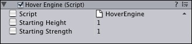
A linked Game Object with no overrides enabled.
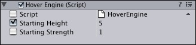
A linked Game Object with one override enabled.
A property's override flag is automatically enabled when you change it in the Inspector.
There are certain types of changes that will break the link between a Game Object and its Prefab. These are the basic rules for keeping a Prefab link:
If you perform any of these actions, you will see a warning message telling you that the Prefab link will be broken if you continue. When a Game Object's link to a Prefab has been broken, changes to the Prefab will no longer affect that particular Game Object.
If you want to make a change to all Prefab instances that requires an action which will break the link, you can reconnect the changed Game Object to its original Prefab. This will cause the Prefab to adopt the changes and all linked Game Objects to that Prefab will also be changed.
When creating or editing complex Prefabs, it is easier to instantiate them in the scene, edit the instance, and upload the changes to the Prefab itself. This workflow will allow you to view and tweak the Prefab in Scene View. Once you're done with your edits, select the root of the linked instance Game Object and choose Game Object -> Upload changes to Prefab from the main menu. All of the changes are then copied back to the Prefab, and applied to all other inheriting objects in the scenes.
Alternatively, you can use drag & drop to upload your changes. Drag the instanced Game Object back to the Prefab it came from. It is important that you change and upload a linked instance and not a random Game Object that is unrelated to the Prefab. If you do, all other linked instances will have their Components and properties overriden.
Uploading changes using drag & drop can cause unwanted data loss if you drop a different Game Object onto the Prefab. Using the Upload Changes to Prefab menu option is safer, as it will only work when the selected Game Object is a linked instance. If you drag & drop a different Game Object onto the Prefab, a confirmation pop-up will appear, verifying that you want to change a Prefab. If you click yes, the data that existed in your Prefab and its linked instances will be replaced. This operation cannot be undone so please be sure that you want to make a replacement, or always use Upload Changes to Prefab to play it safe.
It is possible to apply a Prefab to an existing, unlinked Game Object. This will add any of the Prefab's components that aren't contained in the Game Object and link it to the Prefab. This is most useful in specialized cases. To connect an existing Game Object to a Prefab, hold Alt and drag the Prefab from the Project View onto the Game Object in the Hierarchy View. The Game Object will now be a linked instance of the Prefab. This action will not change the Prefab itself, but will add or remove Components & child Game Objects to or from the Game Object you've linked.
When you place a mesh asset into your Assets folder, Unity automatically imports the file and generates a prefab out of the mesh. This Prefab is a little bit different from regular Prefabs, because it is built from the asset file itself. Because the Prefab is dependent on the asset file itself, whenever you make changes to the asset in your 3d art package, all changes will be reflected in all instantiated prefabs.
You are free to instantiate an asset Prefab and alter the instance, but you will not be able to upload changes to the Prefab. This is because uploading the data would alter the asset file itself. When you have altered an asset instance to your liking, create a new empty Prefab and drag the Game Object to it. Now you have a standard Prefab linked to the Game Object and can upload changes normally.
Here are some clear steps:
|
Lights are an essential part of every scene. While meshes and textures define the shape and look of a scene, lights define the mood and color themes. You'll likely work with more than one light in each scene. Making them work together requires a little practice but the results can be quite amazing.
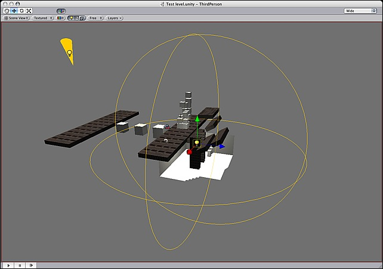
A simple, two-light setup
Lights can be added to your scene from the GameObject -> Create Other menu. There are three types of lights which we'll discuss in a moment. One a light has been added, you can manipulate it like any other Game Object. Additionally, you can add a Light Component to the selected Game Object by using Component->Rendering->Light.
There are many different options within the Light Component in the Inspector.
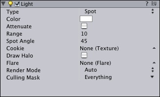
Light Component properties in the Inspector
Simply by changing the Color of a light, you can give a whole different mood to the scene.
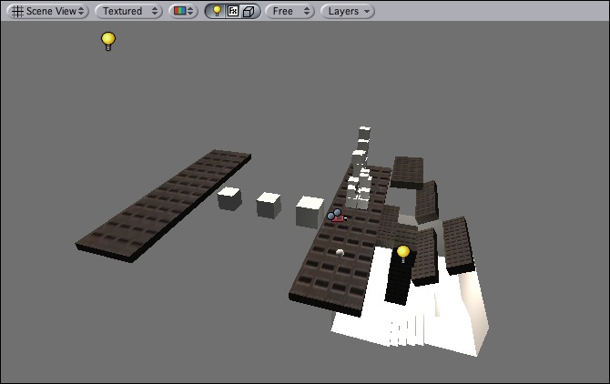
Bright, sunny lights
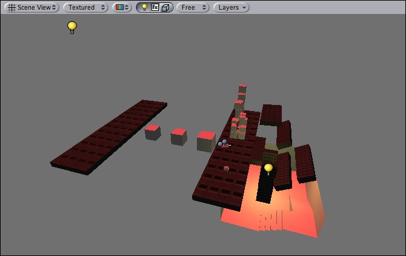
Dark, medieval lights
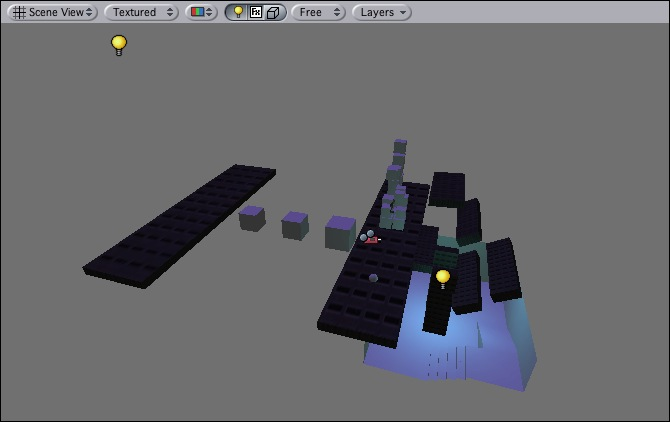
Spooky night lights
Lights will bring personality and flavor to your game. You use lights to illuminate the scenes and objects to create the perfect visual mood. Lights can be used to simulate the sun, match light, flashlights, gun-fire, or explosions, just to name a few.
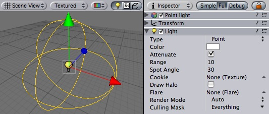
The Light Component
There are three types of lights in Unity:

The three different light types in Unity
| Property: | Function: |
|---|---|
The current type of light object
| |
| The color of the light emitted | |
| Does the light diminish with increasing distance? If disabled, objects' brightness will "pop" as they enter and exit the light's region of influence. It can be useful to turn off when you want to do some special effects. If the light is directional, this property is ignored. | |
| How far light is emitted from the center of the object. | |
| If the light is a Spot light, this determines the angle of the cone in degrees. | |
| You can assign a texture to a light. The alpha channel of this texture is used as a mask that determines how bright the light is at different places. If the light is a Spot or a Directional light, this must be a 2D texture. If the light is a Point light, it must be a cubemap. | |
| If checked, a spherical halo of light will be drawn with a radius equal to Range. | |
| Optional reference to the Flare that will be rendered at the light's position. | |
Choose whether this light is rendered as a vertex light, pixel light, or determined automatically. For a detailed description of this tradoff, see Performance Considerations below. Options include
| |
| Use to selectively exclude groups of objects from being affected by the light; see Layers. |
There are three basic light types in Unity. Each type can be customized to fit your needs.
You can use a texture that contains an alpha channel and assign it to be projected from any of the light types. This texture then becomes the cookie. The cookie's alpha mask modulates the light amount, creating light and dark spots on surfaces. They are a great way af adding lots of complexity to a scene, and hence providing a lot of atmosphere.
All builtin shaders in Unity seamlessly work with any type of light (VertexLit type shaders ignore light cookies though).
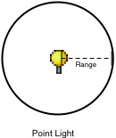
Point lights shine out from a point in all directions. They are the most common lights in computer games - typically used for explosions, light bulbs, etc. They have an average cost on the graphics processor.
Point light cookies must be cubemaps with an alpha channel. This cubemap gets projected out in all directions.
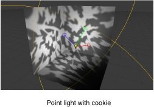

Spot lights only shine in one direction, in a cone. They are Perfect for flashlights or car headlights. They cost the most expensive on the graphics processor.
The cookie is projected down the cone of the spot light. This is good for creating an effect of light shining through a window. It is very important that the texture is black at the edges and its wrapping mode is set to clamp. For more info on this, see Texture print STDERR "WARN: nonexistent page href="tiki-editpage.php?page=class-FileTexture" , removing link ";
Directional lights are used mainly in outdoor scenes for sun & moonlight. The light affect all surfaces of objects in your scene. They are the least expensive on the graphics processor.

With a directional light, the cookie is projected down the center of the light's Z axis. If you want to stretch it out over a large area, set the texture's wrapping mode to 'repeat' (select the texture in the project window, and in the Inspector for the texture instead of 'Clamp' select 'Repeat').

The above is a great way to add some quick detail to large outdoor scenes. You can even slide the light slowly over the scene to give the impression of moving clouds.
Lights can be rendered in one of two methods: vertex lighting and per-pixel lighting. Vertex lighting only calculates the lighting at the vertices of the game models, and interpolates the lighting over the surfaces of the models. Per-pixel lights are calculated at every screen pixel, and hence are much more expensive. Some older graphics cards only support vertex lighting.

Lights have a big impact on rendering speed - therefore a tradeoff has to be made betwen lighting quality and game speed. Since per-pixel lights are much more expensive than per-vertex lights, Unity will only render the brightest lights at per-pixel quality. The actual number of pixel lights can be set as in the Quality Settings.
You can explicitly control if a light should be rendered as a vertex or pixel light using the Render Mode setting of the light. By default Unity will classify the light automatically based on how much the object is affected by the light.
The actual lights that are rendered as pixel lights are determined on an object-by-object case. This means:
See here for more information about optimizing rendering performance.
For more information on creating cookies, please see the tutorial on how to create a Spot Light cookie here.
Just as cameras are used in films to display the story to the audience, cameras in Unity are used to display the game world to the player. You will always have at least one camera in each scene, but you can have more than one. Multiple cameras can give you a two-player splitscreen or create advanced custom effects. You can animate cameras, or control them with physics. Practically anything you can imagine is possible with Cameras, and you can use typical or unique cameras to fit your game's style.
The remaining text is from the Camera Component reference page.
Cameras are the devices that capture and display the world to the player. By customizing and manipulating cameras, you can make the presentation of your game truly unique. You can have an unlimited number of cameras in a scene. They can be set to render in any order, at any place on the screen, or only certain parts of the screen.
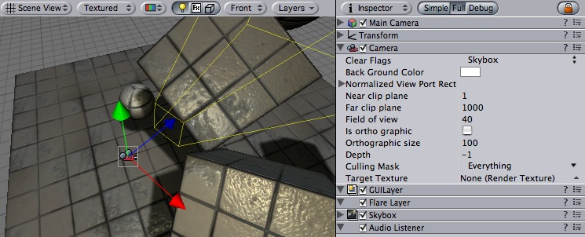
Unity's flexible Camera object
| Property: | Function: |
|---|---|
| Determines which parts of the screen will be cleared. This is handy when using multiple Cameras to draw different game elements. | |
| Color applied to the remaining screen after all elements in view have been drawn and there is no skybox. | |
| Four values that indicate where on the screen this camera view will be drawn, in Screen Coordinates. | |
| The beginning horizontal position that the camera view will be drawn. | |
| The beginning vertical position that the camera view will be drawn. | |
| The ending horizontal position that the camera view will be drawn. | |
| The ending vertical position that the camera view will be drawn. | |
| The closest point relative to the camera that drawing will occur. | |
| The furthest point relative to the camera that drawing will occur. | |
| Width of the Camera's view angle, measured in degrees along the local Y axis. | |
| Toggles the camera's capability to simulate perspective. | |
| The viewport size of the Camera when it is Orthographic. | |
| The camera's position in the draw order. Cameras with a higher depth will be drawn on top of cameras with a lower depth value. | |
| Include or omit layers of objects to be rendered by the Camera. Assign layers to your objects in the Inspector. | |
| Reference to a Render Texture that will contain the output of the Camera view |
Cameras are essential for displaying your game to the player. They can be customized, scripted, or parented to achieve just about any kind of effect imaginable. For a puzzle game, you might keep the Camera static for a full view of the puzzle. For a first-person shooter, you would parent the Camera to the player character, and place it at the character's eye level. For a racing game, you'd likely want to have the Camera follow your player's vehicle.
You can create multiple Cameras and assign each one to a different depth. Cameras are drawn from low depth to high depth. In other words, a Camera with a depth of 2 will be drawn on top of a Camera with a depth of 1. You can adjust the values of the Normalized View Port Rectangle property to resize and position the Camera's view onscreen. This can create multiple mini-views like missile cams, map views, rear-view mirrors, etc.

Multiple Cameras making use of Normalized View Port Rectangle
Each Camera stores a color and depth information when it renders its view. The portions of the screen that are not filled with a game object are empty, and will display the skybox by default. When you are using multiple Cameras, each one stores its own color and depth information in buffers, accumulating more data as each Camera renders. As any particular Camera in your scene renders its view, you can set the Clear Flags to clear different collections of the buffer information. This is done by choosing one of the four options:
This is the default setting. Any empty portions of the screen will display the current Camera's skybox. If the current Camera has no skybox set, it will default to the skybox chosen in the Render Settings (found in Edit -> Render Settings). It will then fall back to the Background Color.
Any empty portions of the screen will display the current Camera's Background Color.
For example, if you wanted to draw a player's gun without letting it get clipped inside the environment, you would set one Camera at Depth 0 to draw the environment, and another Camera at Depth 1 to draw the weapon alone. The weapon Camera's Clear Flags should be set to to "depth only". This will keep the graphical display of the environment on the screen, but discard all information about where each object exists in 3-D space. When the gun is drawn, the opaque parts will completely cover anything drawn, regardless of how close the gun is to the wall.
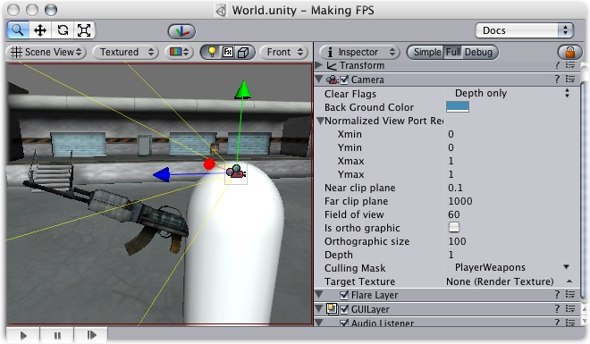
The gun is drawn last, after clearing the depth buffer of the cameras before it
This mode does not clear either the color or the depth buffer. The result is that each frame is drawn over the next, resulting in a smear-looking effect. This isn't typically used in games, and would likely be best used with a custom shader.
The Near and Far Clip Plane properties determine where the Camera's view begins and ends. The planes are laid out perpendicular to the Camera's direction and are measured from the its position. The Near plane is the closest location that will be rendered, and the Far plane is the furthest.

Far Clip Plane set to small versus large distance
The clipping planes also determine how depth buffer precision is distributed over the scene. In general, to get better precision you should move the Near plane as far as possible.
The Culling Mask is used for selectively rendering groups of objects using Layers. More information on using layers can be found here.
Commonly, it is good practice to put your User Interface on a different layer, then render it by itself with a separate camera set to render the UI layer by itself.
In order for the UI to display on top of the other Camera views, you'll also need to set the Clear Flags to "Depth only" and make sure that the UI Camera's Depth is higher than the other Cameras.
Normalized Viewport Rectangles are specifically for defining a certain portion of the screen that the current camera view will be drawn upon. You can put a map view in the lower-right hand corner of the screen, or a missile-tip view in the upper-left corner. With a bit of design work, you can use Viewport Rectangle to create some unique behaviors.
It's easy to create a two-player split screen effect using Normalized Viewport Rectangle. After you have created your two cameras, change player one's Ymin value to 0.5, and player two's Ymax: value to 0.5. This will make player one's camera display from halfway up the screen to the top, and player two's camera will start at the bottom and stop halfway up the screen.

Two-player display created with Normalized Viewport Rectangle
Marking a Camera as orthographic removes all perspective from the Camera's view.
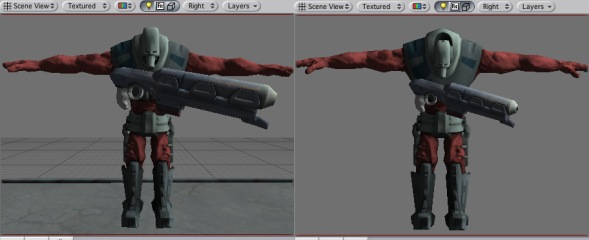
A non-orthographic and orthographic camera viewports
This feature is only available for Unity Pro licenses. It will place the camera's view onto a Texture that can then be applied to another object. This makes it easy to create sports arena video monitors, surveillance cameras, reflections etc.

Render Texture used to create a live Arena-Cam
Particles are essentially 2D images rendered in 3D space. They are primarily used for effects such as smoke, fire, water droplets, or leaves. A particle system is made up of three separate Components: Particle Emitter, Particle Animator, Particle Renderer. You can use a Particle Emitter and Renderer together if you want static particles. The Particle Animator will move particles in different directions and change colors. You also have access to each individual particle in a particle system via scripting, so you can create your own unique behaviors that way if you choose.
Please view the Particle Scripting Reference here.
The remainder of this page's text is from the Particle Component Reference pages.
Particle systems in Unity are used to make clouds of smoke, steam, fire and other atmospheric effects. Particle systems work by using one or two textures & drawing them many times, creating a chaotic effect.

One of the default explosions included in unity and the two textures it is made of. The orange texture is used for the flames in the bottom of the explosion, and the grayscale one is used to make the smoke near the top.
A typical particle system in Unity is an object that contains a Particle Emitter, a Particle Animator and a Particle Renderer component. The emitter generates the particles, the animator moves them over time, and the renderer gets them on the screen.
If you want your particles to interact with the world, add a particle collider component to the object.
The Ellipsoid Particle Emitter spawns particles inside a sphere. Use the Ellipsoid property below to scale & stretch the sphere.

The Ellipsoid Particle Emitter
| Property: | Function: |
|---|---|
| If enabled, the emitter will emit particles. | |
| The minimum size each particle can be at the time when it is spawned. | |
| The maximum size each particle can be at the time when it is spawned. | |
| The minimum lifetime of each particle, measured in seconds. | |
| The maximum lifetime of each particle, measured in seconds. | |
| The minimum number of particles that will be spawned every second. | |
| The maximum number of particles that will be spawned every second. | |
| The starting speed of particles in world space, along X, Y, and Z. | |
| The starting speed of particles along X, Y, and Z, measured in the object's orientation. | |
| A random speed along X, Y, and Z that is added to the velocity. | |
| The amount of the emitter's speed that the particles inherit. | |
| If enabled, the particles don't move when the emitter moves. If false, when you move the emitter, the particles follow it around. | |
| If enabled, the particle numbers specified by min & max emission is spawned all at once. If disabled, the particles are generated in a long stream. | |
| Scale of the sphere along X, Y, and Z that the particles are spawned inside. | |
| Determines an empty area in the center of the sphere - use this to make particles appear on the edge of the sphere. |
Ellipsoid Particle Emitters (EPEs) are the basic emitter, and are included when you choose to add a Particle System to your scene from Components -> Particles -> Particle System. You can define the boundaries for the particles to be spawned, and give the particles an initial velocity. From here, use the Particle Animator to manipulate how your particles will change over time to achieve interesting effects.

An EPE applied to a sphere
Particle Emitters work in conjunction with Particle Animators and Particle Renderers to create, manipulate, and display Particle Systems. All three components must be present on an object before the particles will behave correctly. When particles are being emitted, all different velocities are added together to create the final velocity.
Spawning properties like Size, Energy, Emission, and Velocity will give your particle system distinct personality when trying to achieve different effects. Having a small Size could simulate fireflies or stars in the sky. A large Size could simulate dust clouds in a musky old building.
Energy and Emission will control how long your particles remain onscreen and how many particles can appear at any one time. For example, a rocket might have high Emission to simulate density of smoke, and high Energy to simulate the slow dispersion of smoke into the air.
Velocity will control how your particles move. You might want to change your Velocity in scripting to achieve interesting effects, or if you want to simulate a constant effect like wind, set your X and Z Velocity to make your particles blow away.
If this is disabled, the position of each individual particle will always translate relative to the Position of the emitter. When the emitter moves, the particles will move along with it. If you have Simulate in World Space enabled, particles will not be affected by the translation of the emitter. For example, if you have a fireball that is spurting flames that rise, the flames will be spawned and float up in space as the fireball gets further away. If Simulate in World Space is disabled, those same flames will move across the screen along with the fireball.
This property will only apply if Simulate in World Space is enabled.
If this property is set to 1, the particles will inherit the exact translation of the emitter at the time they are spawned. If it is set to 2, the particles will inherit double the emitter's translation when they are spawned. 3 is triple the translation, etc.
One Shot emitters will create all particles within the Emission property all at once, and cease to emit particles over time. Here are some examples of different particle system uses with One Shot enabled or disabled:
Enabled
Disabled
The Min Emitter Range determines the depth within the ellipsoid that particles can be spawned. Setting the range to 0 will allow particles to spawn anywhere from the center core of the ellipsoid to the outer-most range. Setting the range to 1 will restrict spawn locations to the outer-most range of the ellipsoid.

Min Emitter Range of 0

Min Emitter Range of 1
The Mesh Particle Emitter emits particles around a mesh. Particles are spawned from the surface of the mesh, which can be necessary when you want to make your particles interact in a complex way with objects.

The Mesh Particle Emitter
Here is how to create a Mesh Particle Emitter.
| Property: | Function: |
|---|---|
| If enabled, the emitter will emit particles. | |
| The minimum size each particle can be at the time when it is spawned. | |
| The maximum size each particle can be at the time when it is spawned. | |
| The minimum lifetime of each particle, measured in seconds. | |
| The maximum lifetime of each particle, measured in seconds. | |
| The minimum number of particles that will be spawned every second. | |
| The maximum number of particles that will be spawned every second. | |
| The starting speed of particles in world space, along X, Y, and Z. | |
| The starting speed of particles along X, Y, and Z, measured in the object's orientation. | |
| A random speed along X, Y, and Z that is added to the velocity. | |
| The amount of the emitter's speed that the particles inherit. | |
| If enabled, the particles don't move when the emitter moves. If false, when you move the emitter, the particles follow it around. | |
| If enabled, the particle numbers specified by min & max emission is spawned all at once. If disabled, the particles are generated in a long stream. | |
| If enabled, particles are spawned all over the mesh's surface. If disabled, particles are only spawned from the mesh's vertrices. | |
| If enabled, particles are spawned in the order of the vertices defined in the mesh. Although you seldom have direct control over vertex order in meshes, most 3D modelling applications have a very systematic setup when using primitives. It is important that the mesh contains no faces in order for this to work. | |
| Minimum amount that particles are thrown away from the mesh. | |
| Maximum amount that particles are thrown away from the mesh. |
Mesh Particle Emitters (MPEs) are used when you want more precise control over the spawn position & directions than the simpler Ellipsoid Particle Emitter gives you. They can be used for making advanced effects like flaming swords.

A flaming sword created with a Mesh Particle Emitter
MPEs work emitting particles at the vertices of the attached mesh. Therefore, the areas of your mesh that are more dense with polygons will be more dense with particle emission.
Particle Emitters work in conjunction with Particle Animators and Particle Renderers to create, manipulate, and display Particle Systems. All three components must be present on an object before the particles will behave correctly. When particles are being emitted, all different velocities are added together to create the final velocity.
Spawning properties like Size, Energy, Emission, and Velocity will give your particle system distinct personality when trying to achieve different effects. Having a small Size could simulate fireflies or stars in the sky. A large Size could simulate dust clouds in a musky old building.
Energy and Emission will control how long your particles remain onscreen and how many particles can appear at any one time. For example, a rocket might have high Emission to simulate density of smoke, and high Energy to simulate the slow dispersion of smoke into the air.
Velocity will control how your particles move. You might want to change your Velocity in scripting to achieve interesting effects, or if you want to simulate a constant effect like wind, set your X and Z Velocity to make your particles blow away.
If this is disabled, the position of each individual particle will always translate relative to the Position of the emitter. When the emitter moves, the particles will move along with it. If you have Simulate in World Space enabled, particles will not be affected by the translation of the emitter. For example, if you have a fireball that is spurting flames that rise, the flames will be spawned and float up in space as the fireball gets further away. If Simulate in World Space is disabled, those same flames will move across the screen along with the fireball.
This property will only apply if Simulate in World Space is enabled.
If this property is set to 1, the particles will inherit the exact translation of the emitter at the time they are spawned. If it is set to 2, the particles will inherit double the emitter's translation when they are spawned. 3 is triple the translation, etc.
One Shot emitters will create all particles within the Emission property all at once, and cease to emit particles over time. Here are some examples of different particle system uses with One Shot enabled or disabled:
Enabled
Disabled
Enabling your emitter to interpolate triangles will allow particles to be spawned outside of the mesh's vertices. This option is off by default, so particles will only be spawned at vertex locations.

A flaming sword with Interpolate Triangles off (by default)
Enabling this option will spawn particles on and in-between vertices, essentially all over the mesh's surface (seen below).

A flaming sword with Interpolate Triangles on
It bears repeating that even with Interpolate Triangles enabled, particles will still be denser in areas of your mesh that are more dense with polygons.
Enabling Systematic will cause your particles to be spawned in your mesh's vertex order. The vertex order is set by your 3D modeling application.

An MPE attached to a sphere with Systematic enabled
Normal Velocity controls the speed at which particles are emitted along the normal from where they are spawned.
For example, create a Mesh Particle system, use a cube mesh as the emitter, enable Interpolate Triangles, and set Normal Velocity Min and Max to 1. You will now see the particles emit from the faces of the cube in a straight line.
MPEs can also be used to make glow from a lot of lamps placed in a scene. Simply make a mesh with one vertex in the center of each lamp, and build an MPE from that with a halo material. Great for evil sci-fi worlds.
Particle Animators move your particles over time, you use them to apply wind, drag & color cycling to your particle systems.

The Particle Animator
| Property: | Function: |
|---|---|
| If enabled, particles cycle their color over their lifetime. | |
| The 5 colors particles go through. All particles cycle over this - if some have a shorter life span than others, they will animate faster. | |
| An optional world-space axis the particles rotate around. Use this to make advanced spell effects or give caustic bubbles some life. | |
| An optional local-space axis the particles rotate around. Use this to make advanced spell effects or give caustic bubbles some life. | |
| Use this to make particles grow in size over their lifetime. As randomized forces will spread your particles out, it is often nice to make them grow in size so they don't fall apart. Use this to make smoke rise upwards, to simulate wind, etc. | |
| A random force added to particles every frame. Use this to make smoke become more alive. | |
| The force being applied every frame to the particles, measure relative to the world. | |
| How much particles are slowed every frame. A value of 1 gives no damping, while less makes them slow down. | |
| If enabled, the GameObject attached to the Particle Animator will be destroyed when all particles disappear. |
Particle Animators allow your particle systems to be dynamic. They allow you to change the color of your particles, apply forces and rotation, and choose to destroy them when they are finished emitting. For more information about Particle Systems, reference Mesh Particle Emitters, Ellipsoid Particle Emitters, and Particle Renderers.
If you would like your particles to change colors or fade in/out, enable them to Animate Color and specify the colors for the cycle. Any particle system that animates color will cycle through the 5 colors you choose. The speed at which they cycle will be determined by the Emitter's Energy value.
If you want your particles to fade in rather than instantly appear, set your first or last color to have a low Alpha value.

An Animating Color Particle System
Setting values in either the Local or World Rotation Axes will cause all spawned particles to rotate around the indicated axis (with the Transform's position as the center). The greater the value is entered on one of these axes, the faster the rotation will be.
Setting values in the Local Axes will cause the rotating particles to adjust their rotation as the Transform's rotation changes, to match its local axes.
Setting values in the World Axes will cause the particles' rotation to be consistent, regardless of the Transform's rotation.
You use force to make particles accelerate in the direction specified by the force.
Damping (Drag) can be used to decelerate or accelerate without changing their direction.
A value of 1 means no damping is applied, the particles will not slow down or accelerate.
A value of 0 means particles will stop immediately.
A value of 2 means particles will double their speed every second.
You can destroy the Particle System and any attached Game Object by enabling the AutoDestruct property. For example, if you have an oil drum, you can attach a Particle System that has Emit disabled and AutoDestruct enabled. On collision, you enable the Particle Emitter. The explosion will occur and after it is over, the Particle System and the oil drum will be destroyed and removed from the scene.
The Particle Collider is used to collide particles against other objects in the scene.

A shot of a very simple particle system with particle collider colliding with a cube
| Property: | Function: |
|---|---|
| Particles can be accelerated or slowed down when they collide against other objects. This factor is similar to the Particle Animator's damping. | |
| Amount of energy (in seconds) a particle should lose when colliding. If the energy goes below 0, the particle is killed | |
| If a particle's velocity drops below Min Kill Velocity because of a Collision, it will be eliminated. | |
| Which layers the particles collides against. | |
| When colliding every particle sends out a message that you can catch through scripting. |
To create a particle system with particle collider:
If Send Collision Message is enabled, any particles that are in a collision will send the message OnParticleCollision to both the particle's GameObject and the GameObject the particle collided with.
The Particle Renderer renders the particle system on screen.
 The Particle Renderer
The Particle Renderer
| Property: | Function: |
|---|---|
| Reference to a list of Materials that will be displayed in the position of each individual particle. | |
| The amount of stretching that is applied to the particles based on Camera movement. | |
Determines how the particles are rendered.
| |
| If Stretch Particles is set to Stretched, this value determines how long the particles are in their direction of motion. | |
| If Stretch Particles is set to Stretched, this value determines the rate at which particles will be stretched, based on their movement speed. | |
| If either of these are set, the UV coordinates of the particles will be generated for use with a tile animated texture. See the section on Animated Textures below. | |
| Number of frames located across the X axis | |
| Number of frames located across the Y axis | |
| How many times to loop the animation sequence. |
Particle Renderers are required for any Particle Systems to be displayed on the screen.

A Particle Renderer is what makes explosion appear on the screen
When setting up a particle renderer it is very important to use an appropriate material and shader. Most of the time you want to use a material with one of the builtin Particle shaders. There are some premade materials in the Standard Assets/Particles/Sources folder.
Creating a new material is easy:
By default particles are rendered billboarded. That is simple square sprites. This is good for smoke and explosions and most other particle effects.
Particles can be made to either stretch with the velocity. This is useful for sparks, lightning or laser beam. Length Scale and Velocity Scale affects how long the stretched particle will be.
Sorted Billboard can be used to make all particles sort by depth. Sometimes this is necessary, mostly when using Alpha Blended particle shaders. This can be expensive and should only be used if it really makes a quality difference when rendering.
Particle systems can be rendered with an animated tile texture. To use this feature, make the texture out of a grid of images. As the particles go thorough their life cycle, they will cycle through the images. This is good for adding more life to your particles, or making small rotating debris pieces.
A large part of making a game is assigning all your source files to world objects. This goes for textures, models, sound effects and behaviour scripts. Inside Unity, you have quick access to all the files that makes up your game using the Project view:

This view shows the organization of the files in your project folder. Whenever you change one of your asset files, changes are immediately reflected into your game!
In order to import an asset file in your game, you simple move the file into the Assets folder in the Finder, and it will get imported into Unity. To assign it to objects in your game scenes, simply drag the files from the project window over your objects in the hierarchy or scene views.
What exactly happens depends on the type of file:
Unity will automatically detect files as they are added to your project folder. When you put any asset into your project's Assets folder, you will see the asset appear in your Project View within the editor. The Project View is window into the Assets folder. When you are building a game and you want to add a new asset of any type, all you have to do is create the asset and save it somewhere in your project's assets folder. When you return to Unity or launch it, the added file(s) will be detected and imported.
Additionally, as you update and save your assets, the changes will be detected and the asset will be re-imported in Unity. This allows you to focus on refining your assets without struggling to make them compatible with Unity.
It is very important to remember to move, rename, and otherwise manipulate your assets from the Project View once they have been imported into Unity. There are many dependencies that are established behind the scenes, and if you relocate a file or folder from the Finder, the dependencies will be broken and you will have to re-link your assets. This is a huge headache and you probably don't want to do it. So just remember to only Save to the Assets folder from the Finder, and never rename or move files from the Finder. Always use Project View.
There are a handful of basic asset types that will go into your game. The types are:
We'll discuss the details of importing each of these file types and how they are used.
Whichever 3-D package you are using, Unity will import the meshes and animations from each file. For a list of applications that are supported by Unity, please see this page.
Your mesh file does not need to have an animation to be imported. If you do use animations, you have your choice of importing all animations from a single file, or importing separate files each with one animation. For more information about importing animations, please see this page.
Once your mesh is imported into Unity, you can drag it to the Scene or Hierarchy to create an instance of it. You can also add Components to the instance, which will not be attached to mesh file itself.
Meshes will be imported with UVs and a number of default materials (one material per UV). You can then assign the appropriate texture files to the materials and complete the look of your mesh in Unity's game engine.
Unity supports all image formats. Even when working with layered Photoshop files, they are imported without disturbing the Photoshop format. This allows you to work with a single texture file for a very care-free and streamlined experience.
You should make your textures in dimensions that are to the power of two. E.g. 32x32, 64x64, 128x128, 256x256, etc. Simply placing them in your project's Assets folder is sufficient, and they will appear in the Project View.
Once your texture has been imported, you should assign it to a Material. The material can then be applied to a mesh, particle system, or GUI Texture. Using the Import Settings, it can also be converted to a Cubemap or Bumpmap for different types of applications in the game. For more information about importing textures, please read the Texture Component page.
Any sounds you want to use in your game should be converted to Ogg Vorbis format before they are imported into Unity. Unity will support other sound file types like MP3, but they will not be compressed when a build of your game is published. Using Ogg Vorbis files from the start will keep your player sizes low.
You can also use WAV files for sounds that are very short, like a machine gun sound. If your sound is longer than 5 - 10 seconds, you should convert it to Ogg Vorbis.
Once sound files are imported, they can be attached to any Game Object. The Game Object will require an Audio Source Component to use the sound file.
At the core of any 3D game are Meshes - objects consisting of triangles, with textures applied.
Meshes in Unity are passed through render pipeline. Although there may be many variations, most often a pipeline consists of a Mesh Filter and a Mesh Renderer:

A Mesh Filter together with Mesh Renderer makes the model appear on screen. Car model courtesy of ATI Technologies Inc.
Meshes make up a large part of your 3D worlds. You don't build your meshes in Unity, but in another application.
In Unity, we have done everything in our power to make this process as simple as possible. There are a lot of details, but the following should hold:
Unity supports importing from a lot of 3D applications. Choose the one you're working with below:
Unity can read .FBX, .3DS, .dxf and .obj files, so if your program can export to this format you're home free. FBX exporters for popular 3D packages can be found here.
Unity will attempt to hook up materials to your imported scenes - Basically, just place textures in a folder called 'Textures' next to the sccene file, or in any folder above it.
To access the importing settings for a 3D scene file, click the Settings button in the project window, or control-click a scene file and select Import Settings....
| Property: | Function: |
|---|---|
| Enable this to generate material files near the found texture files. When enabled, different scenes will share the same material settings when they use the same textures. For the precise rules, see Material Generation below. | |
| This will generate materials per scene, so only this scene uses them. | |
| This will not generate materials at all. | |
| Unity's physics system expects 1 meter in the game world to be 1 unit in the imported file. If you like to model at a different scale, this is the place to fix it. | |
| If this is enabled, your meshes will be imported with Mesh Colliders automatically attached. This is recommended for background geometry, but never for geometry you move about. For more info see Colliders below. | |
| Enable this to automatically generate normals for the imported geometry. If enabled, the Smoothing Angle sets how sharp an edge has to be to be treated as a hard edge. | |
| Use this if Lightmapped shaders pick up wrong UV channels. | |
Controls how animations are imported.
| |
| When using IK or simulation in your animation package, enable this. Unity will convert to FK on import. | |
| Perform keyframe reduction on imported animations. You should always use this, as it takes less memory and is faster. | |
| If you have multiple animations in a single file, here you can split it into multiple clips. |
Materials are found based on the following rules:
If Unity can't find the Material, it tries to create one from the texture:
Unity features two primary types of colliders: Mesh colliders and Primitive colliders. Mesh colliders are imported together with your geometry and are used for background objects. When you enable Meshes Have Colliders in the import settings, the mesh becomes solid as far as the physics system is concerned.
If you are moving the object around (a car for example), you can not use mesh colliders. Instead, you will have to use primitive colliders. In this case you should disable the Meshes Have Colliders setting.
Animations are automatically imported from the scene. For more details about animation import options see Character-Animation chapter.
Textures bring your meshes, particles, and interfaces to life! They are image or movie files that you lay over or wrap around your objects. As they are so important, they have a lot of properties. If reading this for the first time, jump down to Details, and return to the actual settings when you need a reference.
Which shaders you use for your objects put specific requirements on your textures, but the basic principle is that you can put any image file inside your project. If it meets the size requirements (specified below), it will get imported and optimized for game use.
This extends to multi-layer Photoshop or TIFF files - they are flattened on import, so there is no size penalty for your game.
The texture inspector looks a bit different from most others:

The top section contains a few settings, and the bottom part contains a texture preview. The changes you make to the bottom part only affect the display, and not the texture itself.
| Property: | Function: |
|---|---|
Selects how the texture is filtered when it gets stretched by 3D transformations.
| |
| Increases texture quality when viewing the texture at a steep angle. Good for floor textures | |
Selects how the texture behaves when tiled
|
Textures all come from image files in your project folder. How they are imported is specified by the texture's import settings. You change these by selecting the file texture in the project window and clicking the import settings button on the toolbar above:
This brings up the import settings dialog:

| Property: | Function: |
|---|---|
| The maximum imported texture size. A lot of artists prefer to work with huge textures - scale the texture down to a suitable size with this. | |
What internal representation is used for the texture. This is a tradeoff between size and quality. In the examples below we show the final size of a in-game texture of 256 by 256 pixels.
| |
| If enabled, an alpha transparency channel will be generated by the image's existing values of light & dark. | |
| If enabled on textures that have non-power-of-two sizes, this will scale texture up to the nearest power-of-two size at import time. For more info see Texture Sizes section below. | |
| Generates a cubemap from the texture using different generation methods. | |
| Select this to enable mip-map generation. Mip maps are smaller versions of the texture that gets used when the texture is very small on screen. For more info, see Mip Maps, below. | |
| Select this to enable per-mip-level gamma correction. | |
| Select this to avoid colors seeping out to the edge of the lower Mip levels. Used for light cookies (see below). | |
3 ways of mip map filtering is available to optimize image quality
| |
| Enable this to make the mipmaps fade to gray the mip levels progress. This is used for detail maps. | |
| The first mip level to begin fading out at. | |
| The mip level where the texture is completely grayed out | |
| Enable this to turn the color channels into a format suitable for real-time bumpmapping. For more info, see Bump Maps, below... | |
| Increase the amount of bumpyness. | |
Determine how the bumpyness is calculated
|
Unity can read the following file formats: PSD, TIFF, JPG, TGA, GIF, PNG, BMP, IFF, PICT. It should be noted that Unity can import multi-layer PSD & TIFF files just fine. They are flattened automatically on import but the layers are maintained in the assets themselves, so you don't lose any of your work when using these file types natively. This is important as it allows you to just have one copy of your textures that you can use from Photoshop, through your 3D modelling app and into Unity.
Ideally texture sizes should be powers of two on the sides. These sizes are as follows: 2, 4, 8, 16, 32, 64, 128, 256, 512, 1024 or 2048 pixels. The textures do not have to be square, i.e. width can be different from height.
It is possible to use other (non power of two) texture sizes with Unity. Non power of two texture sizes work best when used on GUI Textures, however if used on anything else they will be converted to an uncompressed RGBA 32 bit format. That means they will take up more video memory (compared to DXT compressed textures) and will be slightly slower to load. In general you'll use non power of two sizes only for making GUI.
Non power of two texture assets can be scaled up at import time using a Scale NonPower2 Sizes Up option in the import settings. Then Unity will scale texture contents up to the next power of two, and in the game they will behave just like any other texture. So they can still be compressed and very fast to load.
When mapping a 2D texture on to a 3D model, some sort of wrapping is done. This is called UV mapping and is done in your 3D modelling app. Inside Unity, you can scale and move the texture using Materials. Scaling bump & detail maps are especially useful
Mip Maps are a list of progressively smaller versions of an image, used optimise performance on real-time 3D engines. Object that are far away from the camera use the smaller textures. Using mip maps uses 33% more memory, but not using mipmaps can be a huge performance loss. You should always you mipmaps for in-game textures; the only exceptions are textures that will never be minified (e.g. GUI textures).
Bump maps are used by bump map shaders to make low-polygon models look as if they contain more detail. Unity uses normal maps encoded as RGB images. You also have the option to generate a normal map from a grayscale height map image.
If you want to do a terrain, you normally use your main texture to show where there are grass, rocks sand, etc... If your terrain has a decent size, you will end up with a very blurry terrain. Detail textures hide this fact by fading in small details as your main texture get up close.
When drawing detail textures, a neutral gray is invisible, white makes the main texture twice as bright and black makes the main texture completely black.
If you want to use texture for reflection maps (e.g. use Reflective builtin shaders), you need to use Cubemap Textures.
An interesting way to add a lot of visual detail to your scenes is to use cookies - greyscale textures you use to control the precise look of in-game lighting. This is fantastic for making moving clouds and giving an impression of dense foilage. The Light page has more info on all this, but the main thing is that for textures to be usable for cookies, the following properties need to be set:
For spotlight cookies, use the following settings:
| Property: | Function: |
|---|---|
| Any setting that has an alpha channel | |
| Enabled | |
| Enabled | |
| Enabled |
For directional lights, use the following settings:
| Property: | Function: |
|---|---|
| Any setting that has an alpha channel | |
| Enabled | |
| Enabled | |
| Disabled |
For point lights, you need to use Cube Maps. To generate one, either make six textures and assign them as detailed in Cubemap Textures or generate on with the following settings:
| Property: | Function: |
|---|---|
| Any setting that has an alpha channel | |
| Any other setting than None. | |
| Enabled | |
| Enabled | |
| Disabled |
Unity has an extensive Shader system, allowing you to tweak the look of all in-game graphics. It works like this:
A Shader basically defines a formula for how the in-game shading should look. Within any given Shader is a number of properties (typically textures). Shaders are implemented through Materials, which are attached directly to individual Game Objects. Within a Material, you will choose a Shader, then define the properties (usually textures and colors but properties can vary) that are used by the Shader.
As this is rather complex, a graph is in order:
On the left side of the graph is the Carbody Shader. 2 different Materials are created from this: Blue car Material and Red car Material. Each of these Materials have 2 textures assigned; the Car Texture defines the main texture of the car, and a Color FX texture. These properties are used by the shader to make the car finish look like 2-tone paint. This can be seen on the front of the red car: it is yellow where it faces the camera and then fades towards purple as the angle increases. The car materials are attached to the 2 cars. The car wheels, lights and windows don't have the color change effect, and must hence use a different Material. At the bottom of the graph there is a Simple Metal Shader. The Wheel Material is using this Shader. Note that even though the same Car Texture is reused here, the end result is quite different from the car body, as Shader used in the Material is different .
Note: Quite a few textures, Shaders & Materials were left out from this diagram in order to avoid clutter.
To be more specific, a Shader defines:
A Material defines:
Shaders are meant to be written by graphics programmers. They are written using the ShaderLab language, which is quite simple. However, getting a shader to work well on a variety graphics cards is an involved job and requires a fairly comprehensive knowledge of how graphics cards work.
A number of shaders are built into Unity directly, and some more come in the Standard Assets Library.
To make a new Material, either:
When you select an object in the scene, you can pick the Material from the object's Renderer component in the Inspector, or dragging a Material to the object from the library. After doing this, the Material inspector shows up. First it shows the shader used by this material, then all material properties are listed. Currently the properties can be colors, sliders, textures, numbers and vectors. As you change these, you can see the changes to the scene updated in real-time.
To assign a texture, drag one from the project view over one of the texture buttons, or click "Select" and choose from a list. To edit the mapping options for the texture, click the "Placement" button. Mapping optons will fold out:
| Property: | Function: |
|---|---|
| Slides the texture around | |
| Scales the texture along the different axes |
Sometimes, you wish to change the shader being used by a material. In order to do so, simply expand the Shader drop-down in the Material inspector, and choose your new shader. Unity will carry across any properties that the shaders share. All shaders that ship with Unity have been constructed with this in mind, so most of the time you can just replace a shader and see the effect.
The builtin Unity shaders matrix
Unity comes with 30+ ready to use shaders. They can be grouped by purpose:
Adding sound to a game is one of the final touches that make a game feel like a complete product. Be it nerve-wrecking sound effects or thumping background music, they are seen by Unity as Audio Clips.
See the Sound chapter in the "Creating Gameplay" section of this manual for more information on how to use sound in Unity.
Audio Clips are used by Audio Sources to represent the audio asset imported into Unity.

The Audio Clip
Audio Clips just work. The only thing you should have to do with them is reference them from within Audio Sources.
Sound assets only have 3 read-only properties.
| Property: | Function: |
|---|---|
The format the sound is stored in. Unity supports 4 raw formats and one compressed.
| |
| The duration of the sound file in seconds. | |
| The sampling frequency of the file. |
Unity currently supports the following file formats:
Stereo sounds are always played as is. They are not faded out over distance and they do not have panning. This makes them optimal for music and ambient sources.
Mono sounds always fade out over distance and do panning. This is good for all effects requiring 3D positional sound.
For music you should always use the ogg vorbis format. The frequency should be 44khz and it should be stereo. (44 khz is recommended since playback will be faster than with 22khz)
Short audio clips (eg. foot steps, bullet explosion) you should use AIFF or WAV with mono and either 22khz or 11khz. Usually you should not use 44khz since that takes up too much disk space and the quality difference is not hearable.
Long audio clips should use ogg vorbis and mono. A good rule of thumb is that if a sound file is more than 200k uncompressed, then it makes sense to use ogg vorbis and stream the sound instead (when using ogg vorbis, always choose 44khz).
This is a short introduction on how to add and scripts in a project. For detailed information including the scripting API, please view the Scripting Reference.
Scripting inside Unity is done by writing simple behaviour scripts in JavaScript, C# or Boo. You can use one or all scripting languages in a single project, there is no penalty for using more than one. This manual addresses scripting with JavaScript unless specifically stated otherwise.
To create a new script, open the Assets -> Create -> JavaScript (or C Sharp Script or Boo Script) from the main menu. This will create a new script called NewBehaviourScript and place it in the selected folder in Project View. If no folder is selected in Project View, the script will be created at the root level.
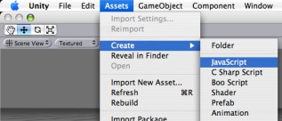
You can edit the script by double-clicking on it in the Project View. This will launch Unitron, the script editor for Unity.
These are the contents of a new, empty behaviour script:
function Update () {
}
A new, empty script does not do a lot on its own, so let's modify it a bit:
function Update () {
print("Hello World");
}
Save the above script and create a new object in a scene by opening GameObject -> Create Other -> Cube. This will create a cube Game Object in the scene.
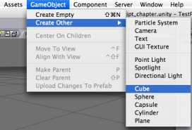
Now attach the script to the cube object either by dragging the script from the Project View onto the cube object (in the Scene or Hierarchy View) or by selecting the cube and then choosing the script from the Component -> Scripts -> New Behaviour Script. If you have changed the name of your script, you will see the name you chose appear in the menu.
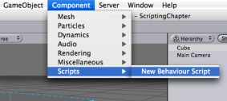
Now, if you select the cube and look at the inspector, you will see that the script is now visible.

Press Play to test your creation. You should see the text "Hello World" appear beside the Play/Pause/Step buttons. Exit play mode when you see it.
A print statement like in above example, can be very handy when debugging your script, but this one is not doing anything to the cube it is attached to. Let's change the script to make the cube rotate slowly around its Y axis.
function Update () {
transform.Rotate(0, 5*Time.deltaTime, 0);
}
So what's all this about? The line that has replaced the print statement first fetches the cube object's Transform and then tells it to rotate 0 degrees around its X axis, 5 around the Y axis and 0 around the Z axis every second. We multiply the number of degrees with Time.deltaTime in order to make the rotation speed consistent on different machines with different frame rates. Remember that the Update function is called on every frame and this variable contains the number of seconds since last time it got called.
To find out which values you can modify, a good starting point is to look on the Inspector window of an object. There you'll see a list of Components, with each Component having a number of Properties. As a rule of thumb, you can modify these properties using the Component.property syntax. So if you add a Rigidbody to the cube (making it affected by physics object), you can change the mass of the cube's Rigidbody from scripting by assigning a value to rigidBody.mass.
When playing around with the above script, you might want to adjust the speed of rotation. This can be done by modifying the script directly, but requires Unity to recompile it every time. Also if you attach the script to multiple objects they will all rotate in the same way.
To get around this, you can add variables to your script.
var speed = 5.0;
function Update () {
transform.Rotate(0, speed*Time.deltaTime, 0);
}
Note that after recompiling, the speed variable shows up in the cube's Inspector.
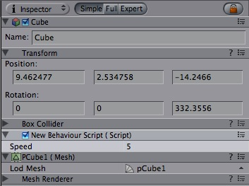
Hit Play and try modifying the value inside the Inspector while the game is running. The speed will change instantly.
This was just a short introduction on how to use scripts inside the Editor. For more examples, check out the Script Tutorial project that comes with Unity. You could also read through Scripting Overview inside the Script Reference, which contains a more thorough introduction into scripting with Unity plus pointers into the reference itself for in-depth information. Also take a look at the Unity Forums.
"The happiest man is he who best understands the art of finding happiness without letting it encroach upon his duties."
– Giacomo Casanova (1725-1798), voicing an early version of the game-design maxim of balancing frustration and reward.
Unity empowers game designers to make games. What's really special about Unity is that you don't need years of experience with code or a degree in art to make fun games. There are a handful of basic workflow concepts provided by Unity, and if you learn how to use them, you will find yourself making games in no time. With the time you will save getting your games up and running, you will have that much more time to refine, balance, and tweak your game to perfection.
This section will explain the core concepts you need to know for creating unique, amazing, and fun gameplay.
Hopefully by now you understand the concept of Prefabs. They are a collection of pre-defined Game Objects & Components that are re-usable throughout your game. Prefabs come in very handy when you want to instantiate complicated Game Objects at runtime. The alternative to instantiating Prefabs is to create Game Objects from scratch using code. Instantiating Prefabs has many advantages over this. Let's look at some examples.
Instantiating Prefabs instead of building new Game Objects from code has huge advantages:
Let's compare creating objects from code and using prefabs by building a brick wall.
First lets build a brick wall from code:
function Start ()
{
for (var y=0;y<5;y++)
{
for (var x=0;x<5;x++)
{
var cube = GameObject.CreatePrimitive(PrimitiveType.Cube);
cube.transform.position = Vector3 (x, y, 0);
cube.AddComponent(Rigidbody);
}
}
}
Now lets say you want to start tweaking values. For example you might want to assign a different texture, a different color, change friction and change the mass of the rigidbody. You can do all those things in one line of code but when you want to tweak a lot of things you will still end up with 6 lines of code. Plus tweaking a value takes longer if you have to type it, instead of edit a value in the inspector.
The point is once you go beyond the basics, creating everything completely from code becomes unmanagable very quickly.
So why not just create one of those cubes in the Editor, adjust all the values until they are right, add any Components we like, and instantiate a bunch of them?
This is the script necessary to create our stack.
var cube : Transform;
function Start ()
{
for (var y=0;y<5;y++)
{
for (var x=0;x<5;x++)
{
var cube = Insantiate(cube, Vector3 (x, y, 0), Quaternion.identity);
}
}
}
Now this is not only very clean but also very reusable. There is nothing saying we are instantiating a cube or that it must contain a rigidbody. All of this is defined in the Prefab and can be quickly created in the Editor.
Now we only need to create the Prefab, which we do in the Editor
This is a workflow pattern that can be used over and over again in Unity. In the beginning you might wonder why this is so much better, because the script creating the cube from code is only 2 lines longer.
But because you are using a Prefab now, you can adjust the Prefab in seconds. Want to change the mass of all those instances? Adjust the Rigidbody in the Prefab only once. Want to use a different Material for all the instances? Drag the Material onto the Prefab only once. Want to change friction? Use a different Physic Material in the Prefab's collider. Want to add a particle system to all those boxes? Add a child to the Prefab only once.
While it would be possible to build a rocket Game Object completely from code, adding Components manually and setting properties, it is far easier to instantiate a Prefab. You can instantiate the rocket in just one line of code, no matter how complex the rocket's Prefab is. After instantiating the Prefab you can also modify any properties of the instantiated object. E.g. you can set the velocity of the rocket's Rigidbody.
Aside from being easier to use. You can update the prefab later on. So if you are building a rocket you don't immediately have to add a particle trail to it. You can do that later. As soon as you add the trail as a child Game Object to the Prefab, all your instantiated rockets will have particle trails. And lastly, you can quickly tweak property of the rocket game object in the Inspector, making it far easier to fine tune your game.
This script shows how to launch a rocket using the Instantiate function.
// Require the rocket to be a rigidbody.
// This way we the user can not assign a prefab without rigidbody
var rocket : Rigidbody;
var speed : 10.0;
function FireRocket () {
var rocketClone : Rigidbody = Insantiate(rocket, transform.position, transform.rotation);
rocketClone.velocity = transform.forward * speed;
// You can also acccess other components / scripts of the clone
rocketClone.GetComponent(MyRocketScript).DoSomething();
}
// Calls the fire method when holding down ctrl or mouse
function Update () {
if (Input.GetButtonDown("Fire1"))
FireRocket();
}
Let's say you have a fully rigged enemy character and he dies. You could simply play a death animation on the character and disable all scripts that usually handle the enemy logic. You probably have to take care of removing several scripts, adding some custom logic to make sure that no one will continue attacking the dead enemy anymore, for example.
A far better approach is to immediately delete the entire character and instantiate a wreck prefab instead of it. This gives you a lot of flexibility. You could use a different material for the dead character, attach completely different scripts, spawn a Prefab containing the object broken into many pieces to simulate a shattered enemy, or simply instantiate a Prefab containing a version of the character.
Any of these options can be achieved with a single call to instantiate, you just have to hook it up to the right prefab and you are set.
The important part to remember is that the wreck which you Instantiate can be made of completely different objects that the original. For example, if you have an airplane, you would model two versions. One where the plane consists of a single game object with mesh renderer and scripts for airplane physics. By keeping the model in just one game object your game will run faster since you will be able to make the model with less triangles and since it consists of fewer objects it will render faster than using many small parts. Also while your plane is happily flying around there is no reason to have it in seperate parts.
To build an airplane wreck prefab the typical steps are:
var wreck : GameObject;
// As an example, we turn the game object into a wreck after 3 seconds automatically
function Start ()
{
yield WaitForSeconds(3);
KillSelf();
}
// Calls the fire method when holding down ctrl or mouse
function KillSelf () {
// Instantiate the wreck game object at the same position we are at
var wreckClone = Instantiate(wreck, transform.position, transform.rotation);
// Sometimes we need to carry over some variables from this object
// to the wreck
wreckClone.GetComponent(MyScript).someVariable = GetComponent(MyScript).someVariable;
// Kill ourselves
Destroy(gameObject);
}
The First person shooter tutorial explains how to replace a character with a ragdoll version and also synchronize limbs with the last state of the animation.
Lets say you want to place a bunch of objects on a grid or a circle.
Traditionally this would be done by either:
Solution: Use Instantiate. Create one Prefab, the prototype of what you want to create. Call instantiate several times in a loop and place those objects. You can also modify the Prefab components or Game Objects after you have instantiated them
// Instantiates a prefab in a circle
var prefab : GameObject;
var numberOfObjects = 20;
var radius = 5;
function Start ()
{
for (var i=0;i<numberOfObjects;i++)
{
var angle = i * Mathf.PI * 2 / numberOfObjects;
var pos = Vector3 (Mathf.Cos(angle), 0, Mathf.Sin(angle)) * radius;
Instantiate(prefab, pos, Quaternion.identity);
}
}
// Instantiates a prefab in a grid
var prefab : GameObject;
var gridX = 5;
var gridY = 5;
var spacing = 2.0;
function Start ()
{
for (var y=0;y<gridY;y++)
{
for (var x=0;x<gridX;x++)
{
var pos = Vector3 (x, 0, y) * spacing;
Instantiate(prefab, pos, Quaternion.identity);
}
}
}
Unity supports keyboard, joystick and gamepad input.
Virtual axes and buttons can be created in the Input inspector and end users can configure keyboard input in a nice screen configuration dialog.
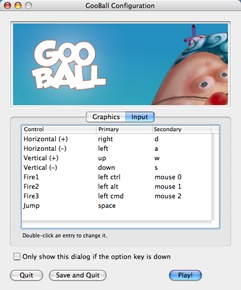
You can setup joysticks, joypads, keyboard and mouse buttons and access them all through one simple scripting interface.
From scripts all virtual axes are accessed by their name.
Every project has the following default input axes. "Horizontal" and "Vertical" are mapped to w, a, s, d and the arrow keys. "Fire1", "Fire2", "Fire3" are mapped to control, alt and cmd. "Mouse X", "Mouse Y"is mapped to the mouse delta. "Window Shake X" and "Window Shake Y" is mapped to the movement of the window.
If you want to add new virtual axes go to the Edit->Project Settings -> Input menu. Here you can also change the settings of each axis.
You map each Axis either to a Joystick, Mouse or two keyboard buttons.
There are various parameters like gravity and sensitivity which can be used to fine tune the look and feel of input. They are all documented with tooltips.
You can query the current state from a script like this:
value = Input.GetAxis ("Horizontal");
An axis has a value between -1 and 1. The neutral position is 0.
This is the case for joystick input and keyboard input.
However mouse delta and window shake delta is how much the mouse or window moved during the last frame. This means it can be larger than 1 or smaller than -1 when the user moves the mouse quickly.
It is possible to create multiple Axes with the same name. When getting the input axis, the axis with the largest absolute value will be returned. This makes it possible to assign more than one input device to one Axis name. Eg. Create one axis for keyboard input and one axis for joystick input with the same name. If the user is using the joystick, input will come from the joystick otherwise the keyboard. This way you don't have to think at all about from where the input comes when writing scripts.
To map a key to an axis you have to enter the key's name in the "Positive Button" or "Negative Button" property in the inspector.
The names of keys follow this convention:
The names used to identify the keys are the same in the scripting interface and the inspector.
value = Input.GetKey ("a");
Transforms are a key Component in every Game Object. They dictate where the Game Object is positioned, how it is rotated, and its scale. It is impossible to have a Game Object without a Transform. You can adjust the Transform of any Game Object from the Scene View, the Inspector, or through Scripting.
The remainder of this page's text is from the Transform Component Reference page.
The Transform component determines the physical location, rotation, and scale of all objects in the scene. Every object has a Transform.

The Transform component of the Game Object is viewable and editable in the Inspector
| Property: | Function: |
|---|---|
| Position of the Transform in X, Y, and Z coordinates | |
| Rotation of the Transform around the X, Y, and Z axes, measured in degrees | |
| Scale of the Transform along X, Y, and Z axes. Value "1" is the size at which the object was imported. |
Transforms are always manipulated in 3-D space using X, Y, and Z axes. In Unity, these axes are represented by the colors red, green, and blue respectively.
Color-coded relationship between 3 axes and Transform properties
Transform components can be directly manpulated using the Scene view or the Inspector. The Inspector will list the properties stated above for easy editing.

Translation along the X axis (Left/Right)

Translation along the Y axis (Up/Down)

Translation along the Z axis (Forward/Backward)
You can also modify Transforms in your Scene by interacting with them, using the Move, Rotate, and Scale tools. These tools are located in the upper left-hand corner of the Unity UI.

The View, Translate, Rotate, and Scale tools
The tools will be usable on any object in your scene. Click on the object, and you will see the tool gizmo appear around it. Depending on the current tool, the gizmo will look slightly different. Clicking the object will also cause the Transform component to become visible in the Inspector. If the Inspector does not display the Transform component or its properties, then you do not have an object highlighted in the scene view.

Different Gizmos for the 3 tools can be directly edited in Scene view
To manipulate the Transform, click and drag on one of the 3 gizmo axes, you'll notice its color changes to yellow. As you drag the mouse, you will see the object translate, rotate, or scale along the axis. When you release the mouse button, you'll notice that the axis remains yellow. You can click the middle mouse button and drag the mouse to manipulate the Transform around the yellow axis. To access all 3 axes at once click and drag the center point of all 3 gizmos.

Any individual axis will change yellow when you click on it
Parenting is one of the most important concepts to understand when using Unity. It is a method of attaching two or more objects together, creating a "Parent" and a "Child" or "Children" Each object can have multiple children, but only one parent.
The principle behind parenting is simple; you can attach objects to each other - just like your arms are attached to your body. When you turn your body, your arms move. An object can only have one parent (just like each of your arms can only be attached to one body), but each object can have many children (your body does have two arms, after all).
Example of the Parenting concept
In the above example, we say that the arms are parented to the body, and the hands are parented to the arms. The scenes you make in Unity will contain collections of these Transform hierarchies. The topmost parent object is called the Root object. When you move, scale, or rotate a parent, all the changes in its Transform are applied to its children as well.
You can build compound objects by parenting multiple separate objects together, like the skeletal structure of a human ragdoll. You can also create small yet effective objects with single parents. For example, if you have a horror game that takes place at night, you can create an effective atmosphere with a flashlight. To create this object, you would parent a spotlight Transform to the flashlight Transform. Then, any alteration of the flashlight Transform will affect the spotlight, creating a convincing flashlight effect.
Creating and removing parents is performed in the Hierarchy window. The hierarchy window will display all the objects currently in your scene. To create a parent, drag the desired child object over the desired parent object in your Hierarchy, and release. You have then parented your child to its new parent. To remove the child from its parent, click and drag the child object outside of the parent object.
The scale of the Transform determines the difference between the size of your mesh in your modeling application, and the size of your mesh in Unity. The mesh's size in Unity (and therefore the Transform's scale) is very important, especially during physics simulation. There are 3 factors that can determine the scale of your object:
Ideally, you should not adjust the scale of your object in the Transform component. The best option is to create your models at real-life scale, so you won't have to change your Transform's scale. The second-best option is to adjust the scale at which your mesh is imported in the Import Settings for your individual mesh. Certain optimizations occur based on the import size, and instantiating an object that has an adjusted scale value can decrease performance. For more information, read through the Rigidbody component's section on optimizing scale.
Unity has the next-generation Ageia PhysX physics engine built-in. This allows for unique emergent behaviour and is generally very cool.
To put an object under physics control, simply add a Rigidbody to it. When you do this, the object will be affected by gravity, and can collide with other objects in the world.
You use rigidbodies for things that the player can push around. Eg. crates or loose objects. You can also add joints to rigidbodies to make the behaviour more complex. For example to make a physical door or a crane with a swinging chain.
You also use rigidbodies to make vehicles, for example you can make cars using a rigidbody, 4 wheel colliders and a script applying wheel forces based on the user's input.
You can make airplanes by applying forces to the rigidbody from a script. Or you can create special vehicles or robots by adding various joints and applying forces from scripts.
Rigidbodies are usually used in combination with primitive colliders.
Kinematic rigidbodies are not affected by forces, gravity or collisions. They are driven explicitly by setting the position and rotation of the transform or animating them. They are used to interact with other non-kinematic rigidbodies.
They are used for three purposes:
Static colliders are used for level geometry which does not move around much. You add a mesh collider to your already existing graphical meshes. (Even better use the Import Settings Meshes Have Colliders check box) You can of course move around static colliders but if you move them around a lot you might want to add a kinematic rigidbody. There are two reasons why you want to make a static collider into a kinematic rigidbody instead:
You use character controllers if you want to make a humanoid character. This could be the main character in a third person platformer, FPS shooter or any enemy characters.
These controllers don't follow the rules of physics since it will not feel right. (In Doom you run 90 miles per hour, come to halt in one frame and turn on a dime). Instead a character controller performs collision detection to make sure your characters can slide along wall, walk stairs.
Character Controllers are not be affected by forces but they can push rigidbodies by applying forces to them from a script. Usually all humanoid characters are implemented using Character Controllers.
Character controllers are inherently unphysical, thus if you want to apply real physics - Swing on ropes, get pushed by big rocks - to your character you have to use a rigidbody, this will let you use joints and forces on your character. But be aware that tuning a rigidbody to feel right for a character is hard due to the unphysical way in which game characters are expected to move.
Rigidbodies are the gateway for applying physics to your objects. The Rigidbody can receive forces and torque to make your objects move in a realistic way. Any GameObject must contain a Rigidbody to be influenced by gravity, act under added forces via scripting, or interact with other objects through the Ageia physX physics engine.
A GameObject with a Rigidbody component attached
| Property: | Function: |
|---|---|
| The weight of the object in kilogram. For stable simulation it is recommended to make masses not more or less than 100 times that of other rigid bodies. | |
| How much air resistance affects the object when moving from forces. 0 means no air resistance, and infinity makes the object stop moving immediately. | |
| How much air resistance affects the object when rotating from torque. 0 means no air resistance, and infinity makes the object stop rotating immediately. | |
| If checked, the object is affected by gravity. | |
| If checked, the object will not be driven by the physics engine, but can only be manipulated by its Transform. This is useful for moving platforms or if you want to animate a Rigidbody that has a Hinge Joint attached. |
Rigidbodies allow your GameObjects to act under control of the physics engine. This opens the gateway to realistic collisions, varied types of joints, and other very cool behaviors. Manipulating your objects by adding forces to a Rigidbody creates a very different feel and look than adjusting the Transform property directly. Generally, you shouldn't manipulate the Rigidbody and the Transform of the same object — just one or the other.
The biggest difference between manipulating the Transform or the Rigidbody is the use of forces. Rigidbodies can receive forces and torque, but Transforms cannot. Transforms can be translated and rotated, but this is not the same as using physics. You'll notice the distinct difference when adding you try it for yourself. Adding forces/torque to the Rigidbody will actually change the object's position and rotation of the Transform component. This is why you should only be using one or the other. Changing the Transform while using physics could cause problems with collisions and other calculations.
Rigidbodies must be explicitly added to your game object before they will be affected by the physics engine. You can add a Rigidbody to your selected object from Components->Dynamics->Rigidbody. Now your object is physics-ready; it will fall under gravity and can receive forces via scripting, but you may want to add a Collider or a Joint to get it to behave exactly how you want.
When an object is under physics control, it moves semi-independently of the way its transform parents move. If you move any parents, they will pull the Rigidbody child along with them. However, the Rigidbodies will still fall down due to gravity and react to collision detection.
To control your Rigidbodies, you will primarily use scripts to add forces or torque. You do this by calling AddForce and AddTorque on the object's Rigidbody. Remember that you shouldn't be directly altering the object's Transform when you are using physics.
For some situations, mainly creating ragdoll effects, it is neccessary to switch control of the object between animations and physics. For this purpose Rigidbodies can be marked Kinematic. While the Rigidbody is marked Kinematic, it will not be affected by collisions, forces, or any other part of the physics engine. This means that you will have to control the object by manipulating the Transform component directly. Kinematic Rigidbodies will affect other objects, but they themselves will not be affected by physics. For example, Joints which are attached to Kinematic objects will constrain any other Rigidbodies attached to them and Kinematic Rigidbodies will affect other Rigidbodies through collisions.
Colliders are another kind of component that must be added alongside the Rigidbody in order to allow collisions to occur. If two Rigidbodies bump into each other, the physics engine will not calculate a collision unless both objects also have a Collider attached. Collider-less Rigidbodies will simply pass through each other during physics simulation.

A Rigidbody with a Collider component attached
Add a collider with the Component -> Dynamics menu. View the Component page of any individual Collider for more specific information:
Compound Colliders are combinations of primitive Colliders, all together acting as a single Collider. They come in handy when you have a complex mesh to use in collisions, but cannot use a Mesh Collider. To create a Compound Collider, create child objects of your colliding object, then add a primitive Collider to each child object. This allows you to position, rotate, and scale each Collider easily and independently of each other.
A GameObject with a Rigidbody and multiple colliders attached
In the above picture, the terrain has a Mesh Collider attached. Mesh Colliders work the best for terrain or environments made from irregular shapes. The Rigidbody has 3 child Colliders attached: capsule, cube and sphere. When Play mode begins, the Rigidbody falls due to gravity, and the 3 child Colliders fall with it. The 3 Collision primitives collide with the Mesh Collider, and the Rigidbody eventually balances and comes to rest on the 3 Colliders.
Keep in mind, Mesh Colliders can't collide with each other, so the typical solution is to use primitive Colliders for any objects that move, and Mesh Colliders for static background objects.
The size value of the your object's mesh is much more important than the mass of the Rigidbody. If you find that your Rigidbody is not behaving exactly how you expect; it moves slowly, 'floats', or doesn't collide correctly; consider adjusting the scale of your mesh and/or the Rigidbody's Transform. Unity's default unit scale is 1 unit = 1 meter, so the scale of your imported mesh is maintained, and applied to physics calculations. For example, a crumbling skyscraper is going to fall apart very differently than a tower made of toy blocks, so objects of different sizes should be modeled to accurate scale.
If you are modelling a human make sure he is around 2 meters big in Unity. To check if your object has the right size compare it to the default cube. You can create a cube using GameObject->Create Other->Cube. The cube will be exactly 1 meter large. So your human should be twice as tall.
If you aren't able to adjust the mesh itself, you can change the global scale of each particular mesh by control-clicking on your imported mesh and selecting 'Import Settings' from the context menu. Here, you can change the scale and re-import your mesh.
If your game requires that your GameObject needs to be instantiated at different scales, it is perfectly okay to directly adjust the values of your Transform's scale. The down-side is that the physics simulation must do more work at the time the object is instantiated, and could cause a performance drop in your game. This isn't a terrible loss, but it is not as efficient as finalizing your scale with the other two options.
The Constant Force component is a quick utility for adding constant forces to a rigidbody. This works great for one shot objects like rockets, if you don't want it to start with a large velocity but instead accelerate.

A rocket propelled forward by the constant force component
| Property: | Function: |
|---|---|
| The vector of a force to be applied in world space. | |
| The vector of a force to be applied in the objects local space. | |
| The vector of a torque, applied in world space. The object will begin spinning around this vector. The longer the vector is, the faster the rotation. | |
| The vector of a torque, applied in local space. The object will begin spinning around this vector. The longer the vector is, the faster the rotation. |
To make a rocket that accelerates forward set the relative force to be along the positive z-axis. Then use the rigidbody's drag property to make it not exceed a some maximum velocity. (The higher the drag the lower the maximum velocity will be.) In the rigidbody also make sure to turn off gravity so that the rocket will always stay on it's path.
The Sphere Collider is a basic sphere-shaped collision primitive.
(Image of a Sphere Collider in Inspector)
| Property: | Function: |
|---|---|
| Reference to the PhysicMaterial that determines how this Collider interacts with others. | |
| If enabled, this Collider is used for triggering events, and is ignored by the physics engine. | |
| The size of the collider. | |
| The position of the collider in the object's local space. |
The Sphere Collider can be resized to uniform scale, but not along individual axes. It works great for falling boulders, ping pong balls, marbles, etc.
A standard Sphere Collider
Colliders work with Rigidbodies to bring physics in Unity to life. Whereas Rigidbodies allow objects to be controlled by physics, Colliders allow objects to collide with each other. Colliders must be added to objects independently of Rigidbodies. A Collider does not necessarily need a Rigidbody attached, but a Rigidbody must be attached in order for the object to react to collisions.
When a collision between two Colliders occurs and if at least one of them has a Rigidbody attached, three collision messages are sent out to the objects attached to them. These events can be handled in scripting, and allow you to create unique behaviors with or without making use of the built-in Ageia physX engine.
An alternative way of using Colliders is to mark them as a Trigger, just check the IsTrigger property checkbox in the Inspector. Triggers are effectively ignored by the physics engine, and have a unique set of three trigger messages that are sent out when a collision with a Trigger occurs. Triggers are useful for triggering other events in your game, like cutscenes, automatic door opening, displaying tutorial messages, etc. Use your imagination!
Be aware that in order for two Triggers to send out trigger events when they collide, one of them must be attached to a Rigidbody. For a Trigger to collide with a normal Collider, one of them must have a Rigidbody attached. For a detailed chart of different types of collisions, see the collision action matrix in the Advanced section below.
Friction, bouncyness and softness is defined in the physic material. The Standard Assets contain the most common physic materials. To use one of them click on the material popup and select eg. Ice. You can also create your own physic materials and tweak all friction values.
Compound Colliders are combinations of primitive Colliders, all together acting as a single Collider. They come in handy when you have a complex mesh to use in collisions, but cannot use a Mesh Collider. To create a Compound Collider, create child objects of your colliding object, then add a primitive Collider to each child object. This allows you to position, rotate, and scale each Collider easily and independently of each other.
A GameObject with a Rigidbody and multiple colliders attached
In the above picture, the terrain has a Mesh Collider attached. Mesh Colliders work the best for terrain or environments made from irregular shapes. The Rigidbody has 3 child Colliders attached: capsule, cube and sphere. When Play mode begins, the Rigidbody falls due to gravity, and the 3 child Colliders fall with it. The 3 Collision primitives collide with the Mesh Collider, and the Rigidbody eventually balances and comes to rest on the 3 Colliders.
Keep in mind, Mesh Colliders can't collide with each other, so the typical solution is to use primitive Colliders for any objects that move, and Mesh Colliders for static background objects.
The Box Collider is a basic cube-shaped collision primitive.

Box collider here is used to approximate car's hull
| Property: | Function: |
|---|---|
| The size of the collider in the X, Y, Z directions. | |
| The position of the collider in the object's local space. |
The Box Collider can be resized into different shapes of rectangular prisms. It works great for doors, walls, platforms, etc. It is also effective as a human torso in a ragdoll or car hull in a vehicle. Of course, it works perfectly for just boxes and crates as well!
A standard Box Collider
The Mesh Collider takes a Mesh Asset and builds its Collider based on that mesh. It is far more accurate for collision detection than using primitives for complicated meshes, but it cannot collide with other Mesh Colliders.

A Mesh Collider used on the flag tower object
| Property: | Function: |
|---|---|
| Reference to the Mesh to use for collisions. | |
| When this is enabled, collision mesh normals are smoothed. You should enable this on smooth surfaces eg. rolling terrain without hard edges to make sphere rolling smoother. |
The Mesh Collider builds its collision representation from the Mesh attached to the GameObject, and reads the properties of the attached Transform to set its position and scale correctly.
Collision meshes use backface culling. If an object collides with a mesh that will be back face culled graphically it will also not collide with it physically.
The physic material is used to adjust friction and bouncing effects of colliding objects.
To create a physic material select the menu Assets -> Create -> Physic Material. Then drag the physic material from the project pane on a collider in the scene.

The Physic Material
| Property: | Function: |
|---|---|
| The friction used when an object is lying on a surface. Usually a value from 0 to 1. A value of zero feels like ice, a value of 1 will make it very hard to get the object moving. | |
| The friction used when already moving. Usually a value from 0 to 1. A value of zero feels like ice, a value of 1 will make it come to rest very quickly unless a lot of force / gravity pushes the object. | |
| How bouncy is the surface? A value of 0 will not bounce. A value of 1 will bounce without any loss of energy. | |
| How the friction of two colliding objects is combined. | |
| The two friction values are averaged. | |
| The smallest of the two values is used. | |
| The largest of the two values is used. | |
| The friction values are multiplied with each other. | |
| How the bouncyness of two colliding objects is combined. | |
| The two values are averaged. | |
| The smallest of the two values is used. | |
| The largest of the two values is used. | |
| The values are multiplied with each other. | |
| The direction of anisotropy. Anisotropic friction is enabled if the vector3 is not zero. Dynamic Friction 2 and Static Friction 2 will be applied along Friction Direction 2. | |
| If anisotropic friction is enabled, dynamicFriction2 will be applied along Friction Direction 2. | |
| If anisotropic friction is enabled, staticFriction2 will be applied along Friction Direction 2. | |
| If anisotropic friction is enabled, staticFriction2 will be applied along Friction Direction 2. | |
| If use Spring is checked, surface will be springy. | |
| The spring of the surface | |
| The spring coefficient. A high value will pull the surfaces towards the rest position faster. | |
| The damper coefficient. A high value will dampen the relative movement of the two surfaces. | |
| The rest position of the spring. |
Friction is the quantity which prevents surfaces from sliding off each other. This value is critical when trying to stack objects. Friction comes in two forms, dynamic and static. Static friction is used when the object is lying still. It will prevent the object from starting to move. If a large enough force is applied to the object it will start moving. At this point dynamic friction will come into play. Dynamic friction will now attempt to slow down the object while in contact with another.
The Hinge Joint groups together 2 Rigidbodies, constraining them to move like they are connected by a hinge. It is perfect for doors, but can also be used to model chains, pendulums, etc.

The Hinge Joint
| Property: | Function: |
|---|---|
| Optional reference to the Rigidbody that the joint is dependent upon. If not set, the joint connects to the world. | |
| The Position of the anchor around which the body swings. The Position is defined in local space. | |
| The Direction of the axis around which the body swings. The Axis is defined in local space. | |
| Spring makes the rigid body reach for a specific angle compared to its connected body. | |
| The force the object asserts to move into the position. | |
| the higher this value, the more the object will slow down. | |
| Target angle of the spring. The spring pulls towards this angle measured in degrees. | |
| The motor makes the object spin around. | |
| The speed the object tries to attain. | |
| The force applied in order to attain the speed. | |
| If enabled, the motor is never used to brake the spinning, only accelerate it. | |
| If enabled, the angle of the hinge will be restricted within the Min & Max values. | |
| The lowest angle the rotation can go. | |
| The highest angle the rotation can go. | |
| How much the object bounces when it hits the minimum stop. | |
| How much the object bounces when it hits the maximum stop. | |
| The force that needs to be applied for this joint to break. | |
| The torque that needs to be applied for this joint to break. |
A single Hinge Joint should be applied to an object per desired hinge. The hinge will rotate at the point specified by the Anchor property, moving around the specified Axis property. You DO NOT need to assign a Game Object to the joint's Connected Body property. You should only assign a Game Object to the Connected Body property if you want the joint's Transform to be dependent on the attached object's Transform.
Think about how the hinge of a door works. The Axis in this case is up, positive along the Y axis. The Anchor is placed somewhere at the intersection between door and wall. You would not need to assign the wall to the Connected Body, because the joint will be connected to the world by default.

A practical Hinge Joint with no Connected Body
Now think about a doggy door hinge. The doggy door's Axis would be sideways, positive along the relative X axis. The main door should be assigned as the Connected Body, so the doggy door's hinge is dependent on the main door's Transform.
A practical Hinge Joint with a proper Connected Body
Multiple Hinge Joints can also be strung together to create a chain. Add a joint to each link in the chain, and attach the next link as a Connected Body. The result should be similar to the following picture.

A Nunchaku made exclusively with primitives and Hinge Joints
Hinge Joints can be implemented as axles on vehicles, as seen here in Forest Johnson's racing game. However, it's often better just to use a Wheel Collider for vehicles.
Animations are best imported from art programs but can also be created inside Unity.
To import an animation from your art package just drop in your model files.
When you place your model file in unity's project folder it will automatically appear in the project view and you can drag it to the scene. The animation on all objects in the scene is imported automatically and you wil see the animation playing when you hit play.
For more information about animating characters or importing animations see the Character Animation section.
1. Switch to the animation layout. This will display the Timeline View. In the Timeline you will create and modify animations.
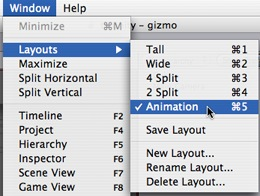
2. Select the object you want to animate in the scene view.
3. Click on the record button in the animation Timeline
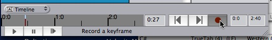
4. Select another time in the Timeline by clicking on it. Then move the object some where else and hit record again.
If you hit Play now, your object will follow the animation you just created.
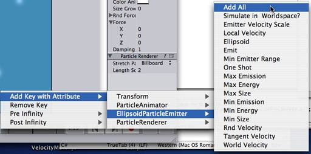
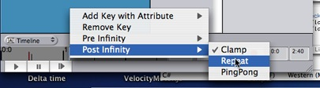
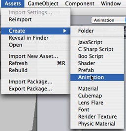
Then drag the animation clip on an object. Then you animate the object. Then you can drag the animation clip on other objects.
Unity's Animation System allows you to create beautifully animated skinned characters. The Animation System supports animation blending, mixing, additive animations, walk cycle time synchronization, animation layers, control over all aspects of the animation playback (time, speed, blend-weights), mesh skinning with 1, 2 or 4 bones per vertex and finally physically based ragdolls.
Making an animated character involves two things; moving them through the world and animating them accordingly.
This page focuses on the animation. If you want to learn more about moving characters around (for a Super Mario Bros style game or a first-person shooter), go here.
You can download an example project showing pre-setup animated characters here.
First of all we have to import the character. Unity natively imports Maya (.mb/.ma) files, Cinema 4D (.c4d) files, and fbx files which can be exported from most animation packages. Click here to learn how to export from your modelling/animation package.
The most convenient way for animators to work is to have a single model containing all animations. When importing the animated model, you can define which frames make up each part of the animation. Unity will automatically split the animation into the individual parts, called Animation Clips.
For example:
To import the animations you simply place the model in your project folder. Unity will now automatically import it. Now highlight it in the project view and choose Assets -> Import Settings... from the main menu.
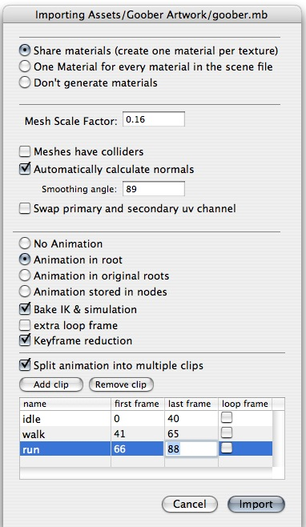
The Import Settings Dialog for a mesh
In the Import Settings' Split Animations table you tell Unity which frames in your 3D file make up which Animation Clip. The names you specify here are used to activate them in your game.
| Property: | Function: |
|---|---|
| Defines the Animation Clip's name within Unity. | |
| the first frame of the animation. The frame number refers to the same frame as in the 3D program used to create the animation. | |
| The last frame of the animation. | |
| If enabled, an extra loop frame is inserted at the end of the animation. This frame matches the first frame in the clip. Use this if you want to make a looping animation and your artwork has not been created in such a way that the first and last frame of the animation match up exactly. |
The other way to import animations is to follow the @ animation naming scheme. You create seperate model files and name them like: 'model name'@'animation name'.fbx

An example of 4 animation files for an animated character
Unity automatically imports all 4 files and collects all animations to the file without the @ sign in. In the example above, the goober.mb file will be setup to reference idle, jump, and walk automatically.
When importing animated Characters from Maya that are created using IK, you have to check the Bake IK & simulation box in the import settings. Otherwise, your Character will not animate correctly.
When you have imported your model you drag the object from the Project view into the Scene view or Hierarchy.
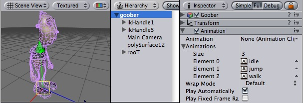
The animated character is added by dragging it into the scene
The character above has 3 animations in the animation list and no default animation. You can add more animations to the character by dragging animation clips from the Project View on to the character (in either the Hierarchy View or a Scene View). This will also set the default animation. When you hit play the default animation will be played.
TIP: you can use this to quickly test if your animation plays back correctly. Also use the Wrap Mode to view different behaviors of the animation- especially looping.
The actual animation of characters is done through Unity's scripting interface.
In today's games, animation blending is an essential feature to ensure that characters have smooth animations. Animators create separate animations, e.g. a walk cycle, run cycle, idle animation or shoot animation. At any point in time in your game you need to be able to transition from the idle animation into the walk cycle and vice versa. Of course you don't want any sudden jumps in the motion. You want the animation to smoothly transition.
This is where animation blending comes in. In Unity you can have an arbitrary amount of animations playing on the same character. All animations are blended or added together to generate the final animation.
Our first step will be to make a character smoothly blend between the idle and walk animations. In order to make our job simpler when scripting, we will first set the Wrap Mode of the animation to Loop. Then we will turn off Play Automatically to make sure our script is the only one playing animations.
Our first script for animating the character is quite simple; we only need some way to detect how fast our character is moving, and then fade between walk and idle animation. For this simple test we use the pre-setup input axes.
function Update ()
{
if (Input.GetAxis("Vertical") > 0.2)
animation.CrossFade ("walk");
else
animation.CrossFade ("idle");
}
To get this script running:
When you hit the play button, The character will start walking in place when you hold the up arrow key and return to the idle pose when you release it.
Layers are an incredibly useful concept that allow you to group animations and prioritize weighting.
in Unity's animation system, you can blend between as many animation clips as you want. You can assign blend weights manually or simply use animation.CrossFade, which will animate the weight automatically.
Let's say you have a walk cycle and a run cycle, both have a weight of 1 (100%). When Unity generates the final animation it will normalize the weights, which means walk will contribute 50% to the animation, the run cycle will also contribute 50%.
This is all very nice, but often you want to prioritize which animation receives most weight when there are two animations playing. Surely you could just make sure that the weight sums up to 100% manually, but it is a lot easier to use layers for this purpose.
For example you might have a shoot animation, an idle and a walk cycle. You will want to continously fade between the walk and idle animation based on the player's speed. But when the player shoots you want to only show the shoot animation. Thus the shoot animation essentially has a higher priority.
The easiest way to do this is to simply keep playing the walk and idle animations while shooting. Then we need to make sure that the shoot animation is in a higher layer than idle and walk. This means the shoot animation will receive blend weights first. The walk and idle animation will receive weights only if the shoot animation doesn't use all of the 100% blend weights. So when CrossFading the shoot animation in, the weight will start out at zero and over a short period become 100%. In the beginning the walk and idle layer will still receive blend weights but when the shoot animation is completely faded in, they will receive no weights at all. This is exactly what we need!
function Start ()
{
// Set all animations to loop
animation.wrapMode = WrapMode.Loop;
// except shooting
animation["shoot"].wrapMode = WrapMode.Once;
// Put idle and walk into lower layers (The default layer is always 0)
// This will do two things
// - Since shoot and idle/walk are in different layers they will not affect
// each other's playback when calling CrossFade.
// - Since shoot is in a higher layer, the animation will replace idle/walk
// animations when faded in.
animation["shoot"].layer = 1;
// Stop animations that are already playing
//(In case user forgot to disable play automatically)
animation.Stop();
}
function Update () {
// Based on the key that is pressed,
// play the walk animation or the idle animation
if (Mathf.Abs(Input.GetAxis("Vertical")) > 0.1)
animation.CrossFade("walk");
else
animation.CrossFade("idle");
// Shoot
if (Input.GetButtonDown ("Fire1"))
animation.CrossFade("shoot");
}
By default the animation.Play or animation.CrossFade function will stop or fade out animations that are in the same layer. This is exactly what we want in mose cases. In our shoot, idle, run example. Playing idle and run will not affect the shoot animation and vice versa. (You can change this behaviour with an optional parameter to animation.CrossFade if you like)
Additive Animations and Animation mixing allow you to cut down on the number of animations you have to create for your game, and are important to creating facial animation.
Let's say you want to create a character that leans to the sides when running and turning.
You already made a walk and run cycle, now you could make a walk-lean-left, walk-lean-right, run-lean-left, run-lean-right animation.
But that means you just doubled the amount of animation work! Creating a huge amount of animations is not feasiable. Additive animations and Mixing to the rescue!
Additive animations allow you to overlay the effects of animation on top of any others that may be playing. When making additive animations, Unity will calculate the difference between the first frame in the animation clip and the current frame. Then it will apply this difference on top of all other playing animations.
Now you only have to make a lean-left and lean-right animation. Unity will then layer this animation on top of the walk, idle or run cycle.
Here is the code to make that happen:
private var leanLeft : AnimationState;
private var leanRight : AnimationState;
function Start ()
{
leanLeft = animation["leanLeft"];
leanRight = animation["leanRight"];
// Put the leaning animation in a seperate layer
// So that other calls to CrossFade won't affect it.
leanLeft.layer = 10;
leanRight.layer = 10;
// Set the lean animation to be additive
leanLeft.blendMode = AnimationBlendMode.Additive;
leanRight.blendMode = AnimationBlendMode.Additive;
// Set the lean animation ClampForever
// With ClampForever animation's will not automatically
// stop when reaching the end of the clip
leanLeft.wrapMode = WrapMode.ClampForever;
leanRight.wrapMode = WrapMode.ClampForever;
// Enable the animation and fade it in completely
// We don't use animation.Play here because we manually adjust the time
// in the Update function.
// Instead we just enable the animation and set it to full weight
leanRight.enabled = true;
leanLeft.enabled = true;
leanRight.weight = 1.0;
leanLeft.weight = 1.0;
// For testing just play run animation and loop it
animation["walk"].wrapMode = WrapMode.Loop;
animation.Play("walk");
}
// Every frame just set the normalized time
// based on how much lean we want to apply
function Update ()
{
var lean = Input.GetAxis("Horizontal");
// normalizedTime is 0 at the first frame and 1 at the last frame in the clip
leanLeft.normalizedTime = -lean;
leanRight.normalizedTime = lean;
}
Tip: When using Additive animations it critical that you are also playing some other non-additive animation on every transform that is also used int eh additive animation, otherwise the animations will add on top of the last frame's result. This is most certainly not what you want.
You have learned how to make a basic character animation please see the projects for in-depth examples of character animation and the animation script interface.
Unity uses OpenAL to implement immersive 3D audio. Adding sound to a game is one of the final touches that make a game feel like a complete product. Using 3D positioned audio effects and well chosen music creatively can even add to the game play and greatly affect the mood of the final product.
In short, adding sounds to a game consists of adding sound assets to the project, attaching an Audio Listener to the main camera object and attaching Audio Sources to game objects.
Audio is triggered from scripting. See the documentation on the AudioListener, AudioSource and the AudioClip classes in the Script Reference for more information on scripting audio.
The Audio Listener acts as a microphone-like device. It receives input from any given Audio Source in the scene and plays sounds through the computer speakers. It is traditionally attached to the main Camera.

The Audio Listener, attached to the Main Camera
The Audio Listener has no properties. It simply must be added to work.
The Audio Listener works in conjunction with Audio Sources, allowing you to create the aural experience of your games. When the Audio Listener is attached to an object in your scene, any Sources that are close enough to the Listener will be picked up and played through the player's computer speakers. Each scene can only have 1 Audio Listener to work properly.
As long as the Sources are in mono format, the Listener will automatically position the sound in the correct speaker, at the correct volume. Stereo Sources will automatically play in both speakers. For example, if your character walks off a street into a night club, the night club's music should probably be stereo, while the individual voices of characters in the club should be mono.
You should attach the Audio Listener to either the main camera or to the game object that represents the player. Try both to find what suits your game best.
The Audio Source takes an Audio Clip and plays it from a position in the world.
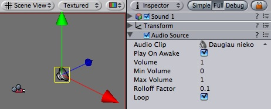
The Audio Source in the scene view and Inspector
| Property: | Function: |
|---|---|
| Reference to the sound clip file that will be played | |
| If enabled, the sound will start playing the moment the scene launches. If disabled, you need to start it using the Play() command from scripting. | |
| How loud the sound is at 1 world unit's (1 meter) distance from Audio Listener. | |
| The minimum value of the sound. No matter how far away you get, the sound will get softer. | |
| How loud the sound gets at the loudest. No matter how close you get, the sound will never get louder. | |
| How fast the sound fades. the higher the value, the shorter the range the Listener can hear the sound. | |
| Enable this to make the Audio Clip loop when it finishes playing. |
Audio Clips are used by Audio Sources to represent the audio asset imported into Unity.

The Audio Clip
Audio Clips just work. The only thing you should have to do with them is reference them from within Audio Sources.
Sound assets only have 3 read-only properties.
| Property: | Function: |
|---|---|
The format the sound is stored in. Unity supports 4 raw formats and one compressed.
| |
| The duration of the sound file in seconds. | |
| The sampling frequency of the file. |
Unity currently supports the following file formats:
Stereo sounds are always played as is. They are not faded out over distance and they do not have panning. This makes them optimal for music and ambient sources.
Mono sounds always fade out over distance and do panning. This is good for all effects requiring 3D positional sound.
For music you should always use the ogg vorbis format. The frequency should be 44khz and it should be stereo. (44 khz is recommended since playback will be faster than with 22khz)
Short audio clips (eg. foot steps, bullet explosion) you should use AIFF or WAV with mono and either 22khz or 11khz. Usually you should not use 44khz since that takes up too much disk space and the quality difference is not hearable.
Long audio clips should use ogg vorbis and mono. A good rule of thumb is that if a sound file is more than 200k uncompressed, then it makes sense to use ogg vorbis and stream the sound instead (when using ogg vorbis, always choose 44khz).
Unity has functionality for making in-game Head-Up-Displays and 2D menus, using the GUI Texture and GUI Text components. A complete GUI is made up from several GUI components.
To create a GUI, you must first attach a GUI Layer component to the main camera. Then add GUI Texture and GUI Text objects to the scene. The x and y components of the GUI objects' position determine the position on the screen with (0,0) being the bottom left and (1,1) the top right corner of the screen.
GUI Textures are displayed as flat images in 2D. They are made especially for User Interface elements, buttons, or decorations. Their positioning and scaling is performed along the x and y axes only, and they are measured in Screen Coordinates, rather than World Coordinates.

The GUI Texture
| Property: | Function: |
|---|---|
| Reference to the Texture2D that will be used as the texture's display. | |
| Value that will tint the Texture drawn on screen. | |
| Used for pixel-level control of the scaling and positioning of the GUI Texture. All values are measured relative to the position of the GUI Texture's Transform. | |
| Left-most pixel position of the texture. | |
| Bottom-most pixel position of the texture. | |
| Right-most pixel position of the texture. | |
| Top-most pixel position of the texture. | |
| Number of pixels from the left that are not affected by scale. | |
| Number of pixels from the right that are not affected by scale. | |
| Number of pixels from the top that are not affected by scale. | |
| Number of pixels from the bottom that are not affected by scale. |
To create a gui texture
GUI Textures are perfect for presenting game interface backgrounds, buttons, or other elements to the player. Through scripting, you can easily provide visual feedback for different "states" of the texture — when the mouse is hovering over the texture, or is actively clicking it for example. Here is the basic breakdown of how the GUI Texture is calculated:

Here's a real-world example of GUI Texture at work from Unity forum member Bampf's game Pawns.

The number of pixels that will not scale with the texture at each edge of the image. As you rarely know the resolution your game runs in, chances are your GUI will get scaled. Some GUI textures have a border at the edge that is meant to be an exact number of pixels. In order for this to work, set the border sizes to match those from the texture.
The purpose of the Pixel Inset is to prevent textures from scaling with screen resolution, and keeping thim in a fixed pixel size. This allows you to render a texture without any scaling. This means that players who run your game in higher resolutions will see your textures in smaller areas of the screen, allowing them to have more screen real-estate for your gameplay graphics.
To use it effectively, you need to set the scale of the GUI Texture's Transform to 0, 0, 0. Now, the Pixel Inset is in full control of the texture's size and you can set the Pixel Inset values to be the exact pixel size of your texture.
GUI Text displays text of any font you import in screen coordinates.

The GUI Text
| Property: | Function: |
|---|---|
| The string of text to display. | |
| Which point of the text shares the position of the Transform. | |
| How multiple lines are aligned within the GUIText. | |
| How much space will be in-between lines of text. | |
| How much space will be inserted for a tab '\t' character. As a multiplum of the space character offset. | |
| The font to use when rendering the text. | |
| Reference to the Material containing the characters to be drawn. If set, this property overrides the one in the Font asset. | |
| If enabled, all text characters will be drawn in the size of the imported font texture. If disabled, the characters will be resized based on the transform's scale. |
GUI Texts are used to print text onto the screen in 2D. The camera has to have a GUI Layer attached in order to render the text. Cameras include a GUI Layer by default, so don't remove it if you want to display a GUI Text. GUI Texts are positioned using only the X and Y axes. Rather than being positioned in World Coordinates, GUI Texts are positioned in Screen Coordinates, where (0,0) is the bottom-left and (1,1) is the top-right corner of the screen
To import a font see the Font class.
By default Fonts are rendered pixel correct. This makes them look crisp and they will stay the same size in pixels independent of the screen resolution.
The following is a list of common tasks in Unity and how to accomplish them.
The following is a list of graphics tasks in Unity and how to accomplish them.
Bump maps are greyscale images that use as a height map on your objects in order to give an appearance of depth. Assuming you have a model that looks like this:
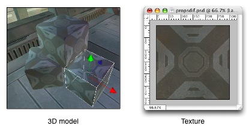
we want to make the light parts of the object stand out.
|
Your object now has a bump map applied:
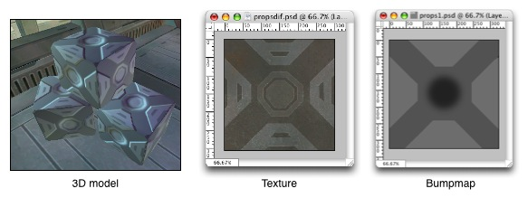
A detail texture is small, fine pattern which is faded in as you approach a surface, for example wood grain, imperfections in stone, or earthly details on a terrain.
Detail textures must tile in all directions. Color values from 0-127 makes the object it's applied to darker, 128 doesn't change anything, and lighter colors makes the object lighter. It's very important that the image is centered around 128 - otherwise the object it's applied to will get lighter or darker as you approach.
|
Cubemaps are used by the Reflective builtin shaders. To build one, you either create six 2D textures and create a new Cubemap asset, or built Cubemap from a single square texture.
More details are in Cubemap Texture documentation page.
A skybox is a 6-sided cube that is drawn behind all graphics in the camera. To create one, do as follows:
|
To Assign the skybox to the scene you're working on, do like this:
|
Mesh Particle Emitters are generally used when you need high control over where to emit particles. For example when you want to do a flaming sword.
|
You should now see particles emitting from the mesh.
Play around with the values in the MeshParticleEmitter.
Especially enable Interpolate Triangles in the Mesh Particle Emitter Inspector and set Min Normal Velocity and Max Normal Velocity to 1.
|
You should now see textured particles emitting from the mesh.
Here's how to do a splash screen or any other type of full-screen image in Unity. This HOWTO takes care to work for multiple different resolutions and aspect ratios.
Unity ships with a few Light Cookies. They can be found in Standard Assets/Light Cookies. Sometimes you want to create your own though.
A light cookie modulates the color of the light with the alpha channel, thus allows you to
An interesting way to add a lot of visual detail to your scenes is to use cookies - greyscale textures you use to control the precise look of in-game lighting. This is fantastic for making moving clouds and giving an impression of dense foilage. The Light page has more info on all this, but the main thing is that for textures to be usable for cookies, the following properties need to be set:
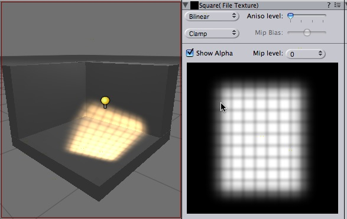
To create a light cookie for a spot light:
Use the following settings:
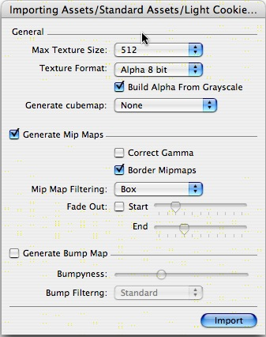
To create a light cookie for a directional light:
Some 3D art packages export their models so that the z-axis faces upwards. Most of the standard scripts in Unity assume that the y-axis is upwards. It is usually easier to fix the rotation in Unity than to modify the scripts to make things fit.
Your model with z-axis point upwards
If at all possible it is recommended that you fix the model in your 3d modeller to have the y-axis face upwards before exporting.
If this is not possible, you can fix it in Unity by adding an extra parent transform:
|
The model with an extra empty transform
Unity includes several water prefabs (including needed shaders, scripts and art assets) among it's standard asset packages. Indie version includes a basic water, while Unity Pro includes a reflective and reflective+refractive water prefabs.
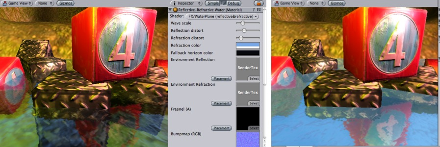
Reflective&Refractive water on the left, Reflective water on the right
In most cases you just drag a prefab into your scene (make sure to have the standard assets installed):
The prefab uses oval-shaped mesh for the water. If you need to use different Mesh the easiest way is just changing it in Mesh Filter of water object:

The simple water in Unity Indie does not require any special setup; the most you can do is tweak values of the material. The rest of this section will describe how to setup reflective and/or refractive water from scratch (without using prefabs described above).
Water needs:
These properties are used in Reflective&Refractive water shader. Most of them are used in other water shaders as well.
| Property: | Function: |
|---|---|
| Scaling of waves bumpmap. The smaller the value, the larger water waves. | |
| how much reflection/refraction is distorted by the waves bumpmap. | |
| additional tint for refraction. | |
| render textures for real-time reflection and refraction. | |
| Defines the shape of the waves. The final waves are produced by combining two these bumpmaps, each scrolling at different direction, scale and speed. The second bumpmap is twice smaller than the first one. | |
| Scrolling speed for first bumpmap (1st and 2nd numbers) and the second bumpmap (3rd and 4th numbers). | |
| A texture with alpha channel controlling the Fresnel efffect - how much reflection vs. refraction is visible, based on viewing angle. |
The rest of properties are not used by Reflective&Refractive shader by itself, but need to be set up in case user's video card does not suppor it and must fallback to the simpler shader:
| Property: | Function: |
|---|---|
| A texture that defines water color (RGB) and Fresnel effect (A) based on viewing angle. | |
| The color of the water at horizon. (Used only in the simple water shader) | |
| Texture used to represent the water on really old video cards, if none of better looking shaders can't run on it. |
Unity supports importing from a lot of 3D applications. Choose the one you're working with below:
Unity can read .FBX, .3DS, .dxf and .obj files, so if your program can export to this format you're home free. FBX exporters for popular 3D packages can be found here.
If you make your 3D objects in 3dsMax, you can export them into Unity using the Autodesk .FBX format.
Using default FBX exporter options (that basically export everything) should be ok in all cases.
Default FBX exporter options (for fbx plugin version 2006.08)
Unity natively imports Blender files. To get started, simply place your .blend file in your project's assets folder. When you switch back into Unity, the scene is imported automatically and will show up in the project view.
To see your model in Unity, simply drag it from the project view into the scene view.
If you modify your .blend file, Unity will automatically update whenever you save.
Textures and diffuse color are not assigned automatically but you can easily do this by dragging the texture onto the mesh in the scene view in Unity.
Animation is currently not imported from Blender; this is a limitation of Blender's Collada exporter. As soon as Blender's Collada exporter supports this Unity will be updated to import animations from Blender.
Unity natively imports Cinema 4D files. To get started, simply place your .C4D file in your project's assets folder. When you switch back into Unity, the scene is imported automatically and will show up in the project view.
To see your model in Unity, simply drag it from the project view into the scene view.
If you modify your .c4d file, Unity will automatically update whenever you save.
Unity does not import Point Level Animations (PLA) at the moment. Use Bone based animations instead.
If you are using IK to animate your characters in Cinema 4D, you have to bake the IK before exporting using the Plugins -> Mocca -> Cappucino menu. If you don't bake your IK prior to importing into Unity, you will most likely only get animated locators but no animated bones.
If you don't have Cinema 4D installed on your machine but want to import a Cinema 4D file from another machine, you can export to the fbx format, which Unity imports natively.
When Unity imports a Cinema 4D file it will automatically install a Cinema 4D plugin and launch Cinema 4D in the background. Unity then communicates with Cinema 4D to convert the .C4D file into a format Unity can read. The first time you import a .c4d time and Cinema 4D is not open yet it will take a short while to launch it but afterwards import .c4d files will be very quick.
You can import meshes and animations from Lightwave using the FBX plugin for Lightwave.
Download the latest Lightwave FBX exporter from:
os x lighwave 8.0 plugin
os x lighwave 8.2 plugin
windows lighwave 8.0 plugin
windows lighwave 8.2 plugin
There are three versions of the plugin, one for LightWave 7.5, one for LightWave 8.0 and one for LightWave 8.2. Make sure you have the correct version: the LW7 plugin doesn't work properly with LW8.
The plugin comes in a OS X package. If you double click the package to install it, the installer will try put it in the correct folder. If it can't find your LightWave plugin folder, it will create its own LightWave folder in your Application folder and dump it there. If the latter occurs you should move it to your LightWave plugin folder (or any sub-folder). Once there you have to add the plugin to LightWave via the "Edit Plugins" panel (option-F11) - see the LightWave manual for more details on how to add plugins.

Once added to LightWave the plugin is acessible via the Generics menu (on the Utiliies) tab. If the Generic menu is not present you will have to add it using the Config Menus panel. In the latter panel it can be found in the Plug-ins category and is calld "Generic Plugins". Add it to any convenient menu (see the LightWave manual for more details on how to do this).
More information about installation can also be found in the release notes that can downloaded with the installer.
All objects and animations have to be exported from Layout (there is no Modeler FBX exporter).
 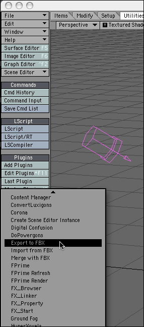
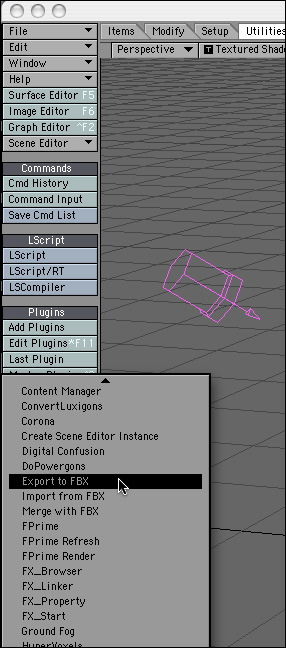

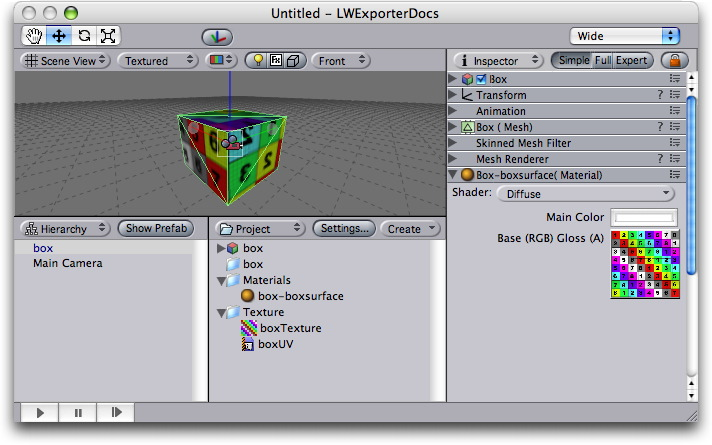
Unity natively imports Maya files. To get started, simply place your .mb or .ma file in your project's assets folder. When you switch back into Unity, the scene is imported automatically and will show up in the project view.
To see your model in Unity, simply drag it from the project view into the scene view.
Unity does not import blend shapes. Use Bone based animations instead. Unity automatically triangulates polygonal meshes when importing. Thus there is no need to do this manually in Maya.
If you are using IK to animate characters you have to select the imported .mb file in project view and choose Assets -> Import Settings.... In the import settings dialog, you have to choose Bake IK & Simulation.
In order to import Maya .mb and .ma files, you need to have Maya installed on the machine you are using Unity to import the .mb/.ma file. Maya 5.0 and up is supported.
If you don't have Maya installed on your machine but want to import a Maya file from another machine, you can export to the fbx format, which Unity imports natively.
When Unity imports a Maya file it will launch Maya in the background. Unity then communicates with Maya to convert the .mb file into a format Unity can read. The first time you import a Maya file in Unity, Maya has to launch in a command line process, this can take around 20 seconds, but the second time importing will be very quick.
Unity imports from Modo through their pipelining features using fbx. In Modo 201, simply save your modo scene as an .fbx file to the project folder. When you switch back into Unity, the scene is imported automatically and will show up in the project view.
To see your model in Unity, simply drag it from the project view into the scene view.
If you modify the .fbx file, Unity will automatically update whenever you save.
Unity natively imports Cheetah3D files. To get started, simply place your .jas file in your project's assets folder. When you switch back into Unity, the scene is imported automatically and will show up in the project view.
To see your model in Unity, simply drag it from the project view into the scene view.
If you modify your .jas file, Unity will automatically update whenever you save.
Unity stores a lot of metadata about your assets - import settings, links to other assets, etc... Here's how to move them between projects, while preserving all this info.
|
Unity ships with Standard Assets and Pro Standard Assets.
Standard Assets contain useful things like a first person controller, some skyboxes, flares, a water plane prefab and common camera scripts.
Pro Standard Assets contain all kinds of Image Effects, like Glow, Motion Blur, Color Correction, Noise and others; as well as several advanced Water prefabs.
When creating a new project Unity automatically installs the Standard Assets and Pro Standard Assets for Pro users.
Sometimes you might want to upgrade your Standard Assets, for example because a new version of Unity ships with new Standard Assets:
Here's how you can make a simple first person walk-through with your own artwork:
Making your game run smoothly is of prime importance to its success. Thankfully Unity is there with you. We have spent a lot of time and energy making it run fast on a wide variety of hardware. Below are some simple guidelines to maximizing the speed of your game.
Todays graphics cards are really good at pushing a lot of polygons but they have quite some overhead for every batch that you submit to the graphics card. So if you have a 100 triangle object it is going to be just as expensive to render as a 1500 poly object. The sweet spot for optimal rendering performance is somewhere around 1500-4000 triangles per mesh.
You only pay rendering cost for objects that have a mesh renderer attached. And you only pay for those that are within the view frustum. There is no attached rendering cost to having a lot of empty game objects in your scene.
It is important to understand that just combining two objects which don't share a material does not give you any performance increase at all. if you want to combine effectively you need to make sure your mesh uses only one material after you have combined it.
There is one thing to be aware of when combining objects though. If you use a lot of small lights in your scene, it might make sense to combine only objects that are close to each other.
The rendering cost for a mesh that has multiple materials is the same as having multiple renderers for each material. The most common reason why you have multiple materials is because two meshes don't share the same textures. So if you want to optimize rendering performance you need to make sure that the objects you combine share textures.
If you want to have the best performance and don't care about bumpmapping or per pixel lighting just go to Edit -> Render Settings ... and set pixel light count to zero. This will simply use vertex lighting for all objects. This means all geometry will be rendered only once every frame. This is an extremely useful LOD setting, so your game can run fine on older graphics cards.
If you use pixel lighting, then we have to render every object as many times as we have pixel lights that affect the object. If you combine two objects that are very far apart, it might increase the size of the object and now you have a lot of lights affecting this big object. If your objects were seperate however, the light wouldn't have to be applied on the part of the mesh which is far away. This can result in rendering the combined mesh as many times as the uncombined mesh thus you didn't save anything.
When rendering a mesh unity finds all lights surrounding the mesh. It then figures out what lights affect the mesh the most. The Edit -> Render Settings are used to modify how many of the lights end up as pixel lights and how many as vertex lights.
Every light calculates it's importance based on how far away it is from the mesh and how intense it is.
Some lights are more important than others depending on the game context. For this every light has a Render Mode setting which can be set to "Force Pixel" or "Force Vertex".
Imagine the player's car with head lights driving through the night. The head light is the most important light in the game. Thus set the head lights Render Mode to "Force Pixel".
If you have a light that isn't very important and also visually doesn't gain much from being a pixel light, set the lights Render Mode to "Force Vertex". This way you don't waste rendering performance without gaining any visual quality.
All rendering in Unity is done with Shaders - small scripts that let you configure the how the OpenGL hardware is set up for rendering. Unity ships with 30+ shaders but you can extend this by making more yourself.
Read on for how!
This tutorial will teach you how you can create your own shaders and make you game look a lot better!
Unity is equipped with a powerful shading and material language called ShaderLab. In style it is similar to CgFX and Direct3D Effects languages - it describes everything needed to display a material, not just plain vertex/pixel shaders.
Shaders describe properties that are exposed in Unity's material inspector and multiple shader implementations (SubShaders) targeted at different graphics hardware capabilities, each describing complete OpenGL rendering state, fixed function pipeline setup or vertex/fragment programs to use. Vertex and fragment programs are written in high-level Cg programming language or low-level shader assembly.
In this tutorial we describe how to write shaders in ShaderLab using both fixed function and programmable pipelines. We assume that the reader has a basic understanding of OpenGL render states, fixed function and programmable pipelines and has some knowledge of Cg programming language. Some shader tutorials can be found on shadertech website.
To create a new shader, either choose Assets->Create->Shader from the main menu, or duplicate an existing shader, and work from that. The new shader can be edited by double-clicking it in the project view.
We'll start with a very basic shader:
Shader "Tutorial/Basic" {
Properties {
_Color ("Main Color", Color) = (1,0.5,0.5,1)
}
SubShader {
Pass {
Material {
Diffuse [_Color]
}
Lighting On
}
}
}
This simple shader demonstrates one of the most basic shaders possible. It defines a color property called "Main Color" and assigns it a default value of rose-like color (red=100% green=50% blue=50% alpha=100%). It then renders the object by invoking a Pass and in that pass setting the diffuse material component to the property _Color and turning on the vertex lighting.
To test this shader, create a new material, select the shader from the drop-down menu (Tutorial->Basic) and assign the material to some object. Tweak the color in the material inspector and watch the changes. Time to move onto more complex things!
If you open an existing complex shader, it can be a bit hard to get a good overview. To get you started, we will dissect the built-in VertexLit shader that ships with Unity. This shader uses OpenGL's fixed function pipeline to do per-vertex lighting.
Shader " VertexLit" {
Properties {
_Color ("Main Color", Color) = (1,1,1,0.5)
_SpecColor ("Spec Color", Color) = (1,1,1,1)
_Emission ("Emmisive Color", Color) = (0,0,0,0)
_Shininess ("Shininess", Range (0.01, 1)) = 0.7
_MainTex ("Base (RGB)", 2D) = "white" { }
}
SubShader {
Pass {
Material {
Diffuse [_Color]
Ambient [_Color]
Shininess [_Shininess]
Specular [_SpecColor]
Emission [_Emission]
}
Lighting On
SeperateSpecular On
SetTexture [_MainTex] {
constantColor [_Color]
Combine texture * primary DOUBLE, texture * constant
}
}
}
}
All shaders start with the keyword Shader followed by a string that represents the name of the shader. This is the name that is shown in the inspector. All code for this shader must be put within the curly braces after it: { } (called a block).
The shader is composed of a Properties block followed by SubShader blocks. Each of these is described in sections below.
At the beginning of the shader block you can define any properties that artists can edit in the material inspector. In the VertexLit example the properties look like this:

The properties are listed on separate lines within the Properties block. Each property starts with the internal name (_Color, _MainTex). After this in parentheses comes the name shown in the inspector and the type of the property. After that, the default value for this property is listed:
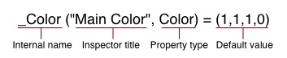
The list of possible types are in the properties reference. The default value depends on the property type. In the example of a color, the default value should be a four component vector.
We now have our properties defined, and are ready to start writing the actual shader.
Before we move on, let's define the basic structure of a shader file.
Different graphic hardware has different capabilities. For example, some graphics cards support fragment programs and others don't; some can lay down four textures per pass while the others can do only two or one; etc. To allow you to make full use of whatever hardware your user has, a shader can contain multiple SubShaders. When Unity renders a shader, it will go over all subshaders and use the first one that the hardware supports.
Shader "Structure Example" {
Properties { /* ...shader properties... }
SubShader {
// ...subshader that uses vertex/fragment programs...
}
SubShader {
// ...subshader that uses four textures per pass...
}
SubShader {
// ...subshader that uses two textures per pass...
}
SubShader {
// ...subshader that might look ugly but runs on anything :)
}
}
This system allows Unity to support all existing hardware and maximize the quality on each one. It does, however, result in some long shaders.
Inside each SubShader block you set the rendering state shared by all passes; and define rendering passes themselves. A complete list of available commands can be found in the subshader reference.
Each subshader is a collection of passes. For each pass, the object geometry is rendered, so there must be at least one pass. Our VertexLit shader has just one pass:
// ...snip...
Pass {
Material {
Diffuse [_Color]
Ambient [_Color]
Shininess [_Shininess]
Specular [_SpecColor]
Emission [_Emission]
}
Lighting On
SeperateSpecular On
SetTexture [_MainTex] {
constantColor [_Color]
Combine texture * primary DOUBLE, texture * constant
}
}
// ...snip...
Any commands defined in a pass configures the graphics hardware to render the geometry in a specific way.
In the example above we have a Material block that binds our property values to the OpenGL's material settings. The command Lighting On turns on the standard vertex lighting, and SeperateSpecular On enables the use of a separate color for the specular highlight.
All of these command so far map very directly to the fixed function OpenGL hardware model. Consult OpenGL red book for more information on this.
The next command, SetTexture, is very important. These commands define the textures we want to use and how to mix, combine and apply them in our rendering. SetTexture command is followed by the property name of the texture we would like to use (_MainTex here) This is followed by a combiner block that defines how the texture is applied. The commands in the combiner block are executed for each pixel that is rendered on screen.
Within this block we set a constant color value, namely the color of the material, _Color. We'll use this constant color below.
In the next command we specify how to mix the texture with the color values. We do this with the Combine command that specifies how to blend the texture with another one or with a color. Generally it looks like this:
Combine ColorPart, AlphaPart
Here ColorPart and AlphaPart define blending of color (RGB) and alpha (A) components respectively. If AlphaPart is omitted, then it uses the same blending as ColorPart.
In our VertexLit example:
Combine texture * primary DOUBLE, texture * constant
Here texture is the color coming from the current texture (here _MainTex). It is multiplied (*) with the primary vertex color. Primary color is the vertex lighting color, calculated from the Material values above. Finally, the result is multiplied by two to increase lighting intensity (double). The alpha value (after the comma) is texture multiplied by constant value (set with constantColor above). Another often used combiner mode is called previous (not used in this shader). This is the result of any previous SetTexture step, and can be used to combine several textures and/or colors with each other.
Our VertexLit shader configures standard vertex lighting and sets up the texture combiners so that the rendered lighting intensity is doubled.
We could put more passes into the shader, they would get rendered one after the other. For now, though, that is not nessesary as we have the desired effect. We only need one SubShader as we make no use of any advanced features - this particular shader will work on any graphics card that Unity supports.
The VertexLit shader is one of the most basic shaders that we can think of. We did not use any hardware specific operations, nor did we utilize any of the more special and cool commands that ShaderLab and Cg has to offer.
In the next chapter we'll proceed by explaining how to write custom vertex & fragment programs using Cg language.
This tutorial will teach you how to write custom vertex and fragment programs in Unity shaders. For a basic introduction to ShaderLab see the Getting Started tutorial.
Lets start with a small recap of the general structure of a shader:
Shader "MyShaderName" {
Properties {
// ... properties here ...
}
SubShader {
// ... subshader for graphics hardware A ...
Pass {
// ... pass commands ...
}
// ... more passes if needed ...
}
SubShader {
// ... subshader for graphics hardware B ...
}
// ... Optional fallback ...
FallBack " VertexLit", 1
}
Here at the end we introduce a new command:
FallBack " VertexLit", 1
The Fallback command can be used at the end of the shader; it tells which shader should be used if no SubShaders from the current shader can run on user's graphics hardware. The effect is the same as including all SubShaders from the fallback shader at the end. For example, if you were to write a bump-mapped shader, then instead of writing a very basic non-bump-mapped subshader for old graphics cards you can just fallback to builtin VertexLit shader.
The basic building blocks of the shader are introduced in the first shader tutorial while the full documentation of Properties, SubShaders and Passes is in the reference.
A quick way of building subshaders is to use passes defined in other shaders. The command UsePass does just that, so you can reuse shader code in a neat fashion. As an example the following command uses the pass with the name "BASE" from the builtin Glossy shader:
UsePass " Glossy/BASE"
In order for UsePass to work, a name must be given to the pass one wishes to use. The Name command inside the pass gives it a name:
Name "MyPassName"
We described a pass that used just a single texture combine instruction in the first tutorial. Now it is time to demonstrate how we can use vertex and fragment programs in our pass.
When you use vertex and fragment programs (the so called "programmable pipeline"), most of the hardcoded functionality ("fixed function pipeline") in the graphics hardware is switched off. For example, using a vertex program turns off standard OpenGL transformations, lighting and texture coordinate generation completely. Similarly, using a fragment program replaces any texture combine modes defined in SetTexture commands; so you can as well just write empty SetTexture commands just to set the used textures:
SetTexture [_MainTex] {}
Writing vertex/fragment programs requires a thorough knowledge of 3D transformations, lighting and coordinate spaces - because you have to rewrite the fixed functionality that is built into OpenGL yourself. On the other hand, you can do much more than what's built in!
Shaders in ShaderLab are usually written in Cg programming language by embedding "Cg snippets" in the shader text. Cg snippets are compiled into low-level shader assembly by the Unity editor, and the final shader that is included in your game's data files only contains this low-level assembly. When you select a shader in the Project View, the Inspector shows shader text after Cg compilation, which might help as a debugging aid. Note that because Cg code is compiled by the editor, you can't create Cg shaders from scripts at runtime.
In general, Cg snippets are placed inside Pass blocks. They look like this:
Pass {
// ... the usual pass state setup ...
CGPROGRAM
// compilation directives for this snippet, e.g.:
// profiles arbfp1
// vertex vert
// fragment frag
// the Cg code itself
ENDCG
// ... the rest of pass setup ...
}
The following example demonstrates a complete shader with Cg programs that renders object normals as colors:
Shader "Tutorial/Display Normals" {
SubShader {
Pass {
CGPROGRAM
// profiles arbfp1
// vertex vert
// fragment frag
// fragmentoption ARB_fog_exp2
#include "UnityCG.cginc"
struct v2f {
V2F_POS_FOG;
float3 color : COLOR0;
};
v2f vert (appdata_base v)
{
v2f o;
PositionFog( v.vertex, o.pos, o.fog );
o.color = v.normal * 0.5 + 0.5;
return o;
}
half4 frag (v2f i) : COLOR
{
return half4( i.color, 1 );
}
ENDCG
}
}
Fallback " VertexLit", 1
}
When applied on an object it will result in an image like this (if your graphics card supports vertex& fragment programs of course):
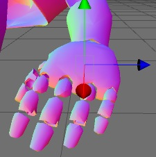
Our "Display Normals" shader does not have any properties, contains a single SubShader with a single Pass that is empty except for the Cg code. Finally, a fallback to the builtin VertexLit shader is defined. Let's dissect the Cg code part by part:
CGPROGRAM // profiles arbfp1 // vertex vert // fragment frag // fragmentoption ARB_fog_exp2
// ... snip ... ENDCG
The whole Cg snippet is written between CGPROGRAM and ENDCG keywords. At the start compilation directives are given as a special form of comments:
Following the compilation directives is just plain Cg code. We start by including a builtin Cg file:
#include "UnityCg.cginc"
The UnityCg.cginc file contains commonly used declarations and functions so that the shaders can be kept smaller. The file itself is found inside Unity application: Unity.app/Contents/CGIncludes/UnityCG.cginc. Here we'll use appdata_base structure, V2F_POS_FOG macro and PositionFog helper function from that file. We could just define them directly in the shader and not include the file of course.
Next we define a "vertex to fragment" structure (here named v2f) - what information is passed from the vertex to the fragment program. We pass the standard position and fog parameters and a float3 color parameter. The color will be computed in the vertex program and just output in the fragment program.
We proceed by defining the vertex program - vert function. Here we compute position and fog in the standard way (using helper function from UnityCG.cginc) and output input normal as a color:
o.color = v.normal * 0.5 + 0.5;
Normal components are in -1..1 range, while colors are in 0..1 range, so we scale and bias the normal in the code above. Next we define a fragment program - frag function that just outputs the calculated color and 1 as the alpha component:
half4 frag (v2f i) : COLOR
{
return half4( i.color, 1 );
}
That's it, our shader is finished! Even this simple shader is very useful to visualize mesh normals.
Of course, this shader does not respond to lights at all, and that's where things get a bit more complicated; read on Render Pipeline and Light Attenuation pages in the reference for details.
When you define properties in the shader, you give them a name like _Color or _MainTex. To use them in Cg you just have to define a variable of a matching name and type. Unity will automatically set Cg variables that have names matching with shader properties.
Here is a complete shader that displays a texture modulated by a color. Of course, you could easily do the same in a texture combiner call, but the point here is just to show how to use properties in Cg:
Shader "Tutorial/Textured Colored" {
Properties {
_Color ("Main Color", Color) = (1,1,1,0.5)
_MainTex ("Texture", 2D) = "white" { }
}
SubShader {
Pass {
CGPROGRAM
// profiles arbfp1
// vertex vert
// fragment frag
// fragmentoption ARB_fog_exp2
#include "UnityCG.cginc"
float4 _Color;
sampler2D _MainTex : register(s0);
struct v2f {
V2F_POS_FOG;
float2 uv : TEXCOORD0;
};
v2f vert (appdata_base v)
{
v2f o;
PositionFog( v.vertex, o.pos, o.fog );
o.uv = TRANSFORM_UV(0);
return o;
}
half4 frag (v2f i) : COLOR
{
half4 texcol = tex2D( _MainTex, i.uv );
return texcol * _Color;
}
ENDCG
SetTexture [_MainTex] {}
}
}
Fallback " VertexLit", 1
}
The structure of this shader is the same as in the previous example. Here we define two properties, namely _Color and _MainTex. Inside Cg code we define corresponding variables:
float4 _Color;
sampler2D _MainTex : register(s0);
Property types in ShaderLab map to Cg variable types this way:
Note that in the case of a texture property we explicitly bind it to the first sampler register: register(s0). This is to ensure that Cg will use the correct texture; sampler registers should match the order of SetTexture commands later.
The vertex and fragment programs here don't do anything fancy; vertex program uses the TRANSFORM_UV macro from UnityCG.cginc to make sure texture scale&offset is applied correctly, and fragment program just samples the texture and multiplies by the color property.
After the Cg snippet we write an empty SetTexture command:
SetTexture [_MainTex] {}
This actually sets the texture _MainTex from the properties. If you'd have more textures, you'd need to write similar SetTexture commands in the order that matches sampler register declarations (see paragraph about register(s0) above).
We have shown how custom shader programs can be generated in a few easy steps. While the examples shown here are very simple, there's nothing preventing you to write arbitrarily complex shader programs! This can help you to take the full advantage of Unity and achieve optimal rendering results.
We have a forum for shaders at forum.unity3d.com so go there to get help with your shaders! There you can also find the source of all Unity builtin shaders - to examine and learn from. The complete ShaderLab reference manual is here. Happy programming, and enjoy the power of Unity and Shaderlab.
The Shader is the root object of a shader file. Each file must define one (and only one) shader. It specifies how any objects whose material uses this shader is rendered.
Shader "name" { [Properties] Subshaders [Fallback] }Shaders can have a list of properties. Any properties declared in a shader are shown in the material inspector inside Unity. Typical properties are the object color, textures, or just arbitrary values to be used by the shader.
Each shader is comprised of a list of sub-shaders. You must have at least one. When loading a shader, Unity will go through the list of subshaders, and pick the first one that is supported by the end user's machine. If no subshaders are supported, Unity will try to use fallback shader.
Different graphic cards have different capabilities. This raises an eternal issue for game developers; you want your game to look great on the latest hardware, but don't want it to be available only to those 3% of the population. This is where subshaders come in. Create one subshader that has all the fancy graphic effects you can dream of, then add more subshaders for older cards. These subshaders may implement the effect you want in a slower way, or they may choose not to implement some details.
Here is one of the simplest shaders possible:
// colored vertex lithing
Shader "simple" {
// a single color property
Properties {
_Color ("Main Color", Color) = (1,.5,.5,1)
}
// define one subshader
SubShader {
Pass {
Material {
Diffuse [_Color]
}
Lighting On
}
}
}
This shader defines a color property _Color (that shows up in material inspector as Main Color) with a default value of (1, 0.5, 0.5, 1). Then a single subshader is defined. The subshader consists of one Pass that turns on vertex lighting and sets up basic material for it.
Shaders can define a list of parameters to be set by artists in Unity's material inspector. The Properties block in the shader file defines them.
Each property inside the shader is referenced by name (in Unity, it's common to start shader property names with underscore). The property will show up in material inspector as display name. For each property a default value is given after equals sign:
Later on in the shader, property values are accessed using property name in square brackets: [name].
Properties {
// properties for water shader
_WaveScale ("Wave scale", Range (0.02,0.15)) = 0.07 // sliders
_ReflDistort ("Reflection distort", Range (0,1.5)) = 0.5
_RefrDistort ("Refraction distort", Range (0,1.5)) = 0.4
_RefrColor ("Refraction color", Color) = (.34, .85, .92, 1) // color
_ReflectionTex ("Environment Reflection", 2D) = "" {} // textures
_RefractionTex ("Environment Refraction", 2D) = "" {}
_Fresnel ("Fresnel (A) ", 2D) = "" {}
_BumpMap ("Bumpmap (RGB) ", 2D) = "" {}
}
The options inside curly braces of the texture property are optional. The available options are:
// EyeLinear texgen mode example
Shader "Texgen/Eye Linear" {
Properties {
_MainTex ("Base", 2D) = "white" { TexGen EyeLinear }
}
SubShader {
Pass {
SetTexture [_MainTex] { combine texture alpha }
}
}
}
Each shader in Unity consists of a list of subshaders. When Unity has to display a mesh, it will find the shader to use, and pick the first subshader that runs on the user's graphics card.
A subshader defines a list of rendering passes and optionally setup any state that is common to all passes.
When Unity chooses which subshared to render with, it renders an object once for each Pass defined (and possibly more due to light interactions). As each render of the object is an expensive operation, you want to define the shader in minimum amount of passes possible. Of course, sometimes on some graphics hardware the needed effect can't be done in a single pass; then you have no choice but to use multiple passes.
Each pass definition can be a regular Pass, a Use Pass or a Grab Pass.
Any statements that are allowed in a Pass definition can also appear in Subshader block. This will make all passes use this "shared" state. Additionally, some Tags (RenderQueue) are regognized in the SubShader block.
SubShader {
Pass {
Lighting Off
SetTexture [_MainTex] {}
}
}
This subshader defines a single Pass that turns off any lighting and just displays a mesh with texture named _MainTex.
The Pass block causes the geometry of an object to be rendered once.
A Pass can define it's name and arbitrary number of Tags - name/value strings that communicate Pass' intent to the rendering engine. More details here.
After the render setup, you can specify a number of textures and their combining modes to apply.
The per-pixel lighting pipeline works by rendering objects in multiple passes. Unity renders the object once to get ambient and any vertex lights in. Then it renders each pixel light affecting the object in a separate additive pass. See Render Pipeline for details.
There are a selection of special passes available for reusing common functionality or implementing various high-end effects:
The material and lighting parameters are used to control the built-in vertex lighting.
Pixel lights are usually implemented with custom vertex/fragment programs and don't use vertex lighting. For these you don't use any of the commands described here, instead you define your own vertex and fragment programs where you do all lighting, textuting and anything else yourself.

Vertex Coloring & Lighting is the first effect to gets calculated for any rendered geometry. It operates on the vertex level, and calculates the base color that is used before textures are applied.
The toplevel commands control whether to use OpenGL lighting or not, and some configuration options. The main setup is in the Material Block, detailed further below.
This contains settings for how the material reacts to the light. Any of these properties can be left out, in which case they default to black (i.e. have no effect).
The full color of lights hitting the object is:
Ambient * RenderSettings ambient setting + |
The light parts of the equation (within parenthesis) is repeated for all lights that hit the object.
Typically you want to keep the Diffuse and Ambient colors the same (all builtin Unity shaders do this).
Always render object in pure red:
Shader "Solid Red" {
SubShader {
Pass {
Color (1,0,0)
}
}
}
Basic Shader that colors the object white and applies vertex lighting:
Shader "VertexLit White" {
SubShader {
Pass {
Material {
Diffuse (1,1,1,1)
Ambient (1,1,1,1)
}
Lighting On
}
}
}
An extended version that adds material color as a property visible in Material Inspector:
Shader "VertexLit Simple" {
Properties {
_Color ("Main Color", COLOR) = (1,1,1,1)
}
SubShader {
Pass {
Material {
Diffuse [_Color]
Ambient [_Color]
}
Lighting On
}
}
}
And finally, a full fledges vertex-lit shader (see also SetTexture reference page):
Shader "VertexLit" {
Properties {
_Color ("Main Color", Color) = (1,1,1,0)
_SpecColor ("Spec Color", Color) = (1,1,1,1)
_Emission ("Emmisive Color", Color) = (0,0,0,0)
_Shininess ("Shininess", Range (0.01, 1)) = 0.7
_MainTex ("Base (RGB)", 2D) = "white" {}
}
SubShader {
Pass {
Material {
Diffuse [_Color]
Ambient [_Color]
Shininess [_Shininess]
Specular [_SpecColor]
Emission [_Emission]
}
Lighting On
SeperateSpecular On
SetTexture [_MainTex] {
Combine texture * primary DOUBLE, texture * primary
}
}
}
}
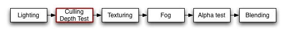
Culling is an optimization that does not render polygons facing away from the viewer. All polygons have a front and a back side. Culling makes use of the fact that most objects are closed; if you have a cube, you will never see the sides facing away from you (there is always a side facing you in front of it) so we don't need to draw the sides facing away. Hence the term: Backface culling.
The other feature that makes rendering looks correct is Depth testing. Depth testing makes sure that only the foremost objects are drawn in a scene.
Depth Testing explained.
Drawing transparent objects Back To Front.
This object will render only the backfaces of an object:
Shader "Show Insides" {
SubShader {
Pass {
Material {
Diffuse (1,1,1,1)
}
Lighting On
Cull Front
}
}
}
Try to apply it to a cube, and notice how the geometry feels all wrong when you orbit around it. This is because you're only seeing the inside parts of the cube.
The next one is more interesting; first we render the object with normal vertex lighting, then we render the backfaces in bright pink. This has the effects of highlighting anywhere your normals need to be flipped. If you see physically-controlled objects getting 'sucked in' by any meshes, try to assign this shader to them. If any pink parts are visible, these parts will pull in anything unfortunate enough to touch it.
Here we go:
Shader "Reveal Backfaces" {
Properties {
_MainTex ("Base (RGB)", 2D) = "white" { }
}
SubShader {
// Render the front-facing parts of the object.
// We use a simple white material, and apply the main texture.
Pass {
Material {
Diffuse (1,1,1,1)
}
Lighting On
SetTexture [_MainTex] {
Combine Primary * Texture
}
}
// Now we render the back-facing triangles in the most
// irritating color in the world: BRIGHT PINK!
Pass {
Color (1,0,1,1)
Cull Front
}
}
}
Controlling Culling is useful for more than debugging backfaces. If you have transparent objects, you quite often want to show the backfacing side of an object. If you render without any culling (Cull Off), you'll most likely have some rear faces overlapping some of the front faces.
Here is a simple shader that will work for convex objects (spheres, cubes, car windscreens).
Shader "Simple Glass" {
Properties {
_Color ("Main Color", Color) = (1,1,1,0)
_SpecColor ("Spec Color", Color) = (1,1,1,1)
_Emission ("Emmisive Color", Color) = (0,0,0,0)
_Shininess ("Shininess", Range (0.01, 1)) = 0.7
_MainTex ("Base (RGB)", 2D) = "white" { }
}
SubShader {
// We use the material in many passes by defining them in the subshader.
// Anything defined here becomes default values for all contained passes.
Material {
Diffuse [_Color]
Ambient [_Color]
Shininess [_Shininess]
Specular [_SpecColor]
Emission [_Emission]
}
Lighting On
SeperateSpecular On
// Set up alpha blending
Blend SrcAlpha OneMinusSrcAlpha
// Render the back facing parts of the object.
// If the object is convex, these will always be further away
// than the front-faces.
Pass {
Cull Front
SetTexture [_MainTex] {
Combine Primary * Texture
}
}
// Render the parts of the object facing us.
// If the object is convex, these will be closer than the
// back-faces.
Pass {
Cull Back
SetTexture [_MainTex] {
Combine Primary * Texture
}
}
}
}
After the basic vertex lighting has been calculated, textures are applied. In ShaderLab this is done using SetTexture command.
Note that if you use fragment programs, all texture combiner modes are ignored. You only need to write empty SetTexture command.
Texturing is the place to do old-style combiner effects. You can have multiple SetTexture commands inside a pass - all textures are applied in sequence, like layers in a painting program. SetTexture commands must be placed at the end of a Pass.
The texture block controls how the texture is applied.
Older graphics cards use a layered approach to textures. The textures are applied one after each other, modifying the color that will be written to the screen. For each texture, the texture is typically combined with the result of the previous operation.
By default, the combiner formula is used for calculating both the RGB and alpha component of the color settexture. Optionally, you can specify a separate formula for the alpha calculation. This looks like this:
SetTexture [_MainTex] { combine previous * texture, previous + texture }
Here, we multiply the RGB colors and add the alpha.
By default the primary color is the sum of the diffuse, ambient and specular colors (as defined in the Lighting calculation). If you specify SeperateSpecular On in the pass options, the specular color will be added in after the combiner calculation, rather than before. This is the default behavior of the built-in VertexLit shader.
The combiner options are supported by the following graphic cards: NVidia TNT, NVidia GeForce (all versions), ATI Rage, ATI Radeon (all versions). The number of SetTexture blocks you can have is also dependant on the card:
This small examples takes two textures. First it sets the first combiner to just take the _MainTex, then is uses the alpha channel of _BlendTex to fade in the RGB colors of _BlendTex
Shader "Examples/2 Alpha Blended Textures" {
Properties {
_MainTex ("Base (RGB)", 2D) = "white" {}
_BlendTex ("Alpha Blended (RGBA) ", 2D) = "white" {}
}
SubShader {
Pass {
// Apply base texture
SetTexture [_MainTex] {
combine texture
}
// Blend in the alpha texture using the lerp operator
SetTexture [_BlendTex] {
combine texture lerp (texture) previous
}
}
}
}
This shader uses the alpha component of the _MainTex to decide where to apply lighting. It does this by applying the texture to two stages; In the first stage, the alpha value of the texture is used to blend between the vertex color and solid white. In the second stage, the RGB values of the texture are multiplied in.
Shader "Examples/Self-Illumination" {
Properties {
_MainTex ("Base (RGB) Self-Illumination (A)", 2D) = "white" {}
}
SubShader {
Pass {
// Set up basic white vertex lighting
Material {
Diffuse (1,1,1,1)
Ambient (1,1,1,1)
}
Lighting On
// Use texture alpha to blend up to white (= full illumination)
SetTexture [_MainTex] {
constantColor (1,1,1,1)
combine constant lerp(texture) previous
}
// Multiply in texture
SetTexture [_MainTex] {
combine previous * texture
}
}
}
}
We can do something else for free here, though; instead of blending to solid white, we can add a self-illumination color and blend to that. Note the use of ConstantColor to get a _SolidColor from the properties into the texture blending.
Shader "Examples/Self-Illumination 2" {
Properties {
_IlluminCol ("Self-Illumination color (RGB)", Color) = (1,1,1,1)
_MainTex ("Base (RGB) Self-Illumination (A)", 2D) = "white" {}
}
SubShader {
Pass {
// Set up basic white vertex lighting
Material {
Diffuse (1,1,1,1)
Ambient (1,1,1,1)
}
Lighting On
// Use texture alpha to blend up to white (= full illumination)
SetTexture [_MainTex] {
// Pull the color property into this blender
constantColor [_IlluminCol]
// And use the texture's alpha to blend between it and
// vertex color
combine constant lerp(texture) previous
}
// Multiply in texture
SetTexture [_MainTex] {
combine previous * texture
}
}
}
}
And finally, we take all the lighting properties of the vertexlit shader and pull that in:
Shader "Examples/Self-Illumination 3" {
Properties {
_IlluminCol ("Self-Illumination color (RGB)", Color) = (1,1,1,1)
_Color ("Main Color", Color) = (1,1,1,0)
_SpecColor ("Spec Color", Color) = (1,1,1,1)
_Emission ("Emmisive Color", Color) = (0,0,0,0)
_Shininess ("Shininess", Range (0.01, 1)) = 0.7
_MainTex ("Base (RGB)", 2D) = "white" {}
}
SubShader {
Pass {
// Set up basic vertex lighting
Material {
Diffuse [_Color]
Ambient [_Color]
Shininess [_Shininess]
Specular [_SpecColor]
Emission [_Emission]
}
Lighting On
// Use texture alpha to blend up to white (= full illumination)
SetTexture [_MainTex] {
constantColor [_IlluminCol]
combine constant lerp(texture) previous
}
// Multiply in texture
SetTexture [_MainTex] {
combine previous * texture
}
}
}
}
Fogging blends the color of the generated pixels down towards a constant color based on distance from camera.

Fogging does not modify a blended pixel's alpha value, only it's RGB components.
Fog {
Mode }
The alpha test is a last chance to reject a pixel from being written to the screen.
After the final output color has been calculated, the color can optionally have its alpha value compared to a fixed value. If the test fails, the pixel is not written to the display
Comparison is one of the following words:
| Property: | Function: |
|---|---|
| Only render pixels whose alpha is greater than AlphaValue. Can be abbreviated as > | |
| Only render pixels whose alpha is greater than or equal to AlphaValue. Can be abbreviated as >= | |
| Only render pixels whose alpha value is less than AlphaValue. Can be abbreviated as < | |
| Only render pixels whose alpha value is less than or equal to from AlphaValue. Can be abbreviated as <= | |
| Only render pixels whose alpha value equals AlphaValue. Can be abbreviated as = | |
| Only render pixels whose alpha value differ from AlphaValue. Can be abbreviated as != >= | |
| Render all pixels. This is functionally equivalent to AlphaTest Off. Never |
A floating-point number between 0 and 1. This can also be a variable reference to a float or a range, in which case it should be written using the standard square bracket notation ([VariableName])
The alpha test is important when rendering concave objects with transparent parts. The graphics card maintains a record of the depth of every pixel written to the screen. If a new pixel is further away than one already rendered, the new pixel is not written to the display. This means that even with blending, objects will not show through.
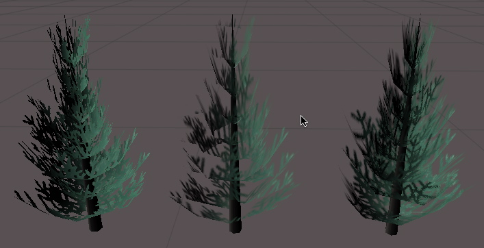
In this figure, the tree on the left is rendered using AlphaTest. Note how the pixels in it are either completely transparent or Opaque. The center tree is rendered using only alpha blending - notice how transparent parts of nearby branches cover the distant leaves because of the depth buffer. The tree on the right is rendered using the last example shader - which implements a combination of blending and alpha testing to hide any artifacts.
The simplest possible example, assign a texture with an alpha channel to it. The object will only be visible where alpha is greater than .5
Shader "Simple Alpha" {
Properties {
_MainTex ("Base (RGB) Transparency (A)", 2D) = "" {}
}
SubShader {
Pass {
// Only render pixels with an alpha larger than .5
AlphaTest Greater .5
SetTexture [_MainTex]
}
}
}
This is not much good by itself. Let us add some lighting and make the cutoff value tweakable
Shader "Cutoff Alpha" {
Properties {
_MainTex ("Base (RGB) Transparency (A)", 2D) = "" {}
_Cutoff ("Alpha cutoff", Range (0,1)) = .5
}
SubShader {
Pass {
// Use the Cutoff parameter defined above to determine
// what to render.
AlphaTest Greater [_Cutoff]
Material {
Diffuse (1,1,1,1)
Ambient (1,1,1,1)
}
Lighting On
SetTexture [_MainTex] {
combine texture * primary
}
}
}
}
When rendering plants and trees, many games have the hard edges typical of alpha testing. A way around that is to render the object twice. In the first pass, we use alpha testing to only render pixels that are more than 50% opaque. In the second pass, we alpha-blend the graphic in the parts that were cut away, without recording the depth of the pixel. We might get a bit of confusion as further away branches overwrite the nearby ones, but in practice, that is hard to see as leaves have a lot of visual detail in them.
Shader "Vegetation" {
Properties {
_Color ("Main Color", Color) = (.5, .5, .5, .5)
_MainTex ("Base (RGB) Alpha (A)", 2D) = "white" {}
_Cutoff ("Base Alpha cutoff", Range (0,.9)) = .5
}
SubShader {
// Set up basic lighting
Material {
Diffuse [_Color]
Ambient [_Color]
}
Lighting On
// Render both front and back facing polygons.
Cull Off
// first pass:
// render any pixels that are more than [_Cutoff] opaque
Pass {
AlphaTest Greater [_Cutoff]
SetTexture [_MainTex] {
combine texture * primary, texture
}
}
// Second pass:
// render in the semitransparent details.
Pass {
// Dont write to the depth buffer
ZWrite off
// Don't write pixels we have already written.
ZTest Less
// Only render pixels less or equal to the value
AlphaTest LEqual [_Cutoff]
// Set up alpha blending
Blend SrcAlpha OneMinusSrcAlpha
SetTexture [_MainTex] {
combine texture * primary, texture
}
}
}
}
Note that we have some setup inside the SubShader, rather than in the individual passes. Any state set in the SubShader is inherited as defaults in passes inside it.
Blend is used to make transparent objects.
When graphics are rendered, after all shaders have executed and all textures have been applied, thye are written to the screen. How they are combined with what is already there is controlled by the Blend command.
All following properties are valid for both SrcFactor & DstFactor. Source refers to the calculated color, destination is the color already on the screen.
| Property: | Function: |
|---|---|
| The value 1 - use this to let either the source or the destination color come through fully. | |
| The value 0 - use this to remove either the source or the destination values. | |
| The value of this stage is multiplied by the source color value. | |
| The value of this stage is multiplied by the source alpha value. | |
| The value of this stage is multiplied by frame buffer source color value. | |
| The value of this stage is multiplied by frame buffer source alpha value. | |
| The value of this stage is multiplied by 1 - source color. | |
| The value of this stage is multiplied by 1 - source alpha. | |
| The value of this stage is multiplied by 1 - destination. | |
| The value of this stage is multiplied by 1 - destination. |
Below are the most common blend types.
Pass {
Blend Off // No Blending (default)
Blend SrcAlpha OneMinusSrcAlpha // Alpha
Blend One One // Additive
Blend One OneMinusDstColor // Soft Additive
Blend DstColor Zero // Multiplicative
Blend DstColor SrcColor // 2x Multiplicative
}
Here is a small example shader that adds a texture to whatever is on the screen already:
Shader "Simple Additive" {
Properties {
_MainTex ("Texture to blend", 2D) = "black" {}
}
SubShader {
Blend One One
SetTexture [_MainTex]
}
}
And a more complex one, Glass. This is a 2-pass shader:
Shader "Glass" {
Properties {
_Color ("Main Color", Color) = (1,1,1,1)
_MainTex ("Base (RGB) Transparency (A)", 2D) = "white"
_Reflections ("Base (RGB) Gloss (A)", Cube) = "skybox" { TexGen CubeReflect }
}
SubShader {
Pass {
Tags {"Queue" = "Transparent" }
Blend SrcAlpha OneMinusSrcAlpha
Material {
Diffuse [_Color]
}
Lighting On
SetTexture [_MainTex] {
combine texture * primary double, texture * primary
}
}
Pass {
Blend One One
Material {
Diffuse [_Color]
}
Lighting On
SetTexture [_Reflections] {
combine texture
Matrix [_Reflection]
}
}
}
}
Passes and subshaders use tags to tell how and when they expect to be rendered to the rendering engine. The tags recognized by Unity are different for Passes and SubShaders. Passes can also be given a name to be referenced by a UsePass command.
Tags are basic key-value pairs. Inside a SubShader tags are used to determine rendering order. Inside a Pass tags are used to control which role this pass has in the lighting pipeline (ambient, vertex lit, pixel lit etc.).
A pass can be given a name so that a UsePass command can reference it.
You can determine in which order your objects are drawn using the Queue tag. Unity renders all objects in 4 render queues in order to make effects like transparency work properly. A Shader decides which render queue any objects using it belongs to.
Transparent and Overlay queues are rendered back to front, all other queues have arbitrary order that optimizes for performance.
The 4 queues are:
| Background | This render queue is rendered before any others. It is used for skyboxes and the like. |
| Geometry (default) | This is used for most objects. Usually opaque geometry uses this queue. |
| Transparent | This render queue is rendered after Geometry, in back-to-front order. Anything alpha-blended (i.e. shaders that don't write to depth buffer) should go here (glass, particle effects) |
| Overlay | This render queue is meant for overlay effects. Anything rendered last should go here (e.g. lens flares) |
LightMode tag defines Pass' role in the lighting pipeline. See render pipeline for details.
Possible values for LightMode tag are:
If the active subshader does not have a pass with LightMode of PixelOnly or Pixel, then Unity treats the shader as not supporting pixel lights. In that case, all lights affecting the object are treated as vertex lights.
The most common cases of LightMode usage are:
For pixel lit (LightType is Pixel or PixelOnly) passes, a LightCount tag indicates how many lights this pass computes at once. The default value is 1, meaning that a pixel lit pass computes lighting from a single light. All builtin Unity shaders compute lighting from one pixel light at a time.
For passes that use a larger LightCount (currently up to and including 2), Unity will render as many pixel lights simultaneously. If there are less lights than this number, their colors will be set to black. The light parameters (positions, colors etc.) are provided in the builtin value arrays.
For a pixel lit pass, the LightTexCount indicates what combination of light attenuation types does the pass support. The tag's value is a string consisting of '0', '1' and '2' characters; meaning a pass supports zero, one or two light attenuation textures. The default value is "012" - i.e. the pass supports all attenuation combinations. When implementing pixel lit shaders for older hardware, often you implement separate passes for these combinations because of hardware restrictions. See Attenuation and Pixel Lights for details.
Shader "Transparent Queue Example" {
SubShader {
Tags {"Queue" = "Transparent" }
Pass {
}
}
}
An example illustrating how to render something in the transparent queue
BindChannels command allows you to map vertex data from mesh data to the rendered triangles.
By default, Unity figures out the bindings for you, but in some cases you want custom bindings to be used.
For example you could map the primary UV set to be used in the first texture stage and the secondary UV set to be used in the second texture stage.
// Maps the first UV set to the first texture stage
// and the second UV set to the second texture stage
BindChannels {
Bind "Vertex", vertex
Bind "texcoord", texcoord0
Bind "texcoord1", texcoord1
}
// Maps the first uv set to all texture stages
BindChannels {
Bind "Vertex", vertex
Bind "texcoord", texcoord
}
// Maps the first uv set to all texture stages
// and vertex colors to the per-vertex color
BindChannels {
Bind "Vertex", vertex
Bind "texcoord", texcoord
Bind "Color", color
}
The UsePass command uses named passes from another shader.
Some of the shaders could reuse existing passes from other shaders, reducing code duplication. For example, in most pixel lit shaders the ambient or vertex lighting passes are the same as in the corresponding VertexLit shaders. The UsePass command does just that - it includes a given pass from another shader. As an example the following command uses the pass with the name "BASE" from the builtin Glossy shader:
UsePass " Glossy/BASE"
In order for UsePass to work, a name must be given to the pass one wishes to use. The Name command inside the pass gives it a name:
Name "MyPassName"
GrabPass is a special passtype - it grabs the contents of the screen where the object is about to be drawn into a texture. This texture can be used in subsequent passes to do advanced image based effects.
The GrabPass belongs inside a subshader. All properties are optional.
GrabPass {
TextureScale 0.5
TextureSize 256
BorderScale 0.3
// following are regular pass commands
Tags { "LightMode" = "VertexLit" }
Name "BASE"
}
| Property: | Function: |
|---|---|
| Specifies that you want the grabbed texture to have a certain pixel dimension. | |
| Specifies that you want the texture to be a certain scale of the object's screen size. This is the default behaviour. | |
| Specifies that you want to grab an extra region around the object. The value is relative to the object's bounding box. |
You can grab the screen behind the object being rendered in order to use it in a later pass. This is done with the GrabPass command. In a subsequent pass, you can access the grabbed screen as a texture, distorting what is behind the object. This is typically used to create stained glass and other refraction-like effects.
Unity will reuse the screen texture between different objects doing GrabPass. This means that one refractive object will not refract another.
Here is the most complex way ever of rendering nothing.
Shader "ComplexInvisible" {
SubShader {
// Grab the screen behind the object into _GrabTexture, using default values
GrabPass { }
// Render the object with the texture generated above.
Pass {
SetTexture [_GrabTexture]
}
}
}
This shader has two passes: First pass grabs whatever is behind the object at the time of rendering, then applies that in the second pass. Note that the _GrabTexture is configured to display at the exact position of the object - hence it becomes transparent.
After all Subshaders a Fallback can be defined. It basically says "if none of subshaders can run on this hardware, try using the ones from another shader".
A fallback statement has the same effect as if all subshaders from the other shader would be inserted into it's place.
Shader "example" {
// properties and subshaders here...
Fallback "otherexample"
}
Shaders define both how an object looks by itself (it's material properties) and how it reacts to the light. Because lighting calculations must be built into the shader, and there are many possible light types, writing quality shaders that "just work" is an involved task. This document describes the pecularities of Unity's lighting&rendering pipeline and how the shaders need to be written to support all the different lights.
In Unity, a Light can be Directional, Point or Spot light. Additionally, Ambient light level can be specified in Render Settings.
When any object is rendered, the lights that illuminate it are determined; and each light is chosen to render in Vertex or Pixel lighting mode. Per-pixel lighting usually looks a lot better, but is more expensive to render as well. So for each object, only some amount (specified in Quality Settings) of brightest lights are rendered in Pixel mode, while the remaining are rendered using Vertex lighting. When no lights are shining on an object, it is rendered in None mode.
Each object is then rendered in the following way:
Each pass in a shader communicates it's lighting type (pixel, vertex etc.) via Tags.
Vertex lights are rendered using "vertex" passes (see pass tags). All lights are rendered at once, using a fixed function OpenGL lighting model (Blinn-Phong). It is not possible to use vertex programs with vertex lights because vertex programs and fixed function lighting can be used at the same time. Note that it is still possible to use fragment programs, reading the interpolated diffuse and specular lighting colors.
In summary, vertex lighting is calculated automatically. All you do in a shader is use the calculated diffuse/specular colors, either in a fragment program or in the texture combiner setup. Vertex lights do not support light cookies.
Implementing a pixel lighting shader part is much more involved, mostly because there are different light types (directional, point, spot) and a shader must be able to process all of them. For pixel lights you also want to write a custom vertex program (using fixed function OpenGL lighting does not make sense - you could just use vertex lights and get much better performance) where you must calculate the lighting yourself.
If you implement pixel lighting passes in the shader, most often you want to implement passes for the case when no lights are shining (ambient pass) as well. See Pass Tags for details.
The details of implementing light types in custom shaders are described in Attenuation and Cookies for Pixel Lights.
The different light types in Unity's pixel lighting pipeline are implemented using texture lookups to do the attenuation:
So each light can do zero, one or two texture lookups to take attenuation and light cookie into account. Taking various lookup texture types into account there are five combinations in total:
When using fragment programs, Unity helps setting these combinations up by providing some macros and definitions in AutoLight.cginc and UnityCG.cginc Cg include files. Then what you do is:
This is pretty complex, so a full shader example is in order. This shader fully shows how to use light attenuation textures in a fragment program. The rest of the shader is kept minimal - it exposes just a color and computes a simple diffuse lighting per-vertex.
Shader "Light Attenuation" {
Properties {
_Color ("Main Color", Color) = (1,1,1,0.5)
}
Category {
Blend AppSrcAdd AppDstAdd
Fog { Color [_AddFog] }
// Fragment program cards
SubShader {
// Ambient pass
Pass {
Tags {"LightMode" = "PixelOrNone"}
Color [_PPLAmbient]
SetTexture [_Dummy] {constantColor [_Color] Combine primary DOUBLE, constant}
}
// Vertex lights
Pass {
Tags {"LightMode" = "Vertex"}
Lighting On
Material {
Diffuse [_Color]
Emission [_PPLAmbient]
}
SetTexture [_Dummy] {constantColor [_Color] Combine primary DOUBLE, constant}
}
// Pixel lights
Pass {
Tags {
"LightMode" = "Pixel"
"LightTexCount" = "012" // this is the default as well
}
CGPROGRAM
// profiles arbfp1
// vertex vert
// fragment frag
// autolight 7
#include "UnityCG.cginc"
#include "AutoLight.cginc"
// fragmentoption ARB_fog_exp2
// fragmentoption ARB_precision_hint_fastest
// Define the two structures
struct v2f {
V2F_POS_FOG;
float4 color : COLOR0;
// Pass light coords in two slots starting from TEXCOORD0.
// If we'd use some texcoords for ourselves, the index would
// be different.
V2F_LIGHT_COORDS(TEXCOORD0);
};
struct v2f2 {
V2F_POS_FOG;
float4 color : COLOR0;
};
// Vertex program
v2f vert (appdata_base v)
{
v2f o;
PositionFog( v.vertex, o.pos, o.fog );
// compute a simple diffuse per-vertex
float3 ldir = normalize( ObjSpaceLightDir( v.vertex ) );
float diffuse = dot( v.normal, ldir );
o.color = diffuse * _ModelLightColor[0] * 2;
// compute&pass texture coords for attenuation
PASS_LIGHT_COORDS(0); // 0 is the texture index, see SetTexture part below
return o;
}
// Fragment program
// TEXUNIT0 is the texture index, see SetTexture part below
float4 frag (v2f2 i, LIGHTDECL(TEXUNIT0)) : COLOR
{
// Just multiply interpolated color with attenuation
return i.color * LIGHTATT;
}
ENDCG
// We don't use any textures ourselves,
// so attenuation textures start from 0
SetTexture [_LightTexture0] {}
SetTexture [_LightTextureB0] {}
}
}
}
Fallback " VertexLit", 1
}
Writing pixel lit shaders for older hardware (that does not support fragment programs) is even more involved due to resource constraints and the fact that these shaders have to be written in an assembly-like language. In this case most often you write separate passes and shaders that support 0, 1 or 2 attenuation textures.
For example, the above shader written for ATI Fragment Shader cards (Radeon 8500 and up) would be like the example below. Ambient and Vertex passes are still the same in this case, but there are separate Pixel passes for 0, 1 and 2 attenuation textures, with different shaders accordingly. In a real shader you'd implement both SubShaders in a single shader, and possibly a couple more for even older video cards (gotta love all the different cards out there, right?).
Shader "Light Attenuation" {
Properties {
_Color ("Main Color", Color) = (1,1,1,0.5)
}
CGINCLUDE
// This block will be pasted into all later cg program blocks
#include "UnityCG.cginc"
float4 Lighting( appdata_base v )
{
// compute a simple diffuse per-vertex
float3 ldir = normalize( ObjSpaceLightDir( v.vertex ) );
float diffuse = dot( v.normal, ldir );
return diffuse * _ModelLightColor[0] * 2;
}
ENDCG
Category {
Blend AppSrcAdd AppDstAdd
Fog { Color [_AddFog] }
// ATI Fragment shader cards
SubShader {
// Ambient pass
Pass {
Name "BASE"
Tags {"LightMode" = "PixelOrNone"}
Color [_PPLAmbient]
SetTexture [_Dummy] {constantColor [_Color] Combine primary DOUBLE, constant}
}
// Vertex lights
Pass {
Tags {"LightMode" = "Vertex"}
Lighting On
Material {
Diffuse [_Color]
Emission [_PPLAmbient]
}
SetTexture [_Dummy] {constantColor [_Color] Combine primary DOUBLE, constant}
}
// Lights with 0 light textures
Pass {
Tags {
"LightMode" = "Pixel"
"LightTexCount" = "0"
}
CGPROGRAM
// vertex vert
struct v2f {
V2F_POS_FOG;
float4 color : COLOR0;
};
v2f vert (appdata_base v)
{
v2f o;
PositionFog( v.vertex, o.pos, o.fog );
o.color = Lighting( v );
return o;
}
ENDCG
Program "" {
SubProgram {
"!!ATIfs1.0
StartOutputPass;
MOV r0, color0; # just output color
EndPass;
"
}
}
}
// Lights with 1 light texture
Pass {
Tags {
"LightMode" = "Pixel"
"LightTexCount" = "1"
}
CGPROGRAM
// vertex vert
struct v2f {
V2F_POS_FOG;
float4 color : COLOR0;
float4 LightCoord0 : TEXCOORD0; // one light texcoord
};
v2f vert (appdata_base v)
{
v2f o;
PositionFog( v.vertex, o.pos, o.fog );
o.color = Lighting( v );
o.LightCoord0 = LIGHT_COORD( 0 ); // light texcoord
return o;
}
ENDCG
Program "" {
SubProgram {
"!!ATIfs1.0
StartOutputPass;
SampleMap r0, t0.str; # attenuation
MUL r0, color0, r0.a; # multiply with color
EndPass;
"
}
}
SetTexture[_LightTexture0] {}
}
// Lights with 2 light textures
Pass {
Tags {
"LightMode" = "Pixel"
"LightTexCount" = "2"
}
CGPROGRAM
// vertex vert
struct v2f {
V2F_POS_FOG;
float4 color : COLOR0;
float4 LightCoord0 : TEXCOORD0; // two light texcoords
float4 LightCoordB0 : TEXCOORD1;
};
v2f vert (appdata_base v)
{
v2f o;
PositionFog( v.vertex, o.pos, o.fog );
o.color = Lighting( v );
o.LightCoord0 = LIGHT_COORD( 0 );
o.LightCoordB0 = LIGHT_COORD( 1 );
return o;
}
ENDCG
Program "" {
SubProgram {
"!!ATIfs1.0
StartOutputPass;
SampleMap r0, t0.stq_dq; # attenuation1
SampleMap r1, t1.stq_dq; # attenuation2
MUL r0, color0, r0.a;
MUL r0, r0, r1.a;
EndPass;
"
}
}
SetTexture[_LightTexture0] {}
SetTexture[_LightTextureB0] {}
}
}
}
Fallback " VertexLit", 1
}
Unity provides a handful of builtin values for your shaders: things like current object's transformation matrices, light's color, time etc.
You just use them in ShaderLab like you'd use any other property, the only difference is that you don't have to declare it somewhere - they are "built in".
Using them in Cg shaders requires including UnityCG.cginc file.
| Name | Type | Value | Usage |
| _Object2World | float4x4 | Object to World space matrix | Finding world space positions |
| _World2Object | float4x4 | World to Object space matrix | Finding local space positions from world space |
| _ObjectSpaceCameraPos | float3 | Camera's position in object space |
All these properties are actually arrays of size 2: i.e. _ModelLightColor[2]. Number 2 is the maximum amount of pixel lights that Unity can render in one pass. Most pixel lit shaders are written to process only one light/pass though. See LightCount tag documentation for details.
In plain ShaderLab, you access them by just appending an index: e.g. the first light's model*light color is _ModelLightColor0. In Cg shaders, they are exposed as real arrays, so the same in Cg is _ModelLightColor[0].
| Name | Type | Value | |
| _ModelLightColor | float4 | Material's Main * Light color | |
| _SpecularLightColor | float4 | Material's Specular * Light color | |
| _ObjectSpaceLightPos | float4 | Light's position in object space. w component is 0 for directional lights, 1 for other lights | |
| _Light2World | float4x4 | Light to World space matrix | |
| _World2Light | float4x4 | World to Light space matrix | |
| _Object2Light | float4x4 | Object to Light space matrix | |
| Name | Type | Value | Usage |
| _Time | float4 | Time (t/20, t, t*2, t*3) | Animating things inside the shaders |
| _SinTime | float4 | Sine of time: (t/8, t/4, t/2, t) | Animating things inside the shaders |
| _CosTime | float4 | Cosine of time: (t/8, t/4, t/2, t) | Animating things inside the shaders |
| _CubeNormalize | samplerCUBE | Normalization cube map | Used for pixel lighting on older hardware |
| _SpecFalloff | sampler2D | Specular lookup map | Used for pixel lighting on older hardware |

Tag values - passes and subshaders use tags to tell how and when they expect to be rendered to the rendering engine.
Builtin variables - a set of builtin variables for the shaders: transformation matrices, light parameters etc.
By default, the shaders are set up correctly regarding fog. When using multipass, you often want to change the fog value for each pass to avoid applying it multiple times.
| Property name | Value |
| _FogColor | The fog color |
| _AddFog | Fog color used for Additive passes. |
| _MultiplyFog | Fog color used for multiply passes. |
| _FogStart | The fog starting distance |
| _FogEnd | The fog end distance |
| _FogDensity | The fog density |
You can change the OpenGL material settings from within a shader using the following properties:
| Property name | Value |
| Ambient | The Ambient color |
| Diffuse | Diffuse material color |
| Specular | Specular material color |
| Emissive | Emissive material color |
| Shininess | Shininess factor |
| Name string | Sets the name of this pass to string |
| Color color | Sets the current color to color |
| Blendcolor color | uses color as the blending color |
| Lighting bool | Turns OpenGL lighting on/off |
| Colormask rgbflags | Disables rendering to the color channels that are set. f.eks will no rendering to the alpha channel occur when writing Colormask Alpha |
| Cull cullorient | cullorient can be Front, Back or FrontAndBack and sets culling of those faces. It is also possible to write Cull false for no culling. |
| Shademodel model | Sets the shading model in OpenGL. Can be Smooth or Flat. |
| Seperatespecular bool | Turn Seperate specular on/off. |
Print this and stick on the wall!
State modifiers
| |||
| Culling & Depth | Blending | Material & Lighting | Esoteric stuff |
| ZTest ZWrite Cull | Blend AlphaTest | Material Lighting Fog SeparateSpecular Color | ColorMask ShadeModel Offset |
| Texturing | Channels | Programs | Tags |
| SetTexture Texgen ConstantColor Combine Matrix | BindChannels Bind | Bind Properties Local | Tags |
| Material | Diffuse Specular Ambient Emission Shininess | ||
| Blend Modes | One Zero SrcAlpha DstAlpha SrcColor DstColor OneMinus*** AppSrcAdd AppDstAdd | ||
| Alpha and Depth Test Modes | Less Greater LEqual GEqual Equal NotEqual Always | ||
| Fog | Mode Color Start End | ||
| Combiners | Combine Texture Primary Previous Lerp Alpha | ||
Tags
| |||
| RenderQueue | Background Geometry(def) Transparent Overlay | ||
| LightMode | VertexOrNone (def) Vertex Pixel PixelOrNone | ||
Channels
| |||
| Vertex Normal Tangent TexCoord Color | |||
Premature optimization is the root of all evil
– Donald Knuth.
Unity always post-processes imported files, thus storing a file as a multi layered psd file instead of a jpg will make absolutely zero difference in the size of the player you will deploy. Save your files in the format you are working with (eg. .mb files, psd files, tiff files) to make your life easier.
The amount of assets in your project folder does not influence the size of your built player. Unity is very smart about detecting which assets are used in your game and not. Unity follows all references to assets before building a game and builds a list of assets that need to be included in the game. Thus you can safely keep unused assets in your project folder.
After Unity has completed building a player, it prints an overview of what type of asset took up most file size, and it prints which assets were included in the build:
To see it just open /Applications/Utilities/Console.app

An overview of what took up space
Often textures take up most space in the build. The first thing to do is to turn on texture compression when building the player.
If that doesnt get the size down, it is about reducing the size of the textures. The trick here is that you don't need to modfiy the actual source content. Simply select the texture in the project view and choose Assets -> Import Settings....
Here you can specify the maximum texture size which will be used when importing the texture. It is a good idea to zoom in on an object that uses the texture, then adjust the maximum texture size until it starts looking worse in the scene view.

Tuning texture size
Compression | Memory consumption |
| DXTC1 RGB | 0.5 Bpp (bytes/pixel) |
| DXTC3 RGBA | 1 Bpp |
| DXTC5 RGBA | 1 Bpp |
| RGB 16bit | 2 Bpp |
| RGB 24bit | 3 Bpp |
| Alpha 8bit | 1 Bpp |
| RGBA 16bit | 2 Bpp |
| RGBA 32bit | 4 Bpp |
To figure out total texture size: width * height * bpp. Add 33% if you have Mipmaps.
When building a game there is a button Compress textures.
By default Unity does not compress textures when importing, even if you choose DXTC compression. This is because compressing textures takes a long time and it is better to have fast iteration time when importing textures into your game. (You can change this behaviour in the preferences though)
The compress textures button in the build settings will make sure that all textures that have DXTC texturing enabled will actually be compressed, before building the player.
When building a Web Player, Unity automatically generates a html file next to the player data file. It contains the default html code to load the web player data file using both the Netscape plugin and ActiveX plugin.
It is possible to further tweak and customize the generated html file to make it fit better with the containing site's design, to add more html content etc. The following articles discuss the related subjects in depth:
By default Unity Web Player displays a small Unity logo and a progress bar while loading a web player. It is possible to customize the appearance of this loading screen. Here is a sample html file of a customized loader screen.
Please note that modifying the loader images is only allowed with Unity Pro.
The Unity Web Player takes five customizable parameters which are used to display custom loader screens. All images used need to be RGB 8 bit/channel .png files. The parameters to images can be absolute or relative links.
Example:
logoimage="mylogo.png" progressbarimage="myprogress.png" progressframeimage="myprogressframe.png" backgroundcolor=020F16This example is an excerpt of the HTML file inside the <embed> tag (for Firefox/Safari/Netscape/Opera browsers). Similar HTML code needs to be added for Internet Explorer as separate <param> tags inside the <object> tag (see the sample html file).
The parameters are:
Web players are loaded by Unity browser plugin. The HTML code required to put a web player on the page is different for Internet Explorer and all other browsers. IE uses ActiveX plugin and an object tag must be used while all other supported browsers use Netscape plugin and an embed tag must be used.
The default HTML template is generated by Unity when building a web player and is all you need to display Unity content in a web page. This page describes the HTML code to load Unity in detail in case you want to customize the generated file or generate the code on your own (e.g. from a server side script).
The smallest HTML snippet to load web players on all supported browsers is such (place inside body tag):
<object id="Unity" classid="CLSID:36D04559-44B7-45E0-BA81-E1508FAB359F"
codebase="http://unity3d.com/download_webplayer/UnityWebPlayer.cab"
width="400" height="300">
<param name="src" value="MyDataFile.unityweb" />
<embed src="MyDataFile.unityweb" width="400" height="300"
name="UnityEmbed" type="application/x-unity" pluginspage="http://unity3d.com/getunityplayer.html" />
</object>
Here both object and embed tags are used in such a way that IE ignores the embed tag while the other browsers ignore the object tag.
The HTML generated when building a web player is slightly more complex - it uses browser detection to generate only the needed tags (object or embed) and it inserts some content in the case Unity Web Player can't be loaded or installed.
The HTML page that contains a web player can communicate with it and vice versa. Basically there are two communication directions:
The Unity web plugin has a function SendMessage that can be called from a web page. This is a very similar to the GameObject.SendMessage function in Unity scripting API. From a web page you pass object name, function name and a single argument; and SendMessage will call the given function in the given game object.
When building a web player, the generated HTML template contains a helper function GetUnity() that returns the Unity object. Use it to call SendMessage; for example this would execute function MyFunction on the game object named MyObject, passing a string argument.
<script language="javascript" type="text/javascript">
<!--
function SaySomethingToUnity()
{
GetUnity().SendMessage( "MyObject", "MyFunction", "Hello from a web page!" );
}
-->
</script>
Inside of Unity, you need to have a script attached to the game object named MyObject. This script needs to implement a function named MyFunction:
function MyFunction(param : String)
{
Debug.Log(param);
}
A single string, int or float argument must be passed using SendMessage. Note that this parameter is required on the calling side. If you don't need it, just pass a zero and ignore it on the Unity side.
Also note that the game object specified by the name can be given like a path name eg. /MyObject/SomeChild. SomeChild must be a child of MyObject and MyObject must be at the root level due to the / in front of it's name.
For this Application.ExternalCall function is used. Basically you can call any JavaScript function defined in the web page, passing any number of parameters to it. For example, this call in a game script:
Application.ExternalCall( "SayHello", "The game says hello!" );will execute function SayHello in the web page, passing a single string to it. The web page would define the function like this:
<script language="javascript" type="text/javascript">
<!--
function SayHello( arg )
{
// show the message
alert( arg );
}
-->
</script>
Of course, the function in the web page can be arbitrarily complex; for example navigate to some other web page, change some HTML content or even perform some AJAX magic.
Arbitrary number of string, int and float arguments can be passed using ExternalCall.
You don't even have to define functions in the embedding web page, as with the Application.ExternalEval function, you can execute arbitrary browser code from the game.
The following example checks that the page embedding the game is fetched from a certain host (unity3d.com). If not, it will redirect to another URL. This can be used to prevent deep linking to your game.
Application.ExternalEval( "if(document.location.host != 'unity3d.com') { document.location='http://unity3d.com'; }" );
Unity has extensive support for C, C++ or Objective-C based plugins. In order to use a plugin you need to do two things:
So the plugin provides a simple c interface. The Script then invokes the functions exposed by the plugin. Here is a very simple example:
float FooPluginFunction () { return 5.0F; }
using UnityEngine;
using System.Runtime.InteropServices;
class SomeScript : MonoBehaviour
{
// This tells unity to look up the function FooPluginFunction inside the plugin named "PluginName"
[DllImport ("PluginName")]
private static extern float FooPluginFunction ();
void Awake ()
{
// Calls the FooPluginFunction inside the PluginName plugin
// And prints 5 to the console
print (FooPluginFunction ());
}
}
If you are building a plugin for Mac OS X, you have to create a bundle. The easiest way to do this is using XCode. Use File->NewProject... and select the Bundle - Carbon Bundle preset.
If you are using C++ or Objective-C to implement the plugin you have to make sure the functions are declared with C linkage to avoid name mangling issues.
extern "C"
{
float FooPluginFunction ();
}
Plugins on Windows are DLL files with exported functions. Practically any language or development environment that can create DLL files can be used to create plugins. Again, if you use C++, declare functions with C linkage to avoid name mangling issues.
Once you have built your bundle you have to copy it to Assets/Plugins folder. Unity will then find it by its name when you define a function like this:
[DllImport ("PluginName")]
private static extern float FooPluginFunction ();
Please note that PluginName should not include the extension of the filename.
For cross platform plugins you have to include both .bundle (for Mac) and .dll (for Windows) files in Plugins folder. Once you have placed your plugins in the Plugins folder there is no more work required on your side. Unity automatically picks the right plugin for the right deployment platform and includes it with the player.
A complete example of the Plugin interface can be found here.
This is a complete MidiPlugin for OS X which uses Apple's CoreMidi API. It provides a simple C API and a C# class using the C API. The C# class contains a high level API, with easy access to NoteOn and NoteOff events and their velocity.
An example how to assign image data to a texture from C++ directly to OpenGL. This can be used to implement decompressed movies. This example includes both XCode (for Mac) and Visual Studio (for Windows) project files. The plugin with accompanying Unity project can be found here.
Mono Interop with native libraries.
When building a player, you sometimes want to modify the built player in some way. For example you might want to add a custom icon, copy some documentation next to the player or build an Installer. Doing this manually can become tedious and if you know how to write sh or perl scripts you can automate this task.
After Building a player unity automatically invokes the script placed in your project folders "Assets/Editor/PostprocessBuildPlayer" path.
In this script you can post process the player in any way you like. For example build an installer out of the player.
You can use perl, sh or any other commandline compatible language.
Unity passes some useful command line arguments to the script, so you know what kind of player it is and where it is stored.
#!/usr/bin/perl
my $installPath = $ARGV[0];
# The type of player built:
# "dashboard", "standaloneWin32", "standaloneOSXIntel", "standaloneOSXPPC", "standaloneOSXUniversal", "webplayer"
my $target = $ARGV[1];
# What optimizations are applied. At the moment either "" or "strip" when Strip debug symbols is selected.
my $optimization = $ARGV[2];
# The name of the set in the project settings
my $companyName = $ARGV[3];
# The name of the product set in the project settings
my $productName = $ARGV[3];
print ("\n*** Building at '$installPath' with target: $target \n");